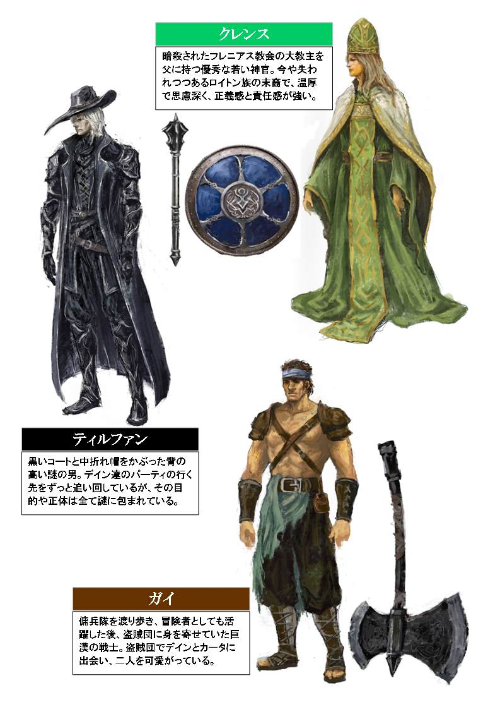
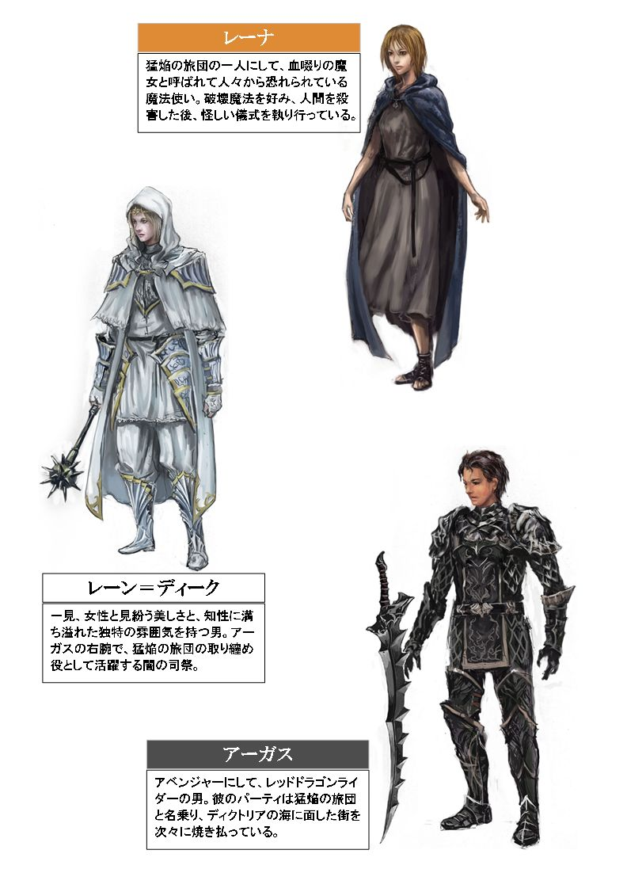
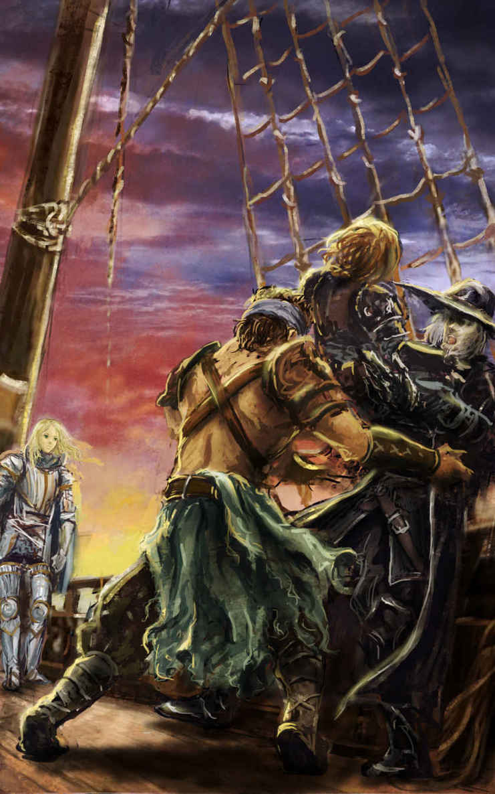

| カドルステイト物語 第二部『贖罪の雫』 | |
| 守下 尚暉 | |
| pubfull (2016) | |
守下尚暉 作
カドルステイト物語
第二部 『 贖罪の雫 』



第一章 リートの大司教
１
空一面真っ赤だった。
まるで地獄の釜の底が溢れ出したかのような光景が、辺り一面に広がっている。木は燃え、家は燃え、人は燃え、街が燃えている。ただひたすらどこまでも真紅。その真っ赤に染まった空が、実は夜空であることに気付ける者など、恐らく誰一人として居ないであろう。太陽の炎が地上に舞い降りたかのような惨状に、星々は恐れおののいて姿をくらまし、月の女神も恐怖にかられ、その微笑をそっと夜の帳の中に隠してしまった。夜空から放たれる光など、最初から存在していなかったかのように、新たな地上の支配者となった炎の輝きが、辺り一面全てを飲み込み、包み込んでいたのだ。
その空に踊る、巨大な赤い塊があった。しかし、それは決して太陽などではない。見下ろす大地全てを自らの巨躯と同じ色で染め上げんとばかりに、牙の並ぶ大きな口から絶え間なく炎を吹き出し続けている。その度に、街を更なる炎が飲み込んでいくのだ。鋭い牙、鋭い角、鋭い眼、鋭い爪、鋭い翼、鋭い尾、その巨大な赤い塊を形作るもの全てが、まるで鋭利な刃物であるかのようだ。その佇まいは、見る者を理屈なく恐怖に陥れるだけの説得力があった。世界最強の生物にして、神とも戦う力を持つとさえ謳われるドラゴン、その中でも特に凶暴と言われるレッドドラゴンが、この街の上空を飛行しているのだ。
そんな危険な生物の背に乗る一人の男が居た。彼は全身を真っ黒い鱗帷子で覆い尽くし、見る者に禍々しい印象を与えたが、しかしその頭にはヘルムをかぶらず、憚ること無く素顔を熱風に晒していた。男は、燃やせるものは全て燃やし、この街を燃やし尽くして灰燼に帰するまで、飽きること無く街を炎の海で埋め尽くそうとしている。その狂気に満ちた眼は、普通の人間のそれではなく、逆に生気が感じられない。彼が何の為にここまでの破壊をするのか、最早本人を含めた誰にも理解できないのかもしれない。火遊びする子供のように、理由もなくただひたすらに、その目に映るもの全てに火をくべ、灰を作り上げる事そのものが、あたかも彼の目的であるかのようだった。
「アーガス様」
燃え盛る炎の音の中に混じって、誰かを呼ぶ声が不思議と通って聞こえてきた。聞いただけで、滲み出る知性を覗わせるかのようなその声は、その巨大なレッドドラゴンに騎乗する黒帷子の男を呼んでいるのだ。
「レーンか？」
まるで、面白い遊びを取り上げられたかのように、不満そうな表情を隠すことも無く、アーガスと呼ばれた男は街を炎で焦がす作業を中断して、辺りを見回し始める。炎の海に沈む瓦礫と塵ばかりの地面の一角に、炎の洗礼を受けない不思議な球体があるのを、アーガスは見付けた。その中に、八人の男女が静かに佇んで、アーガスの様子を窺っているのだ。その中の一人、美しい金の頭冠をかぶり、白い法衣を着た線の細い男が、声を発した張本人レーンだった。彼をひと目見ただけでは、女性と見間違えてしまう者も多いであろう。彼は、独特の女性的な美しさを醸し出していた。
「こちらは、もう全て殲滅が済んでおります。他の者も皆、自身の持ち場の殲滅を完了し、つい今しがた合流したところです」
決して炎の音に掻き消されることのない彼の声は、不思議と理知的な雰囲気を漂わせている。彼の言葉に合わせるかのように、炎に包まれることのない球体内に居る八人の男女は、恭しくアーガスに対して一礼し、そのまま跪いた。
一人は、黒い口髭を生やした男で、その手には細長い黒塗りのステッキを持ち、シルクハットに黒い礼服を着た手品師のような出で立ちだった。
一人は、髪を肩で綺麗に切り揃えた美しい女で、何も特別な武装もせず女性らしい衣服を着ていたが、その両手は返り血のせいか真っ赤に染まっていた。
一人は、短髪の黒髪に長身の女で、板金鎧に身を包んだ重装騎士のような姿をしているが、女とは思えぬ体格で、八人の中で二番目に身体が大きかった。
一人は、銀髪を靡かせた優男で、長弓を肩に掛け革製の鎧に身を包んだ軽装だったが、特に目を引くのはその黒い肌と特徴的な尖った耳だった。
一人は、同じく銀髪を靡かせた優男で、長弓を持った男と瓜二つの容姿でありながら、武装は重装備に身を包み、曲剣をその腰にぶら下げていた。
一人は、人とは思えぬ巨躯を甲冑で固めた鉄仮面の男で、常人なら両手で持たねば扱えないような巨大な武器を、片手で軽々と振り回す、恐るべき怪力の持ち主だった。
一人は、見るからに魔法使い風のフードを深くかぶった男で、美しい刺繍の施された紫のローブに身を包み、その左手には杖ではなく禍々しい長剣が握られていた。
一人は、女性と見紛う美しさを持つ男で、綺麗な金の頭冠に白い法衣を着た独特の雰囲気を持ち、その声からは知性が滲み出るレーンと呼ばれた男だ。
レッドドラゴンライダーのアーガスが、騎乗するドラゴンの飛行高度を徐々に下げていくと、その翼から繰り出される風圧によって、燃え盛る炎が竜を避けるように大きく吹き上がった。そしてレッドドラゴンが大地に降り立つと、まるで地震でも起こったかのような轟音が辺り一面に響き渡る。アーガスは軽やかにその背から飛び降りると、燃え上がる大地に両足を付けた。ドラゴンは、そんなアーガスに甘えるように顔を近付け、アーガスはその顔に右手をそっと添えて、ポンポンっと叩いてみせる。すると赤い竜は甲高い咆哮を夜空いっぱいに轟かせながら、その大きく広げた翼を定期的にはためかせ、アーガスが八人の男女に向かって通れる道を作るかのように、炎の海を二つに割った。その道を通って、アーガスは静かにレーンと呼ばれた男の方に向かって、ゆっくりと歩みを進めていく。八人の男女達は、近付いてくるアーガスに向かって更に深く恭しい一礼をしてみせた。
「殲滅とは、文字通りの殲滅だ。全てを炎で焦がし尽くし、完全に滅ぼすまでの事を言う。分かっているだろう」
アーガスが冷たい目をレーンに向けて言う。肩で髪を切り揃えた女の表情が、それを聞いてややこわばった。それを見たレーンが、アーガスに進言した。
「このレーン＝ディーク、もちろん心得ています。全てを焼き尽くし殲滅し滅ぼすことで、一人の目撃者もいなくなる。一人の逃亡を許してしまったのは、わたしの責任です。直ちに何人かを追跡に当たらせましょう」
「急がせろ。次の目標は、もう決まっている」
ドラゴンライダーの男は、不機嫌さを隠そうともせずレーンに厳しく言い付ける。そんな彼の姿を見て、ここに集まった八人の内の何人かは、畏怖の念を彼に抱き身体を震わせているようにも見えた。しかし逆に、眉をピクリともさせず無表情なままの者も数人居る。
「はい。して、次の目標とは？」
レーンがアーガスに聞くと、アーガスはスッと西の方を指差す。この街の西には港があり、黒い海が広がって燃え上がる街をその波に反射させていた。その黒と赤の模様の先に、陸地があるのが小さく見える。その島を指差したまま、アーガスは言った。
「この海沿いにある街や村を、全て焼き尽くして殲滅した暁には、英雄気取りの王の首を取りにいく。夏までに間に合わさねばならない。次の目標は、フィリーだ」
２
春の暖かな日差しが、優しく野に降り注いでいる。遠くに望むザンターグルの山々は、その頂に白い雪を残しながらも、そこから吹き下ろされてくる風には冬の痛みはもう感じられない。草花は野原を彩り、棚畑では村人達が忙しく春の作付け作業に勤しんでいた。
あの激しい戦いから既に、四日あまりが経過していた。ジアンティス帝国の侵攻を受けたザンターグル王国の山奥にあるリーフの村は、フレニアス連合の正規軍から派遣されたブランアーノ騎士隊と、それに傭兵隊を加えた連合軍によって、元の平穏を取り戻しつつあった。
リーフ解放戦に参加した傭兵隊は既に撤収し、犠牲者の埋葬と略式の葬儀の為に残っていたブランアーノ騎士隊も、そろそろリートへの帰路につき、速やかにリート大聖堂にて勝利を報告して凱旋式を執り行わなければならない。普通、勝利した軍は足取りも軽く、その騎士隊の総長ともなれば心も晴れやかなものだが、半数近い犠牲者を出したこともあってか、総長である彼女の顔は曇っていた。しかし、そんな彼女の表情を、実際に窺い知る事は誰にも出来ない。そもそも、外観だけでその騎士を女性と判別することの出来る者など、そう居ないだろう。なぜなら彼女は、その全身を白銀の甲冑で包み込み、頭には意匠を凝らした装飾のあるヘルムをかぶっているからだ。
「リフレア様、帰還の準備が出来ました」
そんな女総長の元に、一人の老騎士が現れて報告をした。リフレアと呼ばれた女総長は静かに膝を曲げ、身体全体を低くするように優雅な一礼を、その老騎士に見せた。
「わかりました、ソル爺。少しだけ、待って下さい。もう少しだけ」
リフレアは、信頼するソル騎士長に短くそう言った。彼女の視線の先には、リーフの村を治める長老の館が見える。その館のすぐ東側、先日まで帝国の本隊が陣取っていた広場に、ブランアーノ騎士隊のキャンプが張られていたのだ。しかし、それももう片付けられ、リートへの帰路につく準備は既に整っていた。
ソル騎士長はもちろん、騎士隊の者は全員、毎日リフレアがその館に足繁く通い、彼の見舞いをしていた事を当然知っていたが、それはあくまで見舞いである。神聖な神の奇跡の御業を、その傷付いた傭兵に施している事など誰も知らなかったし、敢えて誰も問い質したり追求したりはしなかった。
リート教会のパラディンであるリフレアは、厳しい規律を守らなければならない。如何に味方の傭兵とは言え、聖餐式で神の祝福を受けていない下賤の者の集まりである傭兵に、神の奇跡の御業を行使する事は、リート教会において硬く禁じられている行為である。パラディンの規律は非常に厳格で、その禁を破った者は厳しく罰せられ、その奇跡の力を行使する能力も剥奪されると言われているのだ。しかし、ソル騎士長を含めたブランアーノ騎士隊の者は皆、誰も彼女を咎めたりはしなかった。そう、彼女はただ、あくまで傷付いた彼の見舞いに行っていただけなのだ。
しかし、その事はリフレアに更なる罪の意識を感じさせた。罪悪感に苛まされながら、リフレアは思う。リート教会に戻って凱旋式が済んだら、その事をリスト大司教に打ち明けて懺悔をするべきだろうと。そうでなければ、ずっと口をつぐんでいるソル騎士長をはじめとする騎士隊の皆や、デインという名の若者にも申し訳がない。ふと、リーフ解放戦の遠征途中、リフレアがデインと交わした会話が思い起こされる。
（それよりオレ、ずっとあんたに礼を言いたいと思ってたんだ）
（お礼...ですか？）
（二ヶ月ほど前だったか。リート大聖堂前の大広場では、すまなかった。あの時もらった薬で、命を救われた仲間もいる。本当に、世話になった。感謝してる）
（デイン様、いけません。わたしの立場上の都合で恐縮なのですが、その事は口に出してはならないことになっているのです）
（また、つまらない事を口走ってしまった...重ねてすまない）
（いいえ、デイン様にはこちらの都合でご不便をお掛けしてしまい、恐縮の限りです。どうか、ご容赦頂きたく）
あの時リフレアは、本当は自分の事を覚えてくれていたデインの言葉が嬉しかったのだ。しかし、自らの立場の都合上、彼の真摯な礼に答える事さえ出来なかった。そのことを、デインに対して申し訳なく思っていた。こうなったらもう、リート教会で全てを打ち明けて懺悔し、罰を受けてでも楽になった方が良いと彼女は思う。たとえその罰によって、もう二度と神の奇跡の御業を行使出来なくなったとしても、騎士隊の皆やデインに対する罪の意識に苛まされながら生きていくよりも、ずっと良いような気がするのだ。
そんな時、彼女がずっと見つめていた館の扉が開いた。リフレアはハッとして、その扉から出てきた人物を確認する。その扉からは、背丈の小さな軽装の少年が出てきた。それにしても大荷物だ。艶消しされた黒い革鎧を着込み、腰の革ベルトには二本の短剣が挿してある。ベルトには短剣以外にも小さな小物入れが複数付けられて、それらとは別に大きな背負袋を背負っていた。どう見ても、これから遠出するかのような出で立ちだ。
「カータ様、どちらに行かれるのですか？」
カータと呼ばれた少年は、リフレアに声を掛けられるとニカッと歯を見せて、子供のように無邪気に駆け寄ってきた。
「リフレアさん、別に遊びに行く訳じゃないよ。ボク達、旅に出るんだ！」
「旅...ですか？」
彼女はキョトンとした仕草をしてカータに聞き返す。せっかく長くて辛い傭兵での日々を乗り越えて、故郷に帰ったばかりだというのに、少年はまた旅に出ると言うのだ。しかも、「ボク達」とカータは言った。その言葉は、彼も一緒だということを示唆していた。
「うん、ボクと兄ちゃんとで、それぞれ旅の目的は違うんだけどね。でも、どうせ同じタイミングで旅に出るんだから、一緒の方が楽しいし何かと心強いでしょ？」
「カータ様の旅の目的は、何でしょうか？ もし、差し支え無ければ、教えて頂けませんか？」
カータの話から推察するに、何か目的あっての旅のようだ。それをリフレアは彼に聞いていた。
「いいよ。ほら、これを見てよ」
そう言って、カータは黒革鎧の襟元に付けられた、小さなバッジをリフレアに見せる。
「これは、何ですか？」
「これが、ボクの母ちゃんを探す手掛かりなんだって。ボクと兄ちゃんは、ずっと小さい頃から爺ちゃんに育てられたみなし子だったんだ。爺ちゃんはボク等の親も同然だけど、本当の父ちゃんと母ちゃんじゃない。その事は知ってはいたけど、爺ちゃんは今までずっと、本当の父ちゃんと母ちゃんの事について、何も教えてくれなかったんだ」
リフレアは、静かに頷きながら少年の話を聞いている。丁度その頃、館の扉からもう一人の若者が出てくるのが見えた。
「でも、この戦いが終わった後、爺ちゃんがやっとその事について詳しく教えてくれたんだ。ボクがまだ赤ちゃんだった頃、ボクの母ちゃんは訳あって爺ちゃんにボクを預けたんだって。そして、母ちゃんに繋がる物が、このバッジだって爺ちゃんがくれたんだ。兄ちゃんも別の理由で旅に出る事を決めたみたいだし、だからボクも兄ちゃんと一緒に旅をして、ボクの母ちゃんを探す事にしたんだ」
「これが、手掛かりなんですね。ちょっと詳しく見せて頂いても良いですか？」
リフレアは言うと、カータは元気よく頷いて、その襟元のバッジをリフレアに見せた。金属製だろうか、キラリと光を反射するそのバッジには、細やかな模様が精巧に刻み込まれている。どこかの国の紋章か、貴族の徽章のようにも見えるが、残念ながらリフレアはその模様に見覚えが無かった。
「その模様が何かは、わたしには分かりませんが、もし良ければリート教会で調べて貰いましょうか？」
「え？ ほんと？ やった！ ありがとうリフレアさん、それなら早く母ちゃんが見付かりそうだね！」
リフレアの申し出を聞いて、カータは素直に喜んだ。そんな彼の後ろから、もう一人の若者が現れ、カータの肩を叩く。
「どうした、何こんな所で油売ってんだ？」
その短髪黒髪の若者は、カータと全く同じデザインの艶消しされた黒い革鎧を着込んでいた。荷物はカータより少なめだったが、右肩に肩掛けされた細長い黒革袋が特に目を引く。その袋の中には、途轍もなく巨大な大弓が入っている事を、ここに居る者は皆知っている。それは、この若者にとって最大にして唯一の武器であった。
「あ、兄ちゃん。リフレアさんが、ボクのバッジの事を教会の偉い人に協力して貰って調べてくれるってさ」
「デイン様、もうお身体の具合いは良いのですか？」
デインと呼ばれた青年は、二人同時に話し掛けられ、一瞬たじろいだ。
「あぁ、良かったなカータ。身体の方はもう何ともないみたいだ。いつも世話に...っと、この事はダメなんだったか」
デインはカータに答えたあと、リフレアに礼を言おうとして途中でそれをやめた。そんな彼の様子を見て、リフレアはまた心が痛む。
（リートに戻ったら、大聖堂でリスト大司教様に全てを打ち明けて懺悔をしないと...）
リフレアは、そう心に誓いながらデインに言った。
「デイン様、あなたが旅に出る事を決めたから、カータ様もついて行くことを決められたと聞きしました。デイン様の旅の目的は何でしょうか？ 差し支えなければ、教えて頂けませんか？ カータ様のバッジのように、何か協力出来る事があるかもしれません」
騎士総長に言われ、デインは一瞬躊躇うような仕草を見せたが、しかし、スティンファー＝レイスの弓の事を教えてくれたのは、もともと彼女である。今さら隠しても仕方がないような気もして、デインは口を開いていた。
「カータから大体聞いてるなら話は早い。オレもカータと同じ長老のみなし子だ。ただ、オレの場合、赤ん坊の頃この山奥に捨てられていたのを長老が拾ったらしい。長老が言うには、赤ん坊のオレと一緒にこの弓、スティンファー＝レイスの弓が置いてあったとのことだ。それと対になっている大矢二本と、スクロールも長老から渡された」
そう言って、デインは荷物の中から銀糸で丸めて留められた一枚のスクロールを取り出して見せる。リフレアは、そのスクロールを手に取ってみたとき、まずそのズシリとした重みに驚かされた。革製なのか布製なのか、素材は分からないが随分と分厚い生地だ。そして彼女は、銀糸の結び目に手を掛けて中を開いて見たが、中身は白紙で何も書かれていない。
「オレは、それを手掛かりに、自分の本当の故郷を探す旅に出る」
そう宣言したデインに対して、リフレアはスクロールを元の状態に戻すと銀糸で留めて、両手で彼にそれを返した。
「それでしたら、カータ様のバッジと一緒に、それらの弓とスクロールも、リート大聖堂のリスト大司教様に頼んで鑑定して頂きましょうか？ 大司教様がお調べになれば、きっと何かが分かるはずです」
リフレアはそう、デインに進言した。
「それは助かるが、いいのか？ あんたには迷惑掛けっ放しだ」
デインは言ったが、リフレアは静かに首を横に振って見せる。
「それに、旅の御方の安全をお護りするのも、立派な騎士の務めです。そうですよね、ソル爺」
そう言って女総長は、傍らに控えていた老騎士の方を向く。
「ま、そういうことですな」
ソル騎士長は、彼女が少し明るさを取り戻しつつあるのを感じていた。リートに向かうのであれば、いずれにしても同じ方向になるので、特に手間が増える訳でもない。何より、その若者達と行動を共にすることで、リフレアの顔に笑顔が戻るのであれば、騎士長はそれで充分に満足だったのだ。
リフレアは、この村を出身とした若い二人の傭兵に、せめて最後に別れを告げてリートに帰るつもりだったところが、図らずも彼等ともうしばらく旅を共にする事になって、胸を膨らませていた。彼等が所属していた傭兵隊『貫く双槍』は壊滅してしまい、リーフ解放戦の活躍における二人の給金の出処が無くなってしまった事も気に掛けていた彼女は、自分に協力出来ることであれば、出来る限りの協力を惜しまず彼等に尽くしたいと思うようになっていた。
３
都市国家リート。フレニアス連合に加盟している連合四カ国の中で最も小さい国にして、最も人口の多い大都市の国。リート教会が、ラーク神の教義を元に定めた法によって統治し、街そのものが自治権を持つ、ファルファデラの中でも最も大きな都市のひとつである。ザンターグルの山岳地帯よりも、一足早く春を迎えていたリートは、天気の良い日には汗ばむ程の熱気に包まれていた。
リーフの村を発って二週間が経過した頃、ブランアーノ騎士隊は都市国家リートに到着していた。往きは二十日以上掛かった山道も、下り道にもなれば幾分か楽だったのだ。それに加え、傭兵隊の歩兵が居ないので、軍馬と馬車の足で移動できる。デインとカータの旅の出足は、まさに快適そのものだった。彼等は、軍用の物資が積み込まれた荷馬車の一角に席を用意され、流れる景色を存分に楽しんでいた。
白昼のリートは、相変わらずの喧騒に包まれ、そんな彼等を出迎える。
「うわぁ、兄ちゃんすごいよ」
カータは、荷台の柵から頭を半分だけ出して、目を輝かせながらデインに言った。リートの繁華街の大通りを騎士隊が行軍していく様を、馬上から見るのはまさに壮観だった。大通りを埋め尽くさんばかりの黒山の人だかりが、騎士隊の行軍の為に綺麗に左右に道を開き、その間を颯爽と騎士隊の隊列が進んでいくのだ。街の人々は皆、そんな騎士隊を仰ぎ見るように見上げている。カータはあたかも、自分が王様になったかのような気分に浸っていた。
「カータ、なんて顔してんだ。みっともない真似はやめろ」
そんなカータを見て、デインは恥ずかしく感じていた。デインとカータは、身を屈めて資材用の荷馬車の荷台に座っていた。自分達は騎士隊ではないのだ。白銀の甲冑に身を包んだ統一された武装の騎士隊の中で、自分達が顔を出してしまうと変に目立ってしまう。自分が騎士隊の隊列を乱すようで、デインには憚られたのだ。しかし内心、自分もカータと同じように、繁華街の様子を馬上から見てみたいと思っている事は言うまでもない。
やがて、ブランアーノ騎士隊は凱旋門を潜ると、とても大きな広場に出た。リート教会の本拠地、リート大聖堂と、その前に広がっている大広場である。ここは、他国で言うところの王城の庭園のような場所で、リート大聖堂前の広い敷地に敷き詰められた石畳と、植え込みに整然と並んだ草花と木が、美しく調和した大広場だった。大聖堂を中心に四方に造られた人工池は、澄んだ水を湛えながら静かに流れ、街の中を網の目のように張り巡らされた水路を通って、南の港へと流れ込んでいる。そしてその広場に立ち並ぶ六体の立像は、ファルファデラで信仰されている七柱の神々を象ったものだが、その頂点に君臨する知恵の神ラークの彫像だけは、大聖堂内の礼拝堂奥に在るのだ。さながら、神々の楽園が地上に舞い降りたかのような独特の雰囲気が、この大広場にはあった。
「旅の御方、到着しました」
荷馬車の御者を務めていた騎士に言われ、荷台から降りた二人は、伸びをして長旅からの開放感を味わっていた。南の方から吹き抜けてくる潮風は、爽やかな涼風となって、汗ばむ暑さから身体を冷やしてくれるが、それと同時に潮風特有のベタついた不快感も残して通り過ぎていった。
「助かった、すまない」
「どうもありがとう」
御者に礼を言ってから大聖堂の方を見ると、リフレアがソル騎士長を伴って、こっちの方に歩み寄ってくるのが見える。もちろん、女総長と老騎士は二人ともヘルムをかぶっているので、顔まで窺い知ることは出来ないが、その体格と特徴的な二人の組み合わせから、デインとカータは即座にそれを理解した。デインとカータは、その二人にも深々と頭を下げる。ブランアーノ騎士隊の騎士達のように、サマになる一礼とはお世辞にも言い難いが、それでも彼らなりに、感謝の気持ちを表したかったのだ。
「世話になった。すまない」
「リフレアさん、どうもありがとう。お陰ですごく楽な旅だったよ」
そんな様子を見て、かしこまった礼を返すリフレアとソル。
「長旅、ご苦労だったな」
ソル騎士長は、そんな二人に声を掛けた。ブランアーノ騎士隊の騎士達は、軍馬や馬車を広場の片隅に停めて、束の間の休息を楽しんでいるようだ。彼等が思い思いに談笑している中、ふと大聖堂の鐘がこの大広場全体に鳴り響き、大聖堂の正面にある大きな両開きの扉が開け放たれた。そして、その中から神官や修道女ら聖職者達が続々と現れ、ブランアーノ騎士隊の労をねぎらい始めているようだ。ブランアーノ騎士隊の騎士達は、彼ら聖職者達に出迎えられながら、大聖堂の中へと次々に吸い込まれていく。
「デイン様、カータ様、お疲れ様でした。これから、わたし達ブランアーノ騎士隊は、大聖堂で凱旋式を執り行わなければなりません。その後になりますが、デイン様の弓とスクロールと、それからカータ様のバッジの事を、リスト大司教様に鑑定依頼してみようと思います。夜にもう一度、改めてこの広場に来て頂けませんか？」
リフレアはそう言って、デインとカータの顔を見る。正確には見ているのかどうかは分からないが、彼女がかぶっているそのヘルムが、二人を交互に見渡すように動いていた。
「ほんと？ そしたら兄ちゃん、ボクら宿屋でちょっと休んで時間潰してこようよ」
カータは嬉しそうだ。
「リスト大司教って、誰なんだ？ 位の高い神官？」
デインは、ふと頭に浮かんだ疑問を口にしていた。リーフの村を出発するときにも、彼女はその名を口にしていた。なんとなく、リフレアが仕える教会の中の偉い人なのだという事は想像出来るが、世間知らずのデインは、具体的にはよく分からないのだ。老騎士はそんな若者の声を聞いて、信じられないといった調子で口を開く。
「何と嘆かわしい。リスト大司教様もご存知ないとは。リフレア様より、貴方がたお二人を丁重に扱うよう言い付けられているから穏便に済ませているところだが、普通なら叱責に値する無知であるぞ」
呆れ果てた様子のソル騎士長に対して、リフレアはそっと左手を彼の肩の上に置いて、老騎士を窘めた。
「リスト大司教様は、リート教会でラーク神の教義を広めている御方で、この都市国家リートの国政も司っている人物です。このリートが、長く平和と繁栄を保っていられるのも、全て、リスト大司教様のお力の賜物なのです」
そう言って、リフレアは両開きされた大聖堂の入り口の方を指差す。
「ほら、あそこに居られます、あの御方がリスト大司教様ですよ」
------その直後、デインとカータは、息が止まるかのような圧迫感を味わうことになる。
「兄ちゃん...あの人って、もしかして...」
「あぁ、...間違いない」
二人の心は、完全に恐怖に支配されていた。そこには、金糸で綺羅びやかな刺繍の施された法衣を着て、ブランアーノ騎士隊を出迎えている初老の男の姿があった。色彩鮮やかな宝石が鏤められた大きな頭冠を頭にかぶり、右手には金属製の錫杖を握って、満面の笑みを浮かべながら両手を広げて騎士達の労をねぎらっている、その人物こそリスト大司教その人だとリフレアは言ったのだ。そして、そのリスト大司教と全く同じ姿をした神官を、デインとカータはリドネス解放戦で目にしていた。リドネス解放戦に参加した盗賊団『爪研ぐ黒猫』の、燃え落ちていく絶望のキャンプの中で、炎に包まれた大テントの出口から、古代文明の工芸品をその手に持って出てくる彼の姿を、確かにデインとカータは目撃したのだ。リフレアが指差したリスト大司教は、間違いなく、その時に見た神官と同一人物だったのである。
デインとカータは、二人とも知らず知らずのうちに、両足が震え出していた。顔面は蒼白になり、恐怖とも憤怒とも取れない、歪んだ苦悶の表情をその顔に浮かべて、じっと大聖堂前に立つリスト大司教の姿を睨み続けていた。
「リフレアさん、ごめん。やっぱり、いいや...」
かなり長い空白の時間のあと、カータがポツリと言葉をこぼした。
「あぁ。悪いな」
デインも言うと、二人はきびすを返して、凱旋門の先にあるリートの繁華街に向かって足を進めようとする。
「え？ お二人共、如何されたのですか？ デイン様、カータ様、夜にまた、時間を改めて鑑定品をお持ち頂ければ、わたし...」
何が起こったのか分からず、リフレアが二人を呼び止める。
「オレは、リスト大司教って奴に鑑定を依頼したくない。ただ、それだけだ」
デインが振り返りもせずに言う。それは、拒否ではなく拒絶だった。そんなデインを見て、老騎士は耐えかねて口を開く。
「若者よ、いくら何でも、それは無礼が過ぎるぞ。せっかくリフレア様がご厚意でリスト大司教様に口を利いて下さると仰っているのに、それを無下に踏み躙るなぞ、無礼だとは思わんのか！」
しかしリフレアは、左手を横に上げてそんな騎士長を制すると、少しずつデインとカータの方に歩み寄っていった。彼女の足を護るグリーヴが、石畳に接触する度にガチャガチャと音を立てている。デインとカータは、リフレアが少しずつ背後から近付いてくるのを、その音だけで感じとっていた。
「デイン様とカータ様が、なぜリスト大司教様に鑑定依頼するのを拒絶するのか。その理由だけでも、教えて頂けないでしょうか？」
屈託の無い、透き通った高い声が、デインとカータの背中に突き刺さる。リスト大司教の姿を見た瞬間から、二人の様子が明らかに変化したのは、リフレアも気付いていた。しかし、その理由が分からないのだ。
だが、デインもカータも、その理由をはっきりとリフレアに告げる事など出来なかった。なぜなら、事情を詳しく話してしまうと、自分達がリドネス解放戦に盗賊団として参加していた事実が白日の下に晒されてしまうのみならず、自らが和平交渉の神官を暗殺した張本人であることを明かさなければならない事に繋がってしまうからだ。
「すまない、事情は...言えないんだ」
デインは、彼女に背を向けたまま言った。いや、深い事情など言えるはずが無かった。そんな彼等の背後から、ガチャガチャという金属音が聞こえ始める。
「リフレア様？」
ソル騎士長の咎めるような声がした。
「わたしの目を見て言って」
そのとき、デインとカータの真正面にある凱旋門の向こう側、僅かに見える繁華街の更に向こう、リート港の方から爽やかな潮風が吹いてきて、ここに立ち尽くした四人の間を音もなく通り抜けていった。デインは、叱られた子供が親の顔色を窺うかのように、何か恐ろしい物を見なければならない覚悟を決めながら振り向いた。
リート大聖堂と、その前に広がった大広場が、荘厳な雰囲気を醸し出して彼の目の前に広がっている。そしてその前には、長い金髪を潮風に靡かせた白い肌の少女が、じっと青い瞳でデインの目を見つめていた。その全てを見透かすかのような目に、思わず吸い込まれてしまいそうになるが、それでも真実を語ることなど、デインには到底出来なかった。
最初は小さな嘘だった。以前、同じこの場所でデインとリフレアが出会ったときは、デインはリフレアから旅の観光客と間違われて彼女に助けられた。その後、リーフ解放戦で再会した時、デインはリドネス解放戦で盗賊団に所属していたにも関わらず、傭兵隊の隊員だったとリフレアに偽った。更に、そのリドネス解放戦では、盗賊団の頭領であるザックに命じられて、和平交渉に立つフレニアスの神官の暗殺にも手を染めている。
デインは、ずっと彼女に嘘をつき続けているのだ。その罪悪感から、リフレアの青い瞳をじっと見ることに耐えられなくなってしまい、デインは思わず彼女の視線から目を逸らした。そして、デインをじっと見つめる彼女の背後には、リート大聖堂の入り口が見えていた。燃え上がる盗賊キャンプの中で、炎に包まれた神官の姿が、そこに居るリスト大司教の姿と重なって、デインの心の奥底に閉じ込めていた恐怖と絶望と怒りを、掻き立て始めているかのようだ。
カータにしても同様だった。少年も、リフレアを直視できずにいた。そして、その女総長越しに、大聖堂前に立つリスト大司教の姿が見えた時、彼の目からは思わず涙が零れ落ちていた。
そんなデインとカータの姿を見て、リフレアはハッとした。険しい表情をしたまま硬直しているデインと、涙が溢れだして声も発することなく泣きだしたカータ。二人は、リスト大司教に鑑定依頼するのを拒絶する理由を説明してはくれないが、余程の事情があるのは明白だった。そして、今はそれを彼等から聞くことが出来ないのだと、リフレアは悟り始めていた。まだ、自分はそこまで彼等からの信頼を得られていないという事実を痛切に感じながら、いつか、彼等が進んでその理由を話せる日が来る事を、リフレアは望まずには居られなかった。
デインはその時、忘れ掛けていた大切な事を思い出していた。それは、壊滅した盗賊キャンプから共に脱出した、巨躯の男のことだった。彼は確か、リートでやる事があると言って、その後ザンターグルに向かったデイン達とこの街で別れたのだ。その事がデインの中で引っ掛かって仕方がない。あの燃え上がる盗賊キャンプの中で、派手な衣装に身を包んだ神官を目撃した事は、ガイにも伝えていたのだ。盗賊団『爪研ぐ黒猫』で長く活躍し、ザックの無二の相棒でもあったガイは、恐らくその神官が、リスト大司教である事に気付いていたのではないだろうか。壊滅した盗賊キャンプから逃げる道中で、ガイは言っていた。
（ワシは、リートに戻るぞ。どうしてもやらなきゃならん事があるんだ）
（坊主ども、くれぐれも言っとくが、もう二度と盗賊には関わるな。そして『爪研ぐ黒猫』で色々あったことも全部忘れるんだぞ。いいな？）
（前にも言ったが、ワシはこのリートでやることがある。坊主どもは故郷に帰るんだろ？ ここでワシらはお別れだ）
（手伝い？ そんなの要らねぇ。むしろ坊主どもが居たら足手まといだぞ）
（いいか、絶対に変な気は起こすんじゃないぞ。田舎に帰らなきゃならんのだろ？ 坊主どもは汚い仕事から綺麗さっぱり足を洗ったんだ。もう二度とこんな世界に戻ってくるんじゃないぞ。ワシがこれからやろうとしていることを嗅ぎ回ったり、こっそりワシについてきたりするのも、絶対に駄目だからな！）
（達者でな、坊主ども。この冬は楽しかったぞ。元気でやれよ！）
デインは、盗賊キャンプから逃げ出して、リートの街で別れるまでのガイの言葉を思い返してみると、どうしても嫌な予感がしてならなかった。そして、一つの結論に至った時、デインは別の依頼をリフレアに持ち掛けていた。
「鑑定はいい。悪いんだが、別のことを頼まれてくれないか？」
４
机の上に置かれたランタンの灯りが静かに揺れて、照らし出された部屋全体を小さく揺らしている。このランタン以外に灯りは無く、暗い夜の闇が室内を支配していた。部屋に用意されているベッドはまだ使われた形跡がなく、シーツと布団が綺麗にセットされて来客者の疲れを癒やすために待機している。しかしこの部屋の来客者は、ベッドで身体を休めそうな気配など、まだ微塵も感じさせなかった。白地をベースにした裾の長い修道女用の礼拝服を着た来客者は、夜遅くまでランタンの灯りを頼りに、机に座って何か書き物をしているのだ。
リフレアは、幾つかの分厚い書類を机の上に重ねて並べ、ひたすら調べ物を続けていた。一枚ずつ丁寧に書類をめくって、その都度用意した紙に羽ペンでメモを書き加えていく。すぐ側にある窓から外を見てみると、眼下に広がる大広場と凱旋門、そしてその先に続いているリートの繁華街の明かりが溢れているのが見えた。毎晩のようにリートの繁華街は賑わいをみせ、夜半過ぎまで活気に満ちている。そんなリートの繁華街が眠りにつくには、まだ少し早い時間帯のようだ。
デインが唐突に依頼してきた用件は、彼等の旅の目的である「故郷探し」と「母親探し」とは余りにも脈略の無いもので、リフレアは正直断ってしまっても問題ないような内容だった。しかし、彼等のリスト大司教に対する只ならぬ拒絶がどうしても心に引っ掛かって、彼女は協力することにしたのだ。デインとカータは、このリート教会を統括するリスト大司教の姿を見て、明らかに怯えているように見えた。あの慈愛に満ち溢れた優しい大司教を、そこまで畏れる理由が彼女には皆目見当もつかない。
ブランアーノ騎士隊の勝利を祝う凱旋式が終わった後、彼女はリスト大司教に自らの罪を告白して、懺悔するつもりでいた。しかし、リスト大司教に対するデインとカータの異常な怯え方を見た直後では何故か躊躇われてしまい、結局、リスト大司教に懺悔を申し出ることが出来ずにいたのだ。だが、ずっとこのままでは居られないとリフレアは思う。きちんと大司教に懺悔し、免罪を乞いて、正式に神から赦しを得なければならない。彼女は自分自身の魂に嘘をつき続けたまま、これ以上パラディンで居続けることなど、難しいと感じ始めていた。
そんな時、ふと書類をめくるリフレアの手が止まった。デインが言っていた名とは少し違うが、名前も時期も罪状も、この男が一番しっくりくる。彼女は、その名前と罪状、そして状況などが記された詳細な情報を手元の紙に書き写すと、机の上に広げていた書類を片付け始めた。机の上に重ねて広げられていたそれらの書類の表紙には、それぞれ「指名手配者リスト」「逮捕者リスト」「処刑者リスト」と書かれていた。
リフレアは、それらの書類を机の上に纏めると静かに立ち上がり、自分のために用意されたこの客室のドアを開けて廊下に出た。そして長い廊下を歩いて行こうとしたその時、彼女の背後から幾人かの人影が慌ててリフレアに駆け寄ってくる音が聞こえてくる。
「お嬢様、こんな夜更けにどちらへ行かれるのですか？」
それは、ブランアーノ家お付の侍女達であった。
「別にどこへ行くという訳ではありません。なかなか寝付けなかったものですから、少し夜風に当たってから、軽く礼拝堂でお祈りをして床に就こうと思っていただけですよ」
リフレアは、そんな侍女達に軽く微笑みながら言った。
「まぁ、いけませんお嬢様。こんな夜更けにお一人で外出なさるなんて」
侍女達はそれを聞いて、リフレアを部屋に連れ戻そうとする。しかし、彼女は言った。
「そんな、大袈裟なものではありません。ちょっと大聖堂前に出て、大広場の夜景を見るだけですから」
「それでしたら、わたくし共もご一緒に」
侍女の申し出に対して、リフレアは静かに首を横に振ってみせた。
「いいえ、わたし一人で行って参ります。あなた達と一緒では、却って気持ちが昂ぶってしまい、ますます寝付けなくなってしまうかもしれません。わたし一人で、ゆっくりと気持ちを落ち着かせたいのです」
リフレアが言うと、侍女達はみな困ったような顔をして、お互いに顔を見合わせ始める。
「お嬢様が、そこまでおっしゃるのなら仕方がありません。ですが近頃は、日中汗ばむ陽気になるとは言え、まだ夜の風はお身体に毒で御座います。どうしても外出なされるのでしたら、どうかこちらをお召になって下さい」
そう言って、侍女の一人が羽織ものを一枚、リフレアの肩に掛ける。
「ありがとう。わたしもすぐに戻って寝ますから、あなた達ももうお休みになって下さい」
リフレアが侍女達に言うと、侍女達は恭しく一礼をして、その場で彼女を見送り始めた。リフレアは、ようやく厳しい関門を突破したようだ。誰にも聞こえないように小さく溜め息を吐くと、そのまま長い廊下が交差した場所で左手に折れ曲がり、天井の高い開けたホールに出た。そこから大理石で出来た長い階段を、一階に向かってコツコツと足音を立てながら下りていく。階段は一階にある広い礼拝堂の一角に繋がっていた。静まり返った夜の礼拝堂は、遠い街の明かりをステンドガラスに通すことで、その内部を色鮮やかな模様に染め上げて、独特の荘厳さを感じさせる佇まいだった。リートの繁華街はこれからが宴の最高潮といった時間帯かもしれないが、礼拝堂にはさすがに誰一人として人影が無い。リフレアは、この礼拝堂の中央通路を進んだ先にある大聖堂正面の大扉ではなく、その脇にある通用口の方に向かって進んでいった。そして静かにその戸を開いて、大聖堂の外に広がる大広場に出る。
大広場には、侍女達が言っていた通り少し冷たい潮風が吹き抜けていた。南側に見える凱旋門の向こうから、繁華街の明かりが溢れ出して、この大広場を仄かに明るく照らしている。繁華街で賑わう人々の声も、かすかに潮風に乗って聞こえてくるようだ。夜空を見上げても、街が明るいせいかあまり星の輪郭がはっきりと見えない。月の明かりも、今は巨大な建造物であるリート大聖堂の陰にすっぽり隠れてしまい、この位置からは見ることが出来なかった。
リフレアは、目を凝らしてこの大広場を見回してみると、植え込みの脇に二人の人影があるのを見付けた。そして彼女は、その二つの人影に向かって静かに歩みを進めていく。
「大変お待たせしました」
そう言ってリフレアは、白い礼拝服の膝上あたりを片手で持って腰を曲げ、あでやかに一礼してみせた。デインは最初、彼女がリフレアであることに気が付かなかった。いつもの甲冑姿でも、長老の館で見たチュニック姿でも無かったからだ。カータはそんなデインの頭を、パシッと引っ叩くと、悪戯っぽい笑いをしてみせた。
「何すんだ」
デインがやや怒気を孕んだ調子でカータに言うと、カータはリフレアの背中に回り込むようにして素早く逃げる。
「助けて、リフレアさん」
そんな二人のやり取りを見て、リフレアは思わず右手を口に添えて吹き出してしまった。日中に見たカータの怯えた表情は、もうどこかに消えてしまったようだ。いつも陽気なカータが、涙をこぼしていたその表情は、見る者の心に痛みを与えるには充分過ぎた。彼女もそのことが、少し気掛かりだったのだ。
「デイン様も、カータ様も、元気そうで良かったです。依頼された件について、少し調べて参りました」
リフレアはそう言うと、二人は真顔に戻って彼女をじっと見つめる。
「で、どうだった？」
「はい。多分ですが、デイン様がお探しになっている方と思しきお名前が、逮捕者リストの中に記載されていました」
リフレアのはっきりしない表現に、デインとカータは首を傾げた。
「多分？ 思しき？...って、どういうことだ？」
デインの質問に、カータも細かく頷いてみせる。
「デイン様から伺っていたお名前は、見当たらなかったのです」
「なんだって？」
そういえば、デインとカータは特に考えていなかったが、盗賊団の中では偽名を使ったり、アダ名や通り名で名乗る者が多いというのは充分に考えられる。彼等の知る巨漢の盗賊のガイという名だって、本名では無いかもしれないのだ。
「リフレアさんが言う、多分この人じゃないかって人は、なんて名前なの？」
カータが聞いた。
「ガイ...というお名前の方は居られませんでしたが、ガイセリックというお名前の方が、デイン様の仰る頃と近い時期に逮捕されています。罪状に関しても、あなたの予想に近いのでは無いかと」
「ガイ...ガイセリック...ガイ？」
デインは、リフレアが語ったその名を繰り返し口に出してみた。確かに、似ている。ガイの本名がガイセリックだったとしても不思議では無い。
「逮捕者リストって事は、まさかガイさん、死刑を宣告されちゃったりしてないよね？」
カータが心配そうな表情でリフレアに聞いた。
「罪状が軽いのでそれはありません。聖職者達に対する暴力ならびに、リート大聖堂の備品類等、器物破損。罪に応じて刑も軽めで、リート監獄で五十日間の禁錮刑ののち、釈放されるようです。逮捕時期は今から約一ヶ月と少し前といったところなので、もう少しで釈放されるということですね」
リフレアの話を聞いて、デインとカータは二人同時に胸を撫で下ろすかのような表情をした。そんな様子を、リフレアは訝しげに思う。なぜ、ザンターグルの山奥から旅に出たこの若い二人が、リート大聖堂で暴れて逮捕された犯罪者の身を案じなければならないのか、彼女の理解の範疇を超えていたのだ。
「リフレアさん、いつも兄ちゃんのお願いを聞いてくれて悪いんだけど、ボクからもお願いがあるんだ。いいかな？」
リフレアが物思いに耽っていたとき、ふとカータが彼女に対して切り出した。
「はい、カータ様。わたしに出来ることなら協力します。何でも仰ってみて下さい」
リフレアは、真正面から彼女を見つめる少年に、微笑みながら答えてみせる。少年は何も悪びれる様子もなく、屈託のない顔で意外なことを彼女に言った。
「ボク、ガイさんに会いたい。面会できないかな？」
「え？」
リフレアは、そんなカータの顔をじっと見つめた。そして、昼間に見せたその少年の涙を思い起こしていた。感情をあまり表に出そうとしないデインと違い、カータはそのままの気持ちを素直に表情に出してくれる。そんな少年のあの涙には、悲しみや怒りなどといった感情ではなく、何か別の悔しさのようなものも滲み出ていたような気がするのだ。
「わかりました。リート監獄の警備兵に掛け合ってみましょう」
リフレアはそう言うと、小さく膝を曲げながら、礼拝服の膝上あたりを片手で持って、軽く一礼してみせた。
「ありがとう、リフレアさん」
「いつも面倒を掛けてすまない」
きっと、無茶なお願いも多いことだろう。デインとカータが出す無理難題に、あくまで協力的なリフレアに対して、田舎から出てきた二人は、深い尊敬の念を抱き始めていた。そして、このまま彼女の善意に甘え続けても良いものなのかどうか、疑問を感じ始めてもいた。この旅は、デインにとってもカータにとっても、あくまで自分の為の個人的な旅なのだ。連合の正規軍であるブランアーノ騎士隊の騎士総長に頼り続けることに限界を感じつつも、今は彼女の力に頼るしかない自分達の無力さを、デインもカータも痛感せずには居られなかった。
５
等間隔に並んだランタンの小さな炎が、細く長い通路をぼんやりと浮かび上がらせている。床も壁も天井も、全て石材で敷き詰められたその通路には、出口や窓などが一切なく、ランタンの灯りが無ければ恐らく完全な暗闇に閉ざされてしまうだろう。その暗い通路を、硬い物で叩くような音が一定間隔で反響していた。複数の足音が、少しずつ近付いてきているのだ。その足音の人数は、どうやら三人のようだ。
「ここだ」
長い通路に反響していた足音が途中で止まり、一人の男がそう言った。そこには、通路に一定間隔で並ぶ鉄扉の一つがあった。この鉄扉の中に入るよう、ここを案内した衛兵は二人に促しているのだ。デインとカータは、衛兵に小さくお辞儀してから、その硬く冷たい鉄製の扉を部屋の内側へと開いた。重たく軋む独特の音が、長い通路と部屋の中に響き始める。デインとカータが部屋の中に入っていくと、再び鉄の擦れるような音がした後、バタンという大きな音が響いて、この部屋の鉄扉が硬く閉じられた。
「面会が済んだら、さっきの詰所に顔を出せ。預かった荷物はその時に返す。怪しい物は全部こちらで預かっているから変な事は出来ないと思うが、絶対におかしな真似はするんじゃないぞ。面会時間の十分が経っても詰所に来なかったら、様子を見にくるからな」
部屋に入らず通路に残った衛兵は、デインとカータにそう告げると、硬い足音を通路に響かせながら、少しずつ部屋から遠ざかっていった。
「ガイ？」
中は小さな部屋になっていて、その中心を鉄格子の仕切りで半分に分断されていた。さっきまで足音の反響と鉄扉を開閉する音で全く気付かなかったが、その部屋の中には小さなオルゴールの音が微かに聞こえていた。その旋律は、今にも止まってしまいそうなくらいにか細く、ゆっくりと流れている。
「その声は、まさかデカ坊主か？」
鉄格子の奥の荒れた独房の中で、力無く座り込んでいた大男が、顔を上げてその低い声を発した。
「やっぱりガイさんだ、無事だったんだね！」
カータが彼に呼び掛けると、大男は立ち上がってデインとカータの方へと走り寄り、自分と彼等を仕切る鉄格子を強く握り締めて、その格子扉全体を大きく軋ませた。
「バカ野郎、何しに来たんだ坊主ども。ワシを追って来るなと言っておいたハズだろうが。ワシのやろうとしている事を嗅ぎ回るな、とも言っておいたハズだぞ」
大男は、二人の訪問者を懐かしそうな顔で見回しながらも、声を荒げて言った。そして一言。
「だが、坊主どもの顔がまた見られて、ワシは嬉しいぞ」
と、付け加えた。ガイと呼ばれた男は、立ち上がると大きな体格と鍛え上げられた肉体から、熊を連想させるような大男だった。如何に怪力の持ち主であったとしても、この硬い鋼鉄製の格子扉が破られることなど有り得ない。それでも彼が本気になれば或いは、とさえ思わせるだけの風格がある。デインとカータとガイは、リート監獄で再会を果たし、お互いの無事を喜び合っていた。
デインとカータは、リフレアの働き掛けによって、ガイとの面会を許可されていた。リートの外れにあるリート監獄は、繁華街から馬車で二時間ほど進んだ小高い丘に建てられていた。リフレアは、送迎の馬車まで用意して、ガイセリックとの面会を手配してくれたのだ。しかし、当のリフレアは総長としての執務で忙しいのか、今日は彼女の姿はどこにも見えなかった。
「それにしても坊主ども、よくワシがココに居ると分かったな。故郷に帰ったんじゃなかったのか、驚いたぞ」
「ガイさん、ボク達もう、だいたい全部分かっちゃったんだ。別にガイさんを追っ掛けて変に嗅ぎ回っていた訳じゃないよ。昨日たまたま、大聖堂で一番偉い人の顔を見ちゃっただけなんだ」
カータの言葉を聞き、ガイは腕を組んで低い声を上げた。
「なるほど。大聖堂で、リスト大司教の顔を見ちまったんだな」
ガイの言葉に、デインとカータの二人は頷く。そして二人は、ここに至るまでの経緯を小声でガイに話し始めた。
ガイと別れた後、リーフの村に帰ろうとした二人は、ジアンティス帝国がリーフの村を占拠していると聞いて急遽、傭兵隊に入ったこと。そして騎士隊と傭兵隊からなるフレニアス連合軍が、激戦の末にリーフの村からジアンティス帝国軍を退け、勝利したこと。その後、リーフの村の長老から出生の秘密を聞かされたデインとカータは、それぞれ「故郷探し」と「母親探し」という目的の為に旅に出たこと。その手掛かりとなる弓とバッジの鑑定を、リーフ解放戦で知り合った騎士総長の計らいでリスト大司教に依頼することになったが、その大司教の姿を見て鑑定依頼を取り下げたこと。それらの経緯について、順を追ってガイに説明していった。
「坊主ども、よく分かったぞ。大変だったな」
ガイは一通り、二人の若者の話を聞いた後で深く頷きながら彼等を労った。
「ガイ、教えてくれないか。あの後なにがあったのかを」
「そうだよガイさん。もう、ボク達、何を言われても驚かないよ」
二人の若者から向けられた真っ直ぐな目を受けて、ガイは大きく息を吐き出したあと、遠くを見つめるような目をして語り始めた。
「あれは、宿屋の酒場で、坊主どもと別れた直後の話になる」
------朝陽の降り注ぐ大都市リート。
その繁華街の路地裏にある長屋の一角に、元盗賊の大男の姿があった。立て付けの悪いドアを無理やり開くと、あたり一面に埃が舞い上がり、斜めに差し込んでくる朝陽の光に照らされて、ガイの視界を遮った。大男は埃を吸って思わず咳き込んでしまう。その堆積した埃の多さは、如何に普段、この部屋に出入りする者が居ないかを物語っていた。リートでは普段、盗賊団『爪研ぐ黒猫』の隠れ家で過ごしていたガイは、滅多にこの部屋に戻って来ることなどない。しかし、盗賊団が壊滅した今、その生き残りの盗賊であるガイが、『爪研ぐ黒猫』の隠れ家に立ち入る事は、非常に危険なことだった。
『爪研ぐ黒猫』は、裏の出資者でありクライアントでもあるリート教会のリスト大司教によって消されたのだ。彼の依頼により、『爪研ぐ黒猫』はリドネス解放戦の和平交渉に遣わされたフレニアス教会の使者の暗殺を実行。リート教会の欲する宝を、リドネスから盗み出させた上で、それらの事実を全て揉み消す為に、盗賊団『爪研ぐ黒猫』を罠にハメて壊滅させ、見事に口を封じたのだ。デインとカータの力を借りて辛くも脱出したガイは、その裏切りに対する怒りと、仲間を失った悲しみを、リート教会のリスト大司教にぶつける決意を固めていた。
ガイが、この長屋の奥にある納戸の引き戸を引き開けると、積み上げてあった荷物が雪崩のように上から崩れ落ちてきた。それら邪魔な物を無造作に部屋に投げ出しながら、ガイは目的の物を探し続ける。納戸から放り出された小さな箱が、その衝撃でフタを開くと、小さな音の旋律が流れ始めた。その美しいオルゴールの音色が静かに響く長屋の部屋で、ひたすら目的の物を探し続けていたガイは、やがて目当ての物を見付け出したのか、その手の動きを静かに止めた。
大きく反った木製の柄に、それを補強するリング状の金具が等間隔に嵌め込まれ、その柄の先端には重量感のある不揃いな両刃の斧頭が取り付けられている。ガイは、その無骨な武器の成りを懐かしみながら右手で触れると、まるでかわいい子供を撫でるかのように感触を確かめた。ガイが触れた場所に堆積していた埃が、彼の分厚い指の動きに合わせてフッと舞い上がる。そしてガイは、決意に満ちた鋭い光をその目に宿した。その途端、ガイの隆々とした太い腕と上半身の筋肉、大地を踏み締める丸太のような脚、それら彼の肉体の全てに、力強い活力がみなぎり始める。そんなガイの気迫に呼応するかのように息を吹き込まれたその武器は、重々しく低い金属音を立てながら、納戸の中からその大きな全身を露わにした。
それは無骨で、荒々しく、そして美しい一挺の大斧だった。
リートに降り注ぐ朝陽は、巨躯の男とその大斧を、まるで一つの巨大な生き物であるかのように一纏めの黒い影のシルエットとして浮かび上がらせた。彼はもう、巨漢の盗賊では無く、巨漢の戦士になっていたのだ。ガイは、小さい音色を響かせていたオルゴールが旋律を止めたその直後に、オルゴールの箱を拾い上げると、無造作に自分のポケットにねじ込んだ。そしてガイは、大斧を両手に持って長屋を後にすると、ゆっくりと路地裏から大通りに出て、北を目指して歩き始める。ガイとすれ違うリート市民は皆、そんな彼の異様な空気に圧倒され、混雑した繁華街の街道も自然と彼の周りだけ隙間が出来て、ガイのために道を開けていった。やがて繁華街の終点にある凱旋門をくぐると、大斧を手にした大男は急に走り始め、この美しい大聖堂前の大広場を駆け抜けた。途中、そんな異様な彼の姿を目にした聖職者達が、大斧を持った大男を制止しようと声を上げたが、彼はそんなことお構いなしに猛進し続ける。目指す目標はリート大聖堂、その中の礼拝堂の奥に居るリスト大司教だ。後ろから数名の聖職者達が彼を制止させようと追い掛けて来ているようだが、ガイの力強い疾走にはとても追い付けそうにない。
やがて、リート大聖堂の南側正面の大扉が少しずつ近付いてきた。開放されたその扉の前には、頭冠を深くかぶって美しい翡翠色の法衣を纏った若い男の神官が見える。
「そこの男、止まりなさい！ そんな物を持って神聖な大聖堂に立ち入る事など、決して赦されません！」
ガイは、その神官をどこかで見たことあるような気がしたが、その男はターゲットのリスト大司教では無い。ガイがその神官の横を素通りしようとした瞬間、彼は何かに激突するかのような大きな衝撃を受けた。驚いたことに、その若い神官が姿勢を低くして、ガイの巨躯にしがみつくように彼の進撃を止めようとしていたのだ。ガイは、絶対的な体格差があるにも関わらず果敢に立ちはだかって来たその神官の勇気に驚かされながらも、更に力を込めて前進しようとする。すると、ガイの怪力に引き摺られるように、神官は徐々に踏ん張る足を滑らせていった。しかし、若い神官の奮闘は充分な時間稼ぎに繋がっていた。後ろからガイを追い掛けていた聖職者達が次々に大男に追い付いて、ガイの持つその巨大な大斧に纏わり付き始めたのだ。
ガイは、大斧を持って大聖堂に突入することを諦めた。
こうも大人数の聖職者達に大斧の長い柄を掴まれると、如何に怪力のガイと言えども、とても彼等を振り払うことなど出来ない。ガイは大斧を手放すと、目の前にしがみついて踏ん張っている若い神官に強烈なタックルをお見舞いした。大斧を剥ぎ取ろうとしていた大勢の聖職者達は、その反動で後ろ側に仰け反りながら倒れ込む。ガイの強烈なタックルを受けた若い神官は、大聖堂内に大きく弾き飛ばされ会衆席に身体を強く打ち付けた。
そして大聖堂内に突入したガイは、礼拝堂の中央の通路から奥、一段高くなった内陣の更に奥、二段上の至聖所の説教台に立つリスト大司教の姿を確認した。左右の会衆席に居合わせた信者達の注目を浴びながら、その中央通路を猛進する大男は、その拳を大きく振り上げながら、今まさにリスト大司教に迫りつつあった。
しかし、その振り上げられたガイの拳は、リスト大司教の顔まで届かなかった。ガイはなぜか、これ以上足を前に踏み出すことが出来なくなっていたのだ。リスト大司教は、その硬い拳を自身の顔の直前に見ながらも、眉一つ動かさず何事も無かったかのように教義を続ける。礼拝堂はざわめきに包まれていたが、その騒ぎをかき消さんばかりに、リスト大司教は声量を大きく上げながら、神の教義を続けているのだ。
ガイは、痺れて動かなくなった自身の身体に愕然としていた。一体自分の身体はどうなってしまったというのだろうか。そして、澄まし顔で教義を続けるリスト大司教に対して、抑えようのない怒りの炎がこみ上げて、身体全体が熱く焦げてしまいそうな感覚に陥る。しかし、その拳を伸ばそうにも身体が痺れて言うことを利かない。ガイの後ろから次々に衛兵達が現れ、そんなガイを取り抑え始めていた。
「リスト大司教！ ワシは盗賊団『爪研ぐ黒猫』の生き残りだぞ！ 『爪研ぐ黒猫』を裏から操り、謀略の限りを尽くして------...！」
ガイは、取り抑えられつつあるその状況下で、ありったけの大声を上げて叫び始めたが、何故かその声が途中で掻き消されてしまった。この腐り切ったリート教会とリスト大司教の悪行をここで明るみに晒し、集まった信者達の前で暴露してしまおうと考えたのだ。しかしガイが口を動かして言葉を喋ろうとしても、その言葉が音として発せられることは無かった。ガイが発した声は、ただ静寂の中に掻き消されてしまうのだ。
（なぜだ、ワシの身体と声は、一体どうなってしまったというんだ！）
ガイは、痺れて動かなくなった自分の身体と、言葉を発する事の出来ない自分の声に、この上ない違和感と絶望感を味わっていた。大聖堂の入り口には、ガイに激突してしがみついてきた翡翠色の法衣を着た若い神官が、ガイに対して錫杖を向け仁王立ちしているのが見える。その若い神官の仕業だとでも言うのだろうか。ガイは、一切身体を動かすことも出来ず、一切声を発することも出来ず、そのまま衛兵に取り抑えられて、リート大聖堂からリート監獄へと連行されて行くのだった。
独房にゆっくりと流れていたオルゴールの音が静かに止まると、ガイはその箱を手に取って、ネジを巻き直した。すると、オルゴールはさっきより軽快な速度で、再び美しい音色を響かせ始める。
「そんな事があったのか」
デインは、ガイの話を聞いて大きく息を吐き出すと、つぶやくように言った。
「そのあと、どうなったの？ 思ったより重い罪には問われていないみたいだけど、黒猫団の生き残りってバレちゃっているのなら、また命を狙われそうじゃない？ 大丈夫なのかな？」
カータが心配そうにガイを見つめる。
「ワシも最初はそう思ったんだが、むしろその逆のようだぞ」
「逆ってどういうことだ？」
デインは、ガイの言わんとする意図が分からず、聞き返した。
「いいか坊主ども、よく考えてもみろ。リスト大司教は、リドネス解放戦の陰謀などには表向き加担していないという立場だから、そもそも何も知らないっていうのが前提な訳だ。消したハズの『爪研ぐ黒猫』の生き残りが居たからと言って、特に証拠も無い罪状をでっち上げて露骨に消す訳にもいかないんじゃないか」
「あーなるほど」
カータは、ガイの言葉に深く頷く。
「奴だって馬鹿じゃないぞ。当然、あのキャンプの現場を見れば、あそこから逃げ出した盗賊が居たことは分かっていただろうから、速やかに逃げた盗賊を探して消そうとしていたハズだ。ところが、そのキャンプから逃げ延びた当の本人が、恨みを晴らす為に堂々と大聖堂に出てきてしまった訳だ」
「逆にやり難くなったって事か」
デインも、ようやくガイの言葉の意図を汲み取り始めていた。
「そういう事だな。だからワシは、あの『爪研ぐ黒猫』のキャンプから逃げ延びたのは、あくまでワシ一人だけだと言い張っておいたぞ。フレニアス大教主の暗殺に関しては、たとえそれが『爪研ぐ黒猫』の仕業であるとしても、その確たる証拠など無い訳で、ワシをその罪に問う事も出来ない訳だ。逆に深く調査して追求していくと、ボロが出てしまうのは、むしろあれを裏で手引してたと思われるリスト大司教の方だろうしな」
ガイの言うことも一理ある。ガイを盗賊団『爪研ぐ黒猫』の生き残りとして、暗殺の件も深く追求してしまうと、逆にそれを指示した可能性が高い大司教の立場が危うくなってしまうのは明白だった。あの暗殺事件については、何も明るみにする事無く、闇に包まれたままの方が、リスト大司教にとっても何かと都合が良いのだ。
「でもさ、ガイさんが『爪研ぐ黒猫』に所属していた事実が分かっているのなら、別に証拠なんて無くても色んな罪状をでっち上げられそうなものだけど、平気なのかな？」
「それはワシも思ったんだが、『爪研ぐ黒猫』が過去にやらかした色んな悪事を理由に、ワシを罰しようとした場合、どうしても裏に一枚噛んでいたリスト大司教の立場も一緒に悪くなってしまうんだ。黒猫団と大司教は、一蓮托生だったってことだな」
そう言うと、ガイはいつものガハハという笑い声を上げた。盗賊団に居た頃は、そんな大男の笑い声を鬱陶しく感じたこともあったが、今はとても頼もしげに聞こえるから不思議なものだ。
「デカ坊主、チビ坊主、坊主らはもう自由だぞ。あのキャンプから逃げ延びたのは、ワシ一人だけなんだ。坊主らは晴れて、全ての穢れを清められた綺麗な身体になったんだぞ」
「すまない、ガイ。正直言って、物凄く助かる」
デインは、大男に軽く頭を下げる。
「うん、ありがとうガイさん。でも、ガイさんが全部かぶって、ボクらを庇ってくれてるなんて、ちょっとボク、ガイさんに申し訳ない気がしちゃうよ」
カータは、あくまでその大男の身を案じているようだ。
「なぁに。ワシも、もう少しすれば綺麗な身体になって釈放される。心配は要らないぞ」
ガイは、そんなカータに首を振ってみせた。
「あぁ。ガイの方こそ、まだあの大司教がどんなあくどい事を企んでいるかわからないからな」
「うん。充分気を付けてね、ガイさん。知らない間に消されてた、なんて絶対イヤだからね。釈放されたら、また会おうよ」
そんな彼等の会話を、この部屋の鉄扉の外側で静かに聞いている人影があった。盗み聞くつもりは無かった。彼女が調査に協力したその「ガイセリック」という人物が、デインとカータの言う「ガイ」と同一人物だったかどうか、それを確認しに来たところだったのだ。しかし、会話の中にリスト大司教の名前が聞こえてきたとき、彼女はこの部屋に入るタイミングを完全に失くしてしまっていた。話し途中からでよく聞き取れなかったが、彼等がリスト大司教に対して強い警戒心を抱いているのがよく分かる。そして、未だ懺悔することも出来ずにいる自分は、リスト大司教に対して懺悔をすること自体を躊躇し始めていた。このままでは、自分はパラディンで居られなくなってしまう。それは、リフレアがブランアーノ騎士隊の総長であり続けられるかどうかさえ左右する、重大な問題であった。
第二章 冒険者たち
１
隊列は都市国家リートを離れ、西を目指して進んでいた。
リーフ解放戦に勝利したブランアーノ騎士隊は、リート大聖堂での凱旋式を済ませると、一通りの任務を終え、彼等の故郷であるカシート王国への帰路についていた。騎士隊はかなり消耗している。傷んだ武装や馬車を修復し、戦死者による欠員を予備隊の中から補充し、本隊での組織的な錬兵にも取り組まなければならない。戦争がいつ勃発し、いつ出撃命令が出るとも限らない中で、騎士隊は常に、次の戦いに備えなければならないのだ。
そんなブランアーノ騎士隊の隊列の中、資材を運ぶ小さな荷馬車の荷台にはまだ、若い二人の姿があった。既にザンターグル王国から都市国家リートまでの護送もして貰い、ブランアーノ騎士隊からはもう充分過ぎる手厚い支援を受けていたデインとカータは、当然リフレアの申し出を断っていたのだが、彼女は頑なにそれを受け入れなかった。なんとリフレアは、リート教会とは別のところに、弓とスクロール、そしてバッジの鑑定を依頼してみると言い出して聞かなかったのだ。そんなリフレアの表情には、鬼気迫る思い詰めた何かがあるようにも感じられ、ついに二人は断り切れなくなってしまい、今こうしてブランアーノ騎士隊の荷馬車の中に座っているのだ。
早朝にリートを発ち、半日以上が経過した頃、隊列は目的地に到着しようとしていた。カシート王国の首都カスタンスは、とても歴史のある古い都で、リートのような大都市では無いものの、街と緑が豊かに調和した静かで大きな街だった。国の名前でもあるカシート川に沿って続く優雅な街並みには、至る所に高い塔が建っているのが見受けられる。それは監視塔と呼ばれる見張り台で、かつてこの国が、カスタリア王国という名であった頃の名残だった。
その街から少し北西のはずれにある森へと続く街道に、ブランアーノ騎士隊の隊列は向かっている。やや起伏のあるこの街道は、森の奥に広がる丘陵地帯へと繋がっているようだ。やがて街道の先にある小高い丘の上に、大きな屋敷が建っているのがデイン達の目に見えてきた。その屋敷の更に奥の丘には、石造りの巨大な王城も見える。森の道の途中に現れた立派な門構えを越えて丘を上っていくと、正面に見えるブランアーノ伯の屋敷がだんだんと大きくなってきた。ここがブランアーノ騎士隊の本拠地である。
騎士隊の隊列の殆どは、その屋敷を通り過ぎ、更に奥に見える王城の錬兵場へと向かっていく。しかし、デインの乗る荷馬車を含めた幾つかの馬車は、ブランアーノ伯の屋敷の正面玄関前にある広場にその車輪を止め、中から幾人かの人間が順に降りてきた。最初に停まったのは小さな馬車で、見るからに軍用のものではなく、普通に街で見掛けるような作りの馬車だ。その中からは召使いのような格好をした三人の女達がせわしなく降りてきた。リフレアお付の侍女達である。彼女らは、騎士隊の隊列の中で最も大きく豪華な馬車が到着すると、直ちにその出口の前に足場となる階段を用意し、かしこまった姿勢で中から降りてくる騎士総長を出迎えた。ソル騎士長に手を取られて馬車から降りてくるリフレアの姿は、甲冑姿のままではあるものの、まさに貴族のそれである。そんな様子をボーッと見つめていたデインとカータに、荷馬車の御者が声を掛けてくる。
「お客人は、ここで降りるよう申し付けられていますので、どうぞお降りになって下さい」
御者の騎士がそう言うと、せかされているような気がして、二人は慌てて荷台から飛び降りた。
「ありがとう、騎士さん」
カータは言ったが、その声が御者に聞こえたかどうかは分からない。デインとカータは頭を下げたが、荷馬車は本隊に遅れまいと、すかさず奥の丘に見える王城の錬兵場へと向かって走り出していた。屋敷の正面の大きな両開きの扉が開くと、中から幾人もの男女の召使い達が現れ、恭しく頭を下げてリフレアと老騎士を出迎える。その召使い達の中から二人の男女が、デインとカータの方にも歩み寄って来て、執事風の男性が口を開いた。
「長旅、お疲れ様です。お客人はわたくしどもがご案内致しますので、どうぞこちらへ」
そしてデインとカータが持つ荷物を持とうとする。その時、デインは咄嗟に大弓の入った黒革袋を護るように強く握ってしまった。
「いかがなされましたか、お客様」
その只ならぬ強い力に驚いて、召使い達はデインの顔を窺う。
「すまない、何でもないんだ」
デインは条件反射とはいえ、召使い達に悪意など無い事に気付き、失礼にも取られかねない咄嗟の行動を悔いていた。そして深く召使い達に頭を下げる。
リフレアとソルは、まだ全身を甲冑に包んだままの姿で、彼等を出迎えた召使い達と歓談を交わしている最中だった。場慣れしていないデインとカータは、そんなリフレアを横目に、召使い達に引き摺られながら屋敷の中へと吸い込まれていこうとしていた。
「わたしはまだ、色々とやらなければならない事がありますので、どうぞ先に中でくつろいでいて下さい」
騎士総長に向けて、助けを求めるように怯えた目をしていた田舎者の二人を見兼ねて、リフレアの声が発せられた。そんな彼女の声を聞いて、リフレアを取り巻いていた召使い達は一瞬驚いた様子だったが、リフレアは屋敷に案内されようとしている二人の客人に声を掛けているのだ。デインは、おぼつかない手付きで手を上げてリフレアの声に答え、カータは大きく頷いてみせた。成り行きとは言え、なんだかよく分からない展開になってしまったとデインは思う。正面玄関にたむろして、侍女や召使い達と話し込んでいる騎士総長と騎士長の姿。そして召使い達は、正面玄関前に停められた二台の馬車と荷物を片付け始めている。そんな光景を尻目に、デイン達は先に屋敷の中へと案内されていくのだ。初めての経験に狼狽し切っていた若い二人は、正直どうすれば良いのか分からず、自分の背後でだんだんと小さくなっていくリフレアに向けて、最後まで助けを求める視線を送り続けていたが、それも全て無駄な足掻きに終わっていた。
この屋敷の部屋の中でも、かなり奥まった場所にある広い寝室。そこに、リフレアとソル騎士長の姿があった。彼等は甲冑を脱ぎ、それぞれこの場に相応しい装いに着替えている。リフレアは、いかにも貴族の娘らしい華やかなドレスに身を包み、騎士隊での全身甲冑はもちろんのこと、遠征中の私服やリート教会での礼拝服姿とも大きく趣きの異なる、とても綺羅びやかな衣装だった。ソル騎士長は、真っ黒い式典用の貴族服を着込み、一見して紳士の壮観さを思わせる。
「お義父さま、お身体の具合は如何ですか？」
リフレアは、その寝室の中央に置かれている天蓋付きベッドに歩み寄ると、その場に跪いて、横たわる老人に聞いた。
「おお、リフレア。私のかわいい一人娘よ。もっとよく、その顔をお見せ」
老人は、かなり衰弱しているようだ。振り絞るように声を出し、そんな愛娘に手を伸ばす。
「はい、お義父さま」
リフレアは言うと、その伸ばされた義父の手を両手で取って、顔を近付ける。
「リフレア、お前は美しく成長した。そして騎士としても充分な戦果を上げ、私のブランアーノ騎士隊に恥じぬ活躍をしていると聞き及んでいる。お前のような娘を持てて、私は誇らしいぞ」
ベッドの老人はそう言って、リフレアの長い金髪を優しく撫でた。リフレアはそっと微笑んで、そんな義父に応えてみせる。
「我が友ソルよ、どうだ、私の娘は」
ブランアーノ伯ジェルミナ卿は、そこに立つ紳士に目を向ける。
「はい、それはもう。わたくしなど、何もすることが御座いません。リフレア様は聡明で素晴らしい総長になられ、騎士達の信頼も厚く御座います」
ソル騎士長は、恭しくジェルミナ卿に頭を下げた。しかし、それを聞いてリフレアの顔は曇る。今まさに、リフレアは騎士総長として、苦しみと迷いの真っ只中に居たのだ。
「リフレアよ、何か悩んでいることがあるのなら、何でも言ってみなさい」
そんなリフレアの表情の機微を、この老人は見逃さなかった。その言葉を聞いて思わずハッとするリフレア。彼女は今まで、何一つ義父に愚痴をこぼす事なく、騎士総長として背負ってきた様々な不安と重圧を一人で乗り越えてきたのだ。そんなリフレアにとって、義父の前で自身の不安を表情として出してしまった事は、初めての失敗だった。
「いいえ。何でも御座いません、お義父さま」
「嘘をつくな」
リフレアの答えに対して、間髪入れずにジェルミナ卿は言った。彼はリフレアの髪を撫でていた手で、彼女の顔を自分の顔に近付けると、じっとその青い瞳を睨むように見据えていたのだ。かつて騎士総長として活躍し、その名を轟かせたブランアーノ伯は、様々な苦境を乗り越えたその経験から、人と気持ちを通わせる高い人望を持ち、現役の頃は部下の騎士達からの信頼も厚かった。人の心を見抜く高い洞察力は、老いてもなお衰えを知らなかったのだ。
「かわいい我が娘よ。ここには見知った肉親以外に誰も居ないのだ。ここでは何を言っても許される。なぜなら、私とお前は、親娘なのだから」
ジェルミナ卿の言葉を聞いて、ソル騎士長と世話役の二人の召使いは黙って席を立ち、分厚い木製の両開きの扉を開けて、静かに室外に出て行った。この広い寝室の中には、リフレアとその父ジェルミナの二人きりになったのだ。
「さぁ、リフレアよ。何でも言ってごらんなさい。私はまだこの通り、大丈夫だ。お前が私の身体を気遣って、何も言わずにこの部屋から去ってしまった方が、私にとって大きな心労に繋がるだろう。さぁ、言ってごらんなさい」
義父は、その深く優しい眼差しをリフレアに向ける。そんなジェルミナ卿の目を見て、リフレアは、もう逃げられないと悟り始めていた。
「お義父さま。わたし、実はブランアーノ騎士隊の総長を辞めたいと考えているのです」
こんな事を言ってしまうと、義父は怒りに身体を震わせるか、またはショックのあまり倒れてしまうのではないかと、リフレアはずっと思っていた。そして、その覚悟を決めていた。
「なぜ、そう考えているのか、理由を聞かせてくれないか？」
しかし、義父から返ってきた反応は、そのどちらでも無かった。老人はあくまで、優しい口調でリフレアに問い掛ける。リフレアは、そんな義父の言葉を聞いて、思わず涙が溢れ出てしまっていた。
「わたし、沢山の罪を重ねてしまいました。しかもそれを隠匿し、人に嘘をつきながら総長を続けてしまっています。リート教会に仕えるパラディンとして、わたしはもう、これ以上自分の罪の重さに耐えられないのです」
愛娘の涙が義父の手に零れ落ちる。その雫を見ながら、老人は言った。
「それなら、リート教会で罪を告白し、罪を赦してもらえば良いではないか。慈悲深きラーク神は、懺悔する子羊を必ず赦して下さる」
リフレアに対する義父の答えは、リート教会で伝えられている教義に基づいた教科書通りのものだった。そして、それが分かっていたからこそ、リフレアの表情は深く沈んでいたのだ。今のリフレアには、リート教会に全ての信頼を託して、リスト大司教に懺悔することなど、恐ろしくて出来なくなっていたのだ。彼女の涙の雫は、やがて大粒の雨となって、老人が横たわるベッドを濡らし始めていた。そんな只ならぬ娘の変化に、ジェルミナ卿は一瞬たじろいだが、やがて真顔になって彼女の長い金髪を再び優しく撫で始めた。
「お前もしばらく見ない内に、立派な騎士総長になっていたのだな。その苦悩、その葛藤、それこそお前が総長として一流である証なのだ。いいかい、かわいい愛娘リフレアよ。これから私が言うことを、よく聞くんだ」
老人は、あくまで優しい声でリフレアを宥める。しかし、その後に発せられる言葉には、驚くべき内容が含まれていた。
「もしお前が、誰にも言えない程の、国の大きな陰謀に巻き込まれているのだとしたら、それはお前が立派な騎士になった何よりの証だ。もし、このまま懺悔する事も出来ず、リート教会に仕えるパラディンとしてやっていけないと思ったのなら、その罪を告白し、懺悔する相手をよく考え見定めることだ」
「罪を告白する相手？」
義父は、全てを知っているのだろうか。まさか、そうとは思えない。しかし、ジェルミナ卿の言葉は重たく、リフレアの心に大きく刻まれていくようだ。
「あぁ。そうだ、リフレアよ。お前はどんな罪を犯し、誰に嘘をつき、誰に赦しを乞いたいのだ？ その答えがきっと、お前の苦悩を晴らすヒントになるだろう」
そう言うと、老人は右腕に嵌めていたバングルを外し、彼女に手渡す。
「これを付けなさい、リフレア」
それはいつも、ジェルミナ卿が両腕に着けていたバングルで、特別太くも細くもないが、銀色の表面と裏面の両面に古代文字が刻まれていた。明らかに特別な力を持った工芸品だ。リフレアは義父に言われるまま、そのバングルを自分の右腕にはめた。
すると老人は、布団の中に隠れていた自分の左腕を出し、そこに嵌められたバングルと、リフレアがいま右腕に付けたバングルを重ねてみせる。その途端------。
「え、これは...？」
リフレアは、自分の意識の中に、義父の意識が流れ込んで来る不思議な感覚を味わっていた。その意識の中では、まだ若かりし頃のジェルミナ卿の姿が映し出されている。若い頃の彼は、騎士隊を束ねて前線で勇敢に剣を振るい、大きな戦果を上げていた。義父は、リート大聖堂の凱旋式で英雄として称えられ、幾多の勲章を受勲していた。やがて彼は、その栄華の絶頂期と時を同じくして、婚礼の儀をリート大聖堂にて盛大に挙げ、美しい花嫁を迎える。しかし、その後も各地の戦火は収まることが無く、若き日のジェルミナ卿は毎日を騎士隊の遠征に追われ、その美しい妻と穏やかな日を過ごす事もままならないほど多忙を極めていく。その間に、妻を小貴族の間男に寝取られて離婚。彼は心から妻を愛していただけにその反動は大きく、女性を信用できなくなり、再婚に前向きになれないまま壮年期を迎えていた。やがてジェルミナ卿は、ブランアーノ騎士隊の次期総長を選ばなければならず、苦悩を抱えることになる。ブランアーノ騎士隊の総長は、代々、ブランアーノ家の血で引き継がれてきたのだ。その頃には、周辺貴族が次々に男児を屋敷に連れてきて、養子の話を彼に持ち掛けてきたが、人の心の深層を読み取れてしまう彼の洞察力が却って仇となり、養子話のいずれもが彼の莫大な財産と権力を目当てとしていることを見抜けてしまうのだ。伝統あるブランアーノ騎士隊の総長の椅子を、自分の代で終わらせなければならない苦悩は、計り知れないものがあったのだろう、ジェルミナ卿は毎晩のように枕を涙で濡らし、葛藤の末にソルを抜擢した。しかしその直後、奇跡は起こった。ある日、床に就こうとジェルミナ卿が寝室に入った時、ベッドの上に突如として小さな光が集まり、女の赤子が出現したのだ。それは、神が授けた子に違いない。既に老年期を迎えていたジェルミナ卿は、そう信じて神に深く感謝していた------。
そして、リフレアの中に流れ込んでくる意識は消えていった。
「今のは...？」
リフレアは現実の世界に引き戻され、目の前の老人に聞く。
「私の、お前に対する懺悔だ」
「懺悔？」
リフレアは、義父の言わんとする意図が汲み取れずにいた。そんな彼女に構わず、ジェルミナ卿は話し続ける。
「リフレア、お前は幼い頃、何度も私に聞いたな。ブランアーノ家は伝統ある貴族の家系。お前が養女である事は、私が何も言わずとも周りの声を聞けば自ずと知ることになったのだろう。そしてお前は私に聞いたのだ。本当の父親と母親は誰なのか、と」
「はい。そうでした、お義父さま」
老人の話を聞いて、リフレアは頷いた。確かに彼女は幼い頃、自身がジェルミナ卿の本当の娘では無いと知り、何度かその質問をした記憶がある。
「それに対して、私はちゃんとお前に本当のことを話してやれなかった。いや、話しても信じて貰えないと思っていたのだ。この事は、誰にも話さず、私の心の奥にずっとしまってきた。しかし、お前にその事を聞かれると、私の心は酷く痛んだ。やがて、お前はそれを聞かなくなっていったが、私はずっと、そんなお前に対して罪の意識を抱いて生きてきたのだ」
ベッドに横たわった義父は、じっとリフレアの目を見つめたまま話を続けた。リフレアは、さっき自分の意識に流れ込んできた映像のようなものが、義父の人生の中から生まれた罪の意識の映像であったということを、ようやく理解し始めていた。
「では、今のは...」
「あぁ。幼いお前の問いに対する、それが私の答えだ」
リフレアは、にわかに信じられなかった。リフレアが如何に厳格な修道院で教育を受けたとは言え、どのようにして子供が作られ、産まれてくるのか、彼女も当然知識として知っている。神の聖典に書かれた物語でもない限り、どこからともなく突如として赤ん坊が出現するなど、そんな事が常識的に考えて有り得るはずが無いのだ。しかし義父が、リフレアに敢えてそんな嘘をつくとも思えず、彼女は心底戸惑っていた。きっと誰かが密かに屋敷に忍び込んで、義父のベッドにそっと赤子を置いていったのかもしれない。そう思えば何故かスッキリするような気がして、彼女はそう考えることにした。
さっきまで沈んでいたリフレアの心が、不思議なことに何故か晴れやかになったような気がする。そんな彼女の目の前に居る老人も、清々しい表情をして彼女を見つめていた。
「リフレアよ、私の罪を赦してくれたのだな。こんな愚かな父を赦してくれて、本当にありがとう。礼を言わせてくれ」
そう言って老人は、自分の左手に嵌められていたバングルも外して、それを彼女に渡す。
「リフレア。このバングルを持って行きなさい。私は、人生において一番赦して欲しい罪をお前に赦して貰った。だから、これはもう私には不要な物だ。お前が嘘をついた相手、本当に謝りたいと思っている相手に、これを付けて心から懺悔しなさい。ただし、懺悔する相手に対して、一切の嘘偽りなく、真摯に謝罪する気持ちを持っていなければ、本当の心は伝わらない。そして、その懺悔を受けた相手も、その真実を知った上で本当にその罪を心から赦せた時、はじめて懺悔は成立するのだ。懺悔が成立した時、その罪が清められ、お互いの心は清々しく晴れやかな気持ちに満たされるだろう。この工芸品には、そういう力が宿っているのだ」
義父の話を聞きながら、リフレアは静かに頷いた。老人は言葉を続ける。
「だが、もし懺悔する心に嘘偽りがあったり、真摯に謝罪する気持ちが足りなかったりした場合、或いは、その謝罪を受けた相手がその懺悔を受け入れられない程に心の傷が深く、その罪を赦せなかった場合、懺悔は失敗に終わり、永遠にその二人は仲違いしてしまう。このバングルは、そういう呪いの工芸品でもあるのだ」
リフレアはその話を聞いて、不安と恐怖に駆られていた。果たして、自分の罪は赦されるのだろうか。しかし、リート教会でリスト大司教に懺悔するのでないとしたら、彼女は一体誰にその罪を告白し、赦しを乞えば良いのだろうか。義父から譲り受けたそのバングルを両方の腕に嵌めながら、リフレアはもう一つ、義父に聞かなければならない大切なことを思い出していた。
「お義父さま、実はひとつ相談があるのです。リート教会以外で、魔法の工芸品の鑑定を依頼できるような機関を、どこかご存知ありませんか？ もしお心当たりがありましたら、紹介して頂きたいのです」
娘の唐突な願いを聞いて、一瞬驚いた表情を見せたジェルミナ卿だったが、じっくりと思案した後、特に理由を聞く事もなく彼女に答えた。
「リートより少し遠くなってしまうが、それなら、フレニアス教会が良いだろう。私の友人は先の戦争で亡くなってしまったが、その御子息が居るはずだ。私が頼めば、快く引き受けてくれるだろう。よし、私が一筆したためて、紹介状を持たせよう」
「ありがとう御座います、お義父さま」
そして二人は、互いに父娘の抱擁を交わす。リフレアは義父の頬に少しだけ唇をつけると、その場で立ち上がり、寝室の扉までゆっくりと歩みを進めた。そしてもう一度ジェルミナ卿の方を向いて、スカートの裾を両手に持って身体全体を低くするような一礼をする。
「リフレアよ。私はこんな身体だから晩餐会には出られないが、来賓の方々にくれぐれもよろしく伝えておいてくれ」
「はい、お義父さま」
義父のその言葉を聞き届けると、リフレアは大きく頷いてから寝室の扉を開き、静かに廊下に出た。そして美しい調度品や絵画が一定間隔で展示された長い廊下を、彼女は真っ直ぐに歩いていく。右手でスカートの右膝あたりを持ち、しとやかに歩くその姿は、正に貴族の女性の気品を感じさせた。そんな彼女を、廊下に立つ一人の老人が出迎える。
「リフレア様、お聞き及んでおります。客人を交えた晩餐会の準備を進めてらっしゃるとのこと。わたくしもそこに同席させて頂けるとは、身に余る光栄であります」
黒い正装に身を包んだソル騎士長は、そう言って恭しく彼女に一礼した。そしてリフレアに歩調を合わせて、二人一緒に廊下を歩き始める。
「それよりソル爺、ちょっといいですか？」
リフレアは、そんなソルの言葉を軽く受け流すと、突然立ち止まって老騎士の右手を取り、何か儀式的なことを始めようとしていた。
「如何なされましたか、リフレア様」
突然リフレアに手を取られてうろたえたソルは、その右腕に銀色のバングルが取り付けられている事に気付く。
「わたし、ソル爺に懺悔したいのです。わたしの罪を許して下さいませんか？」
そう言ってリフレアは、彼女の左腕に嵌められたバングルを、ソルに無理やり取り付けた右腕のバングルに、カチンと重ねてみた。
「これが、どうかされましたのですか。リフレア様？」
そんな様子を、不思議そうに見つめるソルは、何をされたのか分からずリフレアに聞く。リフレアは首を傾げて、老人に付けたバングルを外し始めた。
「おかしいですね。失敗だったのでしょうか」
「その腕輪は、たしかご当主様がいつも付けてなさった物では...」
ソルは思い出したかのように言った。
「はい。そうですけど、効果が無かったようです。謝りたい相手に罪を告白し、懺悔するための特別な工芸品だとの事なのですが...」
それを聞いてソルは笑う。
「何をおっしゃいますか。リフレア様、貴女様がわたくしめに告白しなければならないような罪など、何も無いではありませんか」
それを聞いて、リフレアの表情が少し曇った。
「いいえ、ソル爺。わたしは本気で、ブランアーノ騎士隊の総長を辞めたいと思っているのですから、あなたに懺悔しなければなりません。わたしは明日、フレニアスに発ちます。そして自らの罪を神に告白し、懺悔するのです。ブランアーノ騎士隊の隊列から離れることになるでしょう。わたしは本気なのです」
覚悟を決めた表情でリフレアは言った。懺悔の結果、パラディンの資格を剥奪され、神の奇跡の御業を行使することも封じられてしまうかもしれない。そうなったら、もうブランアーノ騎士隊の総長では居られなくなるのだ。しかし、リフレアに返ってくる言葉は意外なものだった。
「かしこまりました。では、騎士総長は出張につき、しばらく錬兵に顔を出されない、と部下達には伝えておきましょう」
ソルは、いつものとぼけたような軽い調子でそう言ったのだ。それを聞いて、リフレアが慌てたように口を開く。
「ソル爺、わたしが言っているのは、そんな事では...」
「総長が執務の為に方々の国を回らねばならないのは、よくある事で御座います。かのジェルミナ卿が総長を務められていた頃も、総長は戦火の国への遠征のみならず、王の親書を携えて使者として遣わされたり、王族の代わりに社交の場に代理として出席されたりしたものです」
リフレアの言葉を途中で遮るようにソルは言う。その騎士長の妙な説得力に、リフレアは何も言い返せず呆然としながら彼の右手を両手で握った。
「そんな...。それではわたしは、騎士隊の皆様に申し訳が立ちません」
「いいえ。その方が部下達はもちろんのこと、貴女様のお義父さまもきっとご安心なさる事でしょう。いいですか、あくまで総長の席は空席とします。よろしいですな？」
しばらく二人の間に静寂が訪れた。一階では晩餐の準備が進められているのか、卓上に皿が並べられるような音が遠くから聞こえてくる。リフレアはしばらく考え込んだ末に、ソル騎士長の目をじっと見つめながら口を開いた。
「わかりました。ありがとうソル爺。わたしが神に懺悔して、その罪を清めることが出来たなら、そのときは必ず騎士隊に戻って参ります」
「はい。お待ちしておりますぞ、総長どの」
リフレアの言葉を聞いて、ソル騎士長は恭しく彼女に頭を下げた。そして老人は、右腕のバングルを外して彼女に返し、リフレアの左手を取ると、準備が整いつつある晩餐の席に向かってゆっくりと歩みを進め、彼女をエスコートしていった。
晩餐の席には、デインとカータも座っていた。慣れない席に戸惑いを隠せない様子の二人は、いつもの革鎧ではなく、召使いが用意した小奇麗な衣装に袖を通して座らされていたのだ。この格好にさせられた直後、デインとカータはお互いを見て吹き出したものだ。白いテーブルクロスが敷かれた細長い食卓には、今まで見たこともないような料理が並べられ、なぜこんなに数が必要なのか理解できない程の沢山の食器と、ナイフとフォーク、それにスプーンが整然と並べられていた。
しばらく待っていると、数人の侍女を従えてリフレアが入ってきた。デインとカータはその姿を見て、思わず感嘆の息を漏らす。その綺羅びやかな装いは、どこからどう見ても紛うことなき貴族のそれで、彼女が自分とは住む世界が全く違うということを、二人は改めて思い知らされていたのだ。
「うわぁ兄ちゃん、リフレアさんすっごく綺麗だよ」
カータの声が聞こえたのか、リフレアは一瞬デインとカータの方を見て、にっこり微笑んで見せる。デインは、そんな彼女をまじまじと見つめるのは、逆に失礼なのではないかと思い始めて、完全に目が泳いでしまっていた。
「皆様、遠征でお疲れのところ、お集まり頂きありがとう御座います。今宵は、ささやかではありますが、晩餐の席を用意しました」
リフレアが澄んだ高い声で挨拶をしている間に、召使い達がワインを空け、グラスに次々と注ぎ込んでいく。
「恐縮ながら、ブランアーノ家の当主である、ブランアーノ伯ジェルミナは、体調が優れないためこの会に同席はできません。しかしながら、お義父さまも、本日お屋敷に招いたお客様を、心より歓迎しております。どうぞ皆様、今宵はゆっくりお楽しみ下さい」
そして彼女の挨拶が終わると、ソル騎士長が乾杯の音頭を取り、ささやかな晩餐が始まった。デインとカータも、おぼつかない手付きで乾杯をすると、注がれた謎の赤い飲み物に口をつける。
「なんだこれ」
デインは思わず、一度口に含んだワインをグラスの中に戻してしまっていた。そして水の入ったコップをおもむろに掴み、ごくごくと飲み干す。
「そりゃ、お酒に決まってるよ。ボク、すぐに分かったから飲んでないもん」
カータが意地悪そうな目をデインに向けて言った。デインは、自分が大人になっても絶対に酒は飲めそうにない、と思い始めていた。どれだけ高級な飲み物なのかは知らないが、こんなものを美味しいと言う奴の気が知れない。
「デイン様、カータ様、楽しんでらっしゃいますか？」
そのとき、リフレアが突然デインの目の前に現れた。彼女は、その顔に笑顔を湛えながらドレスの裾を片手で持って、雅やかに一礼して客人をもてなして廻っている。着込んだドレスに合わせてゆったりとした歩調で進むリフレアは、まるで隠匿行動しながら移動している盗賊のように足音が消されていた。そのせいで、すぐ近くまで彼女が接近している事にデインは気付かなかったのだ。デインは突然目の前に現れたリフレアに驚いて、さっき口に含んだ酒をグラスに吐き戻したのを見られてしまったのではないかと、不安に駆られていた。そんなデインの心配をよそに、リフレアは青い瞳を見開いて、じっとデインを見つめている。
「すまない。こういうの、あまり慣れてないんだ」
デインは言うと、カータが横から口を出した。
「兄ちゃん、これ、うまいよ！ リートの繁華街で食べた肉より、よっぽど美味しいって！」
そんなカータの姿を見て苦笑いしたデインは、もう一度リフレアと顔を見合わせて笑い出した。リフレアは、客人として招いた二人が楽しんでくれているのが嬉しかったのだ。そして彼女は切り出す。
「デイン様、カータ様。明日、わたしと一緒にフレニアスに行きましょう。例の弓とバッジの鑑定、リート教会のリスト大司教様ではない御方になら、お願いしてもよろしいのですよね？」
それを聞いて、二人はお互いに顔を見合わせながら、しどろもどろに言った。
「それはそうだが...そこまであんたに付き合わせるのは、正直悪い」
「うん。ボク達、ここまでリフレアさんに良くして貰っちゃっても、何にもお返しとか出来ないし、申し訳ない気持ちで一杯なんだ」
そんな二人の若者の言葉を聞いて、リフレアは首を横に振って答えた。
「それは、問題ありません。わたしも、私事ではありますがフレニアス教会に火急の用があるのです。では明日の朝、正面玄関でお会いしましょう」
そう言い残すと、リフレアは次の客人をもてなすために、ゆっくり歩みを進めていった。そんな彼女の後ろ姿を見送りながら、デインはなぜそこまで彼女が良くしてくれるのか、正直計りかねていた。もうこれ以上、リフレアの世話になりっ放しという訳にもいかない。特に理由も無いが、そう思えてならないのだ。
２
爽やかな朝陽が差し込む小さな礼拝堂で、跪いて祈りを捧げる一人の神官が居た。
「天にまします我らの父よ。ねがわくは御名をあがめさせたまえ。御国を来たらせたまえ」
美しい刺繍の施された翡翠色の法衣を身に纏い、頭冠を深くかぶった若い神官の声が、誰も居ない小さな礼拝堂全体に反響していた。朝の祈りを一通り終わらせると、神官は静かに立ち上がり、そして小さくつぶやく。
「天にまします我らの父------ですか...。毎朝、神に捧げる祈りの言葉でさえも、今は亡き父上を想起させてしまう。これは神が、私に与え給うた試練なのでしょうか」
そして彼は、自分の父を脳裏に思い起こす。それは、天から人間を見守っている神という意味での父ではなく、文字通り彼の本当の肉親だった。あの日、父は性善説を唱え、人は必ず手を取り合って自ら平和の道を歩むことが出来ると信じて、その歩みを前へと進めたはずだった。父は彼に言っていた。
（しっかり御覧なさい、クレンス。仲違いした者同士が手を取り合う世紀の瞬間を。どんなに互いの関係が拗れても、いつかは必ず理解し合える時が来ると信じればこそ、我らロイトン族は神の教えに准ずることが出来るのです）
しかし現実は、余りにも残酷だった。それは惨劇だった。聖職者として毎日神に祈りを捧げる身であるクレンスでさえ、それは神の存在を疑いたくなるような、目を覆うばかりの凄惨な光景だった。その自分の未熟さが、真に神を崇拝し切れていない信仰心の希薄さが、父ヴィーランスの悲惨な死を招いてしまったのかもしれない。神は、自分に厳しい試練を与えたのかもしれない。クレンスは最近、そう考えることで自分の気持ちと折り合いをつけるようになっていた。
当初クレンスは、父の突然の死というその現実自体が受け入れられず、リドネス解放戦が終わってフレニアス教会に戻っても、信者への教義どころか、毎朝の神への祈りさえもおぼつかない状態に陥ってしまっていた。父ヴィーランスは偉大な聖職者で、ここフレニアス教会の大教主を務めていた。そんな父を突然失った若いクレンスが、いきなり父の代わりなど務まるはずもなく、フレニアス教会は信者に教義を説くという責務を継続出来なくなったばかりか、毎朝の神への祈りという聖職者として最低限の役割さえ果たせなくなってしまっていたのだ。
それでも最近、少しずつ落ち着きを取り戻しつつあったクレンスは、辛うじて神への祈りを捧げることが出来るようになっていた。それこそ、彼の神への信仰心の表れだったが、今となってはそれを知る者は誰も居ない。最近では、聖職者不在とまで言われ、その存在意義が問われ始めてしまったフレニアス教会は、その運用をリート教会に譲渡するという動きが水面下であることを、クレンスは既に気付いていた。
しかしクレンスは、それでも良いと思い始めてもいた。再び神への祈りの言葉を捧げられるようになったとは言え、父亡きこの教会で、このまま教義を続けていくことに、彼は限界を感じていた。この教会には、父の、そしてロイトン族の記憶が染み付き過ぎているのだ。所詮自分は亜人種で、人間ではない。彼等ロイトン族の歴史は、人間から迫害を受け続けてきた歴史でもある。
強い魔力や法力を持つが故に人間達から忌み嫌われ、迫害を受けてきたロイトン族は、その昔、人間に怯えながら森のなかでひっそりと暮らしていた。しかし、人間達の開発によって故郷としていた森の住処を追われたロイトン族は、当時の人間の王、リグラット王国の先代王ライネック一世の計らいで、その住居を当時未開の地であったフレニアスに移し、王はその森を保護森林に指定。ロイトン族は、そこに教会を建てて神を祀ると、やがてこの地にも人間の国が興り、彼等と共に神の教義を広めていったのだ。それが、フレニアス教会の始まりだった。
しかし、そんなフレニアス教会の歴史も、もうすぐ終止符が打たれるだろう。クレンスの決意は固かった。このフレニアス教会をリート教会に譲渡し、クレンス自身は更なる信仰の道を求めて旅立つつもりでいたのだ。
「御免下さい。どなたか教会の御方は居らっしゃいませんか？」
そんな時、この小さな礼拝堂の正面扉が、重々しい軋み音を立てながら開かれて、高い女の声が聞こえてきた。信者が礼拝に来たのだろうか。しかし、地元フレニアスの信者なら、最近この教会が開かれていない事を知っているはずだ。彼は、その招かざる来訪者の姿を確認するために、ゆっくりと祭壇から正面扉の方に振り向いた。
そこには、三人の男女が立っていた。
一人は見るからに騎士風の甲冑に身を包んだ女性で、ヘルムを取っていなければ性別を判別出来なかったかもしれない。長い金髪を頭頂部で団子状に纏め、白い肌に青い瞳の女騎士は、その厳しい装いとは裏腹に、あどけない少女を思わせる佇まいだった。
一人は精悍な印象を与える青年で、黒髪を短く刈り、黒い革鎧に身を包んだ軽装の兵士、或いは盗賊のような風貌だったが、その中でも特に目を引くのは、彼が肩掛けしている細長い黒革袋で、何かしらの大型武器がそこに隠されているのは明白だった。
一人は背丈が随分低い可愛らしい少年で、栗色のサラサラな髪に丸く見開かれた目が印象的だった。隣に立つ青年とお揃いの黒い革鎧に身を包んだ軽装で、ズボンを止める革ベルトには幾つもの小さな小物入れが付けられ、二本の短剣が挿されている。
デイン達一行は、カシートを発ってリートを経由し、四日掛かりでフレニアスに到着していた。ブランアーノ家から丈夫な軍用の小型馬車が用意され、それにデインとカータ、リフレアが乗り込み、専用の御者が付いての旅路となった。リフレアお付の侍女達も、この旅に同行すると言い出したが、それはリフレアが自身の懺悔が旅の目的である旨を伝えた上で、丁重に断っていた。出先で侍女に身の回りの世話をさせながら行う懺悔では、真摯に赦しを乞うことが出来ないと彼女が言い張ったのだ。リフレアは相変わらずの全身甲冑姿で、デインは騎士隊の遠征でも無いのに、普通の格好で良いのではないかと彼女に意見したものだが、リフレアは「これも騎士総長としての職務の内」と言って聞こうとしなかった。デインは、この貴族の娘の頑なさと言うよりも、むしろ変に頑固な性格を、少しずつ理解し始めていた。こうして昨晩、フレニアス公国の首都フレニアスの都に到着した一行は、その夜を宿で過ごし、今朝方、このフレニアス教会に足を運んでいたのだ。
「お客様。申し訳御座いませんが、今、この教会は開かれていません。もう数日お待ち頂ければ、代わりの聖職者が来て、またすぐに開かれる事でしょう。その時まで待っては頂けないでしょうか？」
翡翠色のゆったりとした美しい法衣を揺らしながら、若い男の神官は、三人の来訪者に向かってそう言った。
「どういう事ですか？」
リフレアはその若い神官に問い詰めたが、それよりもその神官の方が訝しげな表情でこちらの様子を見ているのが気になった。何か自分達におかしなところがあったのだろうか。そう思ったリフレアは、まず自分の身なりを確認する。彼女はブランアーノ騎士隊の甲冑に身を包んではいるが、相手に無礼があってはならないと思い、ヘルムを取った姿だった。若い娘が全身甲冑の姿で現れたことを、若い神官は怪訝に思ったのだろうか。
「申し遅れましたが、わたしはブランアーノ騎士隊の総長。リフレアと申します」
そう思ってリフレアは、自らの名を名乗り、神官の前で正式な騎士礼をして見せる。
「はい、勿論存じあげております。『白銀の戦乙女』の噂は、ここフレニアスでもよく耳にしますので。私はフレニアス教会に仕える司祭、クラーレンス＝フィルネシアと申します。長い名前でしょうから、どうぞお気軽にクレンスとお呼び下さい」
若い神官はそう言って、リフレアの騎士礼に応えた。しかし、その神官がこちらの様子を訝る表情はさっきと変わっていない。それに気付いたリフレアは、自分の隣に居るデインとカータの姿を確認した。
------それは、明らかに狼狽した表情だった。
デインとカータは、そのクラーレンスと名乗った若い神官を見て、言葉を発せられずにいた。それは絶句だった。ただ愕然とした表情で言葉を発することも出来ず、見るからに狼狽しきって完全に目が泳いでしまっている。ここまで挙動不審な二人の姿を目の当たりにすれば、クラーレンス司祭が怪訝な目を向けるのも仕方のないことだ。
「デイン様、カータ様。顔色が優れませんが、如何されましたか？」
リート大聖堂でリスト大司教の姿を目にした時とも違う、その過剰過ぎる二人の反応を、リフレア自身も怪訝に思い始めていた。初対面の者に対する態度としては、明らかに異常である。彼等は一体、何を知っているというのだろうか。
デインは、その目の前に居る神官の顔を知っている。それは盗賊団『爪研ぐ黒猫』に所属していた頃、リドネス解放戦に参加したときのことだ。その若い神官は、連合軍と帝国軍の橋渡し役として、和平交渉に遣わされた二人の神官の一人に間違いない。もう一人の神官は、デインが自ら大弓を引いて殺害。暗殺してしまっているのだ。その時は、特に罪の意識に苛まされることもなかった。しかし、今のデインは違った。彼の中に眠っていた罪悪感が、じわじわと心の中いっぱいに満たされていき、それが彼をこれ以上ないくらいに狼狽させてしまっていたのだ。
旅の目的の手掛かりとなる品の鑑定を、リート教会のリスト大司教に依頼することを拒絶した二人に対し、リフレアは、フレニアス教会で鑑定依頼する事を勧めていた。リート教会以外に、鑑定依頼できる機関が無いか義父に相談して紹介されたのが、ここフレニアス教会だったのだ。リート教会ほどでは無いにしろ、この教会も特別な工芸品に対する深い知識と、それらの謎を紐解くのに必要な古文書が大量に秘蔵されているのだ。
「特に御用が無いようでしたら、私は行かねばならないところも有りますし、これで失礼しようと思うのですが...」
クレンスがそう言うと、リフレアが彼を止める。
「待って下さい、クラーレンス様」
そして彼女は、デインとカータの方を向くと、一言。
「いいですよね？」
と念を押して、彼等から鑑定品を取り上げ始めた。デインとカータは特に無反応だったが拒絶する事もなく、リフレアにされるがまま、長い黒革袋を手放し、背負袋からスクロールを取り出され、襟元に付けられたバッジを外されていた。
「クラーレンス様。ここに、お義父さまからの紹介状があります。これらの特別な品を、フレニアス教会にて鑑定して頂きたいのです。お引き受けになって下さいませんか？」
そう言ってリフレアは、小さな親書を取り出すと、そこにサインされた名をクレンスに見せる。そこには確かに、カシート王国ブランアーノ伯ジェルミナ卿のサインが記されていた。そして彼女は、義父からの手紙と、細長い黒革袋、それにスクロールとバッジをそれぞれ、若い神官に手渡していく。
「リフレア殿、待って下さい。私はもう、ここで神事を行っていません。リフレア殿の依頼を、簡単に受ける訳には参りません」
クレンスはそう言ったが、彼女はそんな彼の右手を両手で持って強く握り締めた。
「お願いします、クラーレンス様。もう、わたし達には、ここしか無いのです」
しかし、クレンスは首を横に振りながら言う。
「そんなに急がなくとも神は何処にも逃げません。私自身はここを空けてしまいますが、その後、リート教会の司祭様が来られて、このフレニアス教会を引き継ぎ、再びここで教義が開かれることでしょう。そのときにまた改めて、ご依頼なされば良いのではないでしょうか？」
「リート教会ですって？ それでは絶対に駄目なのです！」
クレンスの言葉を聞いて、リフレアは今までに聞いたことも無い程に大きな声を出して叫ぶように訴えた。この小さな礼拝堂いっぱいに、いや、その外にまで響くほどのリフレアの鋭く高い声に、クレンスのみならずデインとカータも驚かされていた。
「今のクラーレンス様のお話を聞いて、わたし達はますますクラーレンス様にこの依頼をしなければならなくなりました。この貴重な品の鑑定と、そしてわたし自身の懺悔を、クラーレンス様にどうしても依頼しなければなりません。この依頼品は、彼等の旅の目的の重要な手掛かりです。クラーレンス様でなければ、これは出来ない事なのです！」
リフレアの訴えようとする真意までは分からないが、その只ならぬ真に迫る感じが、クレンスにも充分に伝わっていた。そして、ブランアーノ伯ジェルミナ卿のしたためた手紙に軽く目を通した神官は、やがて深く頷いてリフレアの方を向いた。
「承りました。ではまず、リフレア殿の懺悔から始めましょう。連れのお二方は、一度この礼拝堂から外に出て下さい」
クレンスの言葉に、リフレアは精一杯の敬意を込めて、跪くような騎士礼をしてみせた。クレンスは、さっきリフレアから手渡された幾つかの鑑定品を、一段高くなった礼拝堂の内陣の片隅に一旦置くと、再び祭壇の前まで歩みを進める。
「ありがとう御座います、クラーレンス様」
そんな騎士総長の礼に対して、クレンスは首を横に振って応える。
「いいえ。ちょうど私も、このままではいけないと思っていたところです。貴方がたが、余程深い訳があってこの教会に訪れたこと、充分に伝わりました。さぁ、リフレア殿。ずっと苦しんでらっしゃったのでしょう。その罪を神の前に告白し、懺悔するのです。そうすれば罪が清められ、貴女は明日から希望と活力に満ち溢れた新しい世界で、騎士総長として邁進することが出来るようになるでしょう」
リフレアはクレンスに促されて、祭壇の前へと歩み寄っていく。そして後ろに控えている二人に言った。
「ごめんなさい。少し外で待っていて頂けませんか？」
デインとカータに向けて発せられた言葉だった。二人は未だに、クレンスの姿を見て言葉を発せられずにいた。リフレアの今の言葉でようやく我に返った二人は、礼拝堂の入り口に足を向け、外に出ていった。
「クラーレンス様。これを」
リフレアは、二人が外に出ていったのを見送ってから、右腕に嵌められていたバングルを外し、それをクレンスに手渡す。
「これが、ジェルミナ卿の手紙に書かれていた工芸品でしょうか？」
「はい」
リフレアはそう言って片方のバングルをクレンスに手渡すと、祭壇の前に跪いて、バングルを嵌めてある自分の左腕を前に翳した。クレンスはそんな彼女に応えるように、自身の右腕にそのバングルを装着すると、祭壇の前で跪いているリフレアの前に立ち、その懺悔を受け入れるような姿勢をとり始める。
カチンという音がして、二つのバングルが接触した。しかし、特に何かが起こる訳でもなく、リフレアは少し拍子抜けしたような表情になった。
（あれ、お義父さまと触れた時のような感じがしない）
自分の信仰心が足りないのだろうか。リフレアは気を取り直すと、跪いたままの姿勢でもう一度、今度はもっと自分が犯した罪を意識しながら、神の名を小さく唱えて目を閉じ、真摯に懺悔をやり直した。そしてもっともっと心の奥まで潜り込むように自分の罪を思い返す。やがて、リフレアの額には汗が滲み出て、彼女の長く美しい金髪が顔に張り付いてきた。リフレアは頭を低く下げた姿勢のまま硬直し、その長い髪を床に垂らすと、その上に彼女の汗が数滴したたり落ちていく。リフレアはそんなこと気にもとめず、ひたすらに深く神に頭を下げ、祈り、懺悔し、跪いたその姿勢をずっと崩さなかった。
しかし、一向に何も起こらなかった。リフレアは、自分の罪が重すぎて、神がその懺悔を受け入れてくれないのではないかという不安に駆られ始める。義父は言っていた。
（懺悔する相手に対して、一切の嘘偽りなく、真摯に謝罪する気持ちを持っていなければ、本当の心は伝わらない。そして、その懺悔を受けた相手も、その真実を知った上で本当にその罪を心から赦せた時、はじめて懺悔は成立するのだ）
自分自身の罪に対する真摯さが足りないのか、或いは、神がお赦しになれない程の罪深さだったのか、今の彼女には分からなかった。もし懺悔が失敗に終わったのだとしたら、彼女の罪は永遠に赦される事なく、その重みに苛まれながら生きていかなければならない。
「リフレア殿、よろしいでしょうか？」
懺悔の姿勢のまま、まったく動かなくなったリフレアに対して、じっと黙って彼女を見守っていたクレンスが、ついにその口を開いて彼女を促した。
「はい...。クラーレンス様、ありがとうございます」
リフレアは、すっきりしない気持ちだったが、今は自身の懺悔に立ち会ってくれたこの神官に感謝するべきだと思った。クレンスは、リフレアから預かっていた右腕のバングルを取り外し、それを彼女に返す。
「犯した罪を一人で背負い込まず、神に打ち明け、告白することで貴女は赦され、神によって救済されるのです。我らの父なる神は、いつでもそんな貴女を見守っておいでです。父なる神よ、我らに罪を犯す者を、我らが許す如く、我らの罪をも赦し給え」
クレンスがリフレアにそう告げると、リフレアは深く神官に頭を下げ、かしこまった。
「リフレア殿。ジェルミナ卿の手紙によると、この鑑定依頼品は、外で待っている二人の旅の目的に、深く関わりがあるようですね。私はこの教会で、信者達に教義を開く訳でもなく、特に執務を受け持っている訳でもありません。すぐにでも、この依頼品の鑑定に取り掛かろうと思いますが、それでも少しばかしお時間を頂かなければならないでしょう。また明日の朝、もう一度この教会にお越し下さい」
クレンスは、一段高くなった内陣の片隅に置かれている大きな黒革袋やスクロールを見ながら、そう言った。
「はい。よろしくお願いします、クラーレンス様」
「リフレア殿がここに来られるのが、もう少し遅かったら、私はここを空けてしまっていたところです。少なくとも明日までここに居ようなどとは、ついさっきまで考えていませんでした。貴女は運が良い。その幸運も、きっと神の御心なのでしょう」
そう言って、クレンスは鑑定依頼品を抱え始める。
「あの...先ほども仰っていましたが、クラーレンス様は、この教会から出て行かれてしまうのですか？」
リフレアは、そんなクレンスの背中に問い掛けた。
「はい。私はもっと神の御心を知るために、丁度リフレア殿が来られる寸前まで、ここを空けようとしていたところです。神の御心は、我々が考えるよりも遥かに深い。きっと、私などが考えるよりも、もっと先の未来の深層まで見据えておられるのでしょう。お恥ずかしい話ですが、私には、まだそれが見えていないのです」
そう言ってクレンスは、礼拝堂の脇にある自室に繋がる扉を開き、鑑定依頼品を抱えてその中へと消えていった。その後ろ姿を見送ってから、リフレアは礼拝堂の正面扉から外に出る。礼拝堂の外には、少し大きめの庭が広がっていた。その庭の隅にある井戸の横で、デインとカータの二人が佇んで、彼女が出てくるのを待っていたようだ。
「大変お待たせしました。クラーレンス様は、鑑定依頼を引き受けて下さいました。明日また、ここに来ることになっています」
リフレアは、デインとカータにそう言ったが、二人の表情は、まだどこか暗く見える。
「如何されたのですか？ お二人とも、さっきからずっとそんな感じですけど...。特にデイン様、長旅が続いたせいでしょうか、顔色が優れませんよ」
「いや、ちょっと...気分が」
デインは顔を伏せたまま、小さな声でリフレアに答えた。
「ご気分が悪いのですか？ 今日は早めに宿に戻って休んだ方が良いかもしれませんね」
リフレアは心配そうにデインの様子を窺っている。それもそのはずだった。自身が暗殺に手を染めた被害者の片割れの神官が、鑑定を依頼した相手なのだ。デインは、咄嗟についた小さな嘘が、もう取り返しのつかないところまで来てしまっている事を、そして自分が犯した罪の重さを、充分に自覚していた。
３
フレニアス公国は、都市国家リートの北東、マイトアレーヌ王国との中間地点に拓かれた比較的新しい国で、北に位置するリグラット王国への街道と交わる交易の拠点でもある。国土内に広大な面積を占める保護森林を持ち、その森から流れ出る幾本もの川の中洲にあった湿地帯を、街道の中間地点の宿場として切り拓いた小さな街は、やがて交易拠点としての利便性から港が作られ、大きな街にまで発展していった。敬虔なラーク神の信者でもあるこの土地の領有貴族プレディウス卿は、リート教会と周辺国から自治権を与えられ、新興国として商業を基盤に発展。交易による商業規模の拡大と共に国としての地盤が固められていった。その正規軍であるアディーラ騎士隊は、国の商業発展の一端を支える軍事産業によって、最新の装備と大規模な兵器が整えられ、今では近隣諸国の間でも最強の騎士団とさえ謳われている。
リグラットの先代王であるライネック一世との盟約によって、フレニアスの北に広がる森の開発は禁止されており、その広大な面積を誇る保護森林には、今もロイトン族がひっそりと住んでいると言われているが、その数は減少の一途を辿っていた。中には自身の素性を隠して人間の街に紛れて暮らすロイトン族も多いというが、その真相は定かでは無い。人間がここに街を開発するより以前から、彼等はフレニアスに教会を築き、神への祈りを欠かさなかった。やがて、森と中洲の境目に位置するその教会は、人間とロイトン族の橋渡し役として、両種族の信徒達に神の教義を伝える重要な役割を担うようになった。それが、現在のフレニアス教会である。
その教会の一室は今、古文書が部屋中に無造作に積み重ねられ、足の踏み場も無い状態になっていた。外は既に夜の帳に包まれ、部屋の熱気を逃がすために開け放たれた小窓からは、丸い月明かりが顔を覗かせている。しかし、部屋は決して暗い訳でなく、むしろ幾つものランタンとロウソクの灯りで光々としていた。鑑定は、明るい部屋でないと正確に出来ないのだ。この部屋の異様な熱気は、その灯りから発せられる熱によるものだった。この部屋の中心、床に座り込むような体勢で鑑定を続けていたクレンスは、美しい翡翠色の法衣の裾を、散らかった部屋の上に布団でも広げたかのように重ねて、手に持つ大弓の成りを、じっと舐めるように観察していた。
珍しい大弓だった。まるで攻城兵器のような大きさである。リドネス解放戦で、クレンスの父ヴィーランスを暗殺した大きな矢。巨大な鉄製の針のような、或いは、軽くて細長い小型の槍のような、普通の矢とは明らかに違うあの巨大な矢は、城塞に備え付けられたバリスタか、または、丁度このくらいの大弓から発射されたに違いない。
大弓は、弦を張らなければ一見、何の変哲も無いねじ曲がった木製の杖のように見える。クレンス自身、最初にこの武器を見たとき、まさか弓だとは思いもよらなかった。特に不思議なのは、弦を張るためその本体に力を込めると、山なりに撓る部分に対して逆向きに反る部分もあり、自然に弓成りの形が現れることだ。一本の木製の棒が、力を込めると様々な方向に撓って弓の形状に仕上がるのは、常識的に考えると余りにも不自然だった。
大弓を包んでいた細長い黒革袋の中には、この大弓と対になる二本の大矢も一緒に入っていたが、これもまた不思議な素材でクレンスを悩ませた。細長い巨大な銀の針のような大矢は、触ると金属のように冷たく硬い素材で出来ているものの、両手で持って力を込めると簡単に曲がり、そしてすぐに元の形状に戻って硬くなるのだ。
やがてクレンスは、この大弓と大矢の両方に共通する、短く刻まれた模様を見付け出した。そして何冊もの古文書を広げてめくって行くと、それが古代文字である事に気付く。
「スティ...ファー...レイ」
指をあてがって、その文字を読み上げた時、床に座り込んでいた彼は、驚きのあまり思わずその場で立ち上がっていた。
「スティンファー＝レイス！ スティンファー＝レイスだって？ まさか、あのスティンファー＝レイスだとでも言うのですか！」
突然立ち上がったクレンスに引っ張られた法衣は、その上に覆い被さっていた何冊もの古文書を跳ね上げ、バサバサと音を立てて彼の周囲に散らばった。部屋の小窓から、涼しい風が入ってきて、そんな熱くなった彼の熱気を冷まし始める。その風に煽られて、部屋中に広げられた幾つかの古文書が、パラパラとページをめくって踊り始めていた。
「この事は、直ちに陛下に報告しなければ」
夜の森を吹き抜ける爽やかな涼風を浴びながら、クレンスは部屋に散らばった古文書を片付けようともせず、依頼された鑑定品を置いて部屋から出ていった。彼は、礼拝堂に背を向け、足早に南へと歩いて行く。その先には、中洲に建てられた大きな王宮が満月に照らし出されていた。
その中州の一角に建てられた宿屋の客室は、広くスペースがとられてとても快適だった。リートのような賑わいがある訳でもなく、リートほど宿泊客が多い訳でもない。しかし、リートの狭い宿屋に慣れてしまっていた田舎育ちの若い二人は、初めて泊まったフレニアスの宿に感激したものだ。二階の各客室には、海の見える広いバルコニーが個別にあり、食堂が無い代わりに注文した料理を客室まで運んできてくれる。さすが宿場から発展した本場の宿の街だけあって、その設備や快適性が段違いだったのだ。しかし、滞在二日目ともなるとその感動も薄れたのか、今日の二人の目は、昨日とは打って変わって虚ろだった。
「ねぇ、兄ちゃん」
カータの気の抜けた声が、ベッドで仰向けに横たわっていたデインの耳に入ってくる。
「あぁ」
デインも気のない返事をカータに返した。見ると、カータもベッドに横になり、うつ伏せ状態で片肘を付いて、顔だけをデインに向けている。二人部屋のこの寝室には、個別のベッドが二つ用意されていた。
「兄ちゃん、どうするの？」
「どうするって、なにが？」
デインは仰向け状態のまま、仰け反るような姿勢になって、開け放たれたバルコニーから見える満月を、ぼんやりと眺め始める。
「鑑定のことだよ。あの人、あのとき泣いてた人だよね」
リフレアはフレニアス教会の神官に、鑑定を依頼したと言っていた。その神官の事をカータは言っているのだ。
「どうもしない。言える訳ないだろ」
その神官は、リドネス解放戦でデインが暗殺した、連合の和平交渉に遣わされた神官と、深く関わりがあるのは間違い無かった。
「でも、なんか悪い気がするね」
あの時、デインが暗殺した神官の身体を抱きかかえて、あの若い神官は涙を流していた。
「仕方ない。まさか、こんな事になるなんて、カータだって分からなかっただろ」
何とも思っていなかった。罪悪感など、あの時は微塵もなかった。
「そうだけど...。やっぱり知らないフリするしか無いよね」
「あぁ、当然だろ」
だが、今は違う。あのクレンスと名乗った神官を目の前にして、デインはこの上ない罪悪感に苛まされていたのだ。
「まさか、弓の鑑定すると、暗殺の事がバレちゃったりしないかな？」
「大丈夫だろ。大弓は珍しい武器かもしれないが、世界にあれ一本って訳じゃ無いんだ」
もし本当に、鑑定であの暗殺が見破られるような事になったら、デインは真っ先にどこか遠くへ逃げ出さなければならない。
「そうだね、あの人には悪いけど、黙っといた方がいいね。それに、あの盗賊団は全滅して、ガイさんが唯一の生き残りなんだ。せっかくガイさんが全部被ってくれたんだもん」
「あぁ」
あの暗殺ことは誰にも言えない。ましてや、被害者に深く関わりのありそうなあの神官には、口が裂けても言えるはずが無かった。ガイのお陰で、自分達はせっかく穢れの無い綺麗な身体になれたのだ。わざわざ自分から蒸し返す必要など、全く無いのだ。
「ねぇ、兄ちゃん？」
「あぁ」
ずっと月明かりを眺めていたデインは、ふと隣のベッドのカータに目を向ける。カータは、横向きに寝た状態でぐったりとしていた。
「本当の故郷、見付かるといいね」
「あぁ」
開放されたバルコニーから、風が涼やかに入ってくる。日中は汗ばむ陽気が続くこの時期だが、夜は過ごしやすかった。
「ボク、本当は母ちゃん探しとか、割とどうでも良いんだ」
「何言ってんだ、カータ」
唐突なカータの言葉に、デインは少し驚かされた。彼の旅の目的である母親探しを、どうでも良いと言い出したのだから無理もない。
「だって、兄ちゃん時々無茶しちゃうんだもん。あの時だって」
カータは抽象的な表現で「あの時」と言ったが、それがどの時なのか、デインは理解していた。燃え上がる盗賊キャンプで、リスト大司教を目撃した時の事をカータは言っているのだ。
「そうだったな。感謝してる」
デインはあの時、怒りに身を任せて、リスト大司教に矢を射ろうとしていた。しかし、もしそんな事をしていたら、今頃デインは殺されていただろう。カータはデインにとって、命の恩人だった。
「兄ちゃんが旅に出るって言った時、あの時のこと思い出したんだ。そしたら、もう兄ちゃんが帰って来ないかもしれないって思って、居ても立ってもいられなかったんだ」
眠りに落ちつつあるカータの声は、デインに向けて発せられていたが、その視線は既に闇に包まれているようだ。カータのまぶたは、そっと閉じられていた。
「ありがとう、カータ」
カータには本当に感謝していた。もしカータが居なかったら、今頃自分はどうなっていたか分からない。あのクレンスという神官を見て、心が押し潰されそうになった今も、全てを知っているカータが、デインを支えてくれているのだ。
「本当の母親、見付かると良いな」
デインは、心からそう思った。カータはどうでも良いと言ったが、デインにはどうでも良くなかった。カータを大切に思っているからこそ、デインはそう願っているのだ。
「カータ？...寝たのか」
カータの反応が無くなったので、デインはもう一度カータの方に視線を向けた。彼は静かに寝息をたてて眠っているようだ。デインはベッドから起き上がると、カータにそっと布団をかぶせる。そして、降り注ぐ月明かりに誘われるように、ふとバルコニーの外に足を運んでいた。
この広いバルコニーは、二階の全ての客室に用意され、利用することが出来るようになっていた。ここからは、宿の東西から南に向かって湾曲しながら伸びる川と、その中州に広がる街並みを一望できる。一階ホールの屋根の上に設置された大型のルーフバルコニーに、部屋別の仕切りとして背丈ほどの高さの柵を取り付けたバルコニーだった。
満月の光を浴びながら、バルコニーの外側にもう少し出てみると、柵で仕切られた左隣の客室の宿泊客が、バルコニーの隅で静かに佇んで、月を見上げている姿をデインは見付けた。夜風に晒されてなびく長い髪が、月色に染められている。水色のチュニックだろうか、夜の仄かな光に照らされているので、本当の色は分からない。そんな衣装に身を包んだリフレアを、知らず知らずのうちにデインはじっと見つめていた。
その頃、クレンスは王宮の中を、早足に前へと進んでいた。
王宮の中庭を抜け、中央階段を上った突き当たりに、大きな両開きの扉が設けられている。扉の手前の通路には二人の騎士が立っていて、その横に設けられた控室では、沢山の人が謁見の順番が回ってくるのを待っていた。しかしクレンスは、控室の列の後ろに並ぶこともなく、謁見の間に通じる通路の前に立つ騎士に言った。
「フレニアス教会のクラーレンスです。今夜の謁見は事前に伝えてあるはずです」
すると二人の騎士は、すぐにその通路の左右に分かれ、クレンスに道をあける。
「クラーレンス＝フィルネシアです。入ります」
クレンスは、近くに控えていた従者が扉を開くよりも速く、自分の手でその両開きの扉を開け放った。
中は非常に荘厳な造りの広い広間になっていた。天井は高く、等間隔に太い柱が列をなしている。その柱の前には、数十名もの神官や騎士が、中央に敷かれた真っ赤な絨毯の左右に分かれて並んでいた。その絨毯は途中で一段上がり、その二段目のところに騎士風の男二人が左右に分かれ、中央に敷かれた赤い絨毯を挟むようにそれぞれ立っていた。絨毯はそこから更に奥へと続き、もう一段上がったところに大きな金の装飾が施された玉座が設けられ、そこに王と思しき男が鎮座しているのが見えたが、クレンスの位置からは遠く、その表情まで窺い知ることは出来ない。しかし、そこに座っている人物こそ、このフレニアス公国の王プレディウスに他ならなかった。
二段目に立つ騎士の一人は、見るからに経験を積んだ歴戦の騎士といった印象を受ける壮年の男で、その名をスルベイン＝アディーラという。国の偉人や要人にあまり関心の無いデインでさえ、その名を一度は聞いたことがあるアディーラ騎士隊、その総長である。フレニアス聖騎士団の一角アディーラ騎士隊は、聖騎士団の中でも最強と謳われ、その総長であるスルベイン卿は、一騎当千の力を持っているという。その総長の向かい側に立つ騎士は、王プレディウスの息子のプレアデスで、神官でもある父とは違い剣の道を歩み、若いながらも確かな剣の腕から攻撃隊長の任を授かり将来を嘱望されている青年であった。
足早に中央に敷かれた絨毯の上を歩くその神官に向けて、アディーラ騎士隊の総長が声を投げ掛ける。
「いつになく慌ただしいな、クレンス。一体どうしたというのだ？」
声を掛けてきた騎士に向かって軽く一礼しながら、その横を通り過ぎたクレンスは、玉座の前でようやく足を止め、その場に跪いた。
「昨日もお話しました通り、誠に勝手ながら私はフレニアス教会をあけ、巡礼の旅に出ますが故、それに先立って挨拶に参りました」
クレンスは、恭しく頭を下げて、目の前に座るプレディウス王に言った。
「ふむ。聖職者たらんとするが故の汝の覚悟、余もしかと心得ておる。寂しくはなるが、汝の決意は固いのであろう？」
「はい。恐れながら」
すると、最初に神官に声を掛けてきた騎士総長が一歩前に歩み出て、クレンスに言った。
「クレンス、フレニアス教会のことは心配なさるな。リート教会から派遣される聖職者によって、教会は引き継がれることになった」
「恐縮の極みです、アディーラ伯スルベイン卿」
クレンスは身体の向きをその騎士の方に向け、改めてその場で深く一礼する。
「して、巡礼の当面の目的地は何処か？」
そんなクレンスに対して、王プレディウスは聞いた。
「先ず巡礼に先立って、我らロイトン族と縁の深いリグラット王国の首都リドネスに赴き、ライネック陛下のお力添えを乞おうと考えております」
クレンスの言葉に、謁見の間全体が少しざわめく。
「汝の力になる事があるのなら、余も協力は惜しまぬが、敢えてライネック王に協力を仰がねばならぬ訳があるのだろう？」
「はい」
クレンスは返事をすると、正面に座する王は勿論、謁見の間に集まった全ての騎士と神官を一通り見回した後、口を開いた。
「今朝、私の教会に珍しい工芸品の鑑定依頼に来た旅人が居りまして、その者の依頼品を調べてみたのですが、その品に『スティンファー＝レイス』の名が刻まれていたのです」
クレンスは、謁見の間全体に聞こえるように、大きな声でそう告げた。
「なんだって、スティンファー＝レイス！」
「...なんと言うことだ、恐ろしい」
謁見の間のざわめきは、どよめきに変わっていった。皆、口々に、スティンファー＝レイスの名を発し、部屋全体が騒然とした空気に包まれる。
「私は当面、その者と共に、スティンファー＝レイスを追うことになるでしょう。その旅こそが、私の神への信仰を示す、巡礼の旅になりましょう」
クレンスの目には、決意というよりも、覚悟の光が宿っているように見えた。そんな若い神官を見て、王プレディウスは厳かに言う。
「汝らしい決断だが、なんと危険な旅になろうことか。決して無茶はするでないぞ」
クレンスは、深く王に一礼して足早に謁見の間を後にする。謁見の間のざわめきも、クレンスが去ると少しずつ収まり、やがてもとの静けさを取り戻していった。王宮の上空には、くっきりと丸い輪郭の月が浮かんで、若い神官の旅立ちを祝福しているかのようだ。
その同じ月を見上げる、一人の少女が居た。
しかしその光が、祝福の光なのか、混沌の光なのかは分からない。月明かりを全身に浴びるその少女は、宿のバルコニーの片隅に佇んで、じっと物思いに耽っていた。
「わたしの罪は、赦されなかったのでしょうか。それとも、わたしの懺悔が足りなかったのでしょうか」
思わず、心の声がつぶやきとなって口をつく。
リフレアは、ずっと思い悩んでいた。何が自分に足りなくて、何を自分はするべきなのかを、見定めることが出来ずにいたのだ。
「何が足りないって？ どうしたんだ、こんなところで」
そのとき不意に、横から声を掛けられて驚いたリフレアは、一瞬身構えてしまったが、その声の主が柵の向こう側に立つデインであることに気付くと、彼女は警戒を解いていた。
「デイン様...」
彼女の金髪が月明かりに照らされて銀色に染まり、どこか、神秘的な雰囲気を漂わせていた。もし、月の女神というものが存在するのだとしたら、恐らく、目の前の少女のような姿に違いない。
「あんた、何か悩んでるみたいだな。ま、オレも人のこと言えないが...」
デインに言われて、うつむくリフレア。しかしすぐに思い直して、もう一度顔を上げて彼女は言った。
「デイン様、もうご気分はよろしいのですか？ かなり具合いが悪そうでしたから、心配していたのです」
「あぁ、心配かけたな、すまない」
デインはリフレアの問いに答えつつ、柵越しに見えるその表情をそっと窺う。
「こんなとこで、なにをしてるんだ？」
彼女がどこか、寂しげな顔をしているのが気になって、デインは思わずそう聞いていた。しかし、リフレアは何か考え事をしているのか、いつまで経っても返事が返ってこない。リフレアは、夜風にその髪を揺らしながら、じっと月を見上げた姿勢のまま動かなくなっていた。彼女の耳には今、デインの声ではなく、義父の声が響いていたのだ。
（もし、このまま懺悔する事も出来ず、リート教会に仕えるパラディンとしてやっていけないと思ったのなら、その罪を告白し、懺悔する相手をよく考え見定めることだ）
リフレアは、何度もその言葉を思い返していた。なぜ、自分の懺悔が神に届かないのか、彼女にはまだ分からなかった。フレニアス教会での懺悔は正しい儀法によって執り行われたはずである。だとしたら自分は、何かを間違えているのだ。もっと根本的な何かが、間違っているのだ。義父は言っていた。
（リフレアよ。お前はどんな罪を犯し、誰に嘘をつき、誰に赦しを乞いたいのだ？ その答えがきっと、お前の苦悩を晴らすヒントになるだろう）
その義父の言葉を思い起こしたとき、リフレアは、何か大切なことを思い出したような気がした。自分の中に眠る罪悪感。その全ては、いま彼女と柵を隔てて立っている若者、デインが発端になっているような気がしたのだ。
「ごめんなさい、デイン様。ちょっと失礼します」
リフレアは突然、バルコニーを仕切る柵越しに、その細い両手を伸ばしてデインの右手を取ると、何かもぞもぞと彼の右腕をいじり始めた。
「え？」
デインは何をされているのか分からず、たじろいでいたが、そんなのお構いなしに、リフレアがデインの右腕を触りたくっているのだ。くすぐったくなって、デインが思わず吹き出しそうになった時、デインは自分の右腕に銀色のバングルが取り付けられていることに気が付いた。
「なんだこれは」
月明かりを反射して、真っ白に輝いているように見えるその右腕のバングルを、デインはじっと見つめていた。すると、リフレアは左腕を柵の隙間に通して、デインの右腕に近付けてきた。よく見ると、リフレアの左腕も月明かりに反射して真っ白に輝いている。彼女のその細い腕にも、今デインが付けたものと同じバングルが嵌められているのだ。
「少し、じっとしていてください」
彼女はそう小声で囁くと、自分の左腕のバングルをデインの右腕のバングルに重ね合わせ、そしてデインの目をじっと見つめた、そのときだった------。
その瞬間、何かが弾けた。
デインは自分の意識の中に、誰か別人の視界が飛び込んでくるかのような感覚を覚えていた。その感覚が一体何なのか、デインには到底理解できない。しかし、何か抑えようのない、行き場のない感情の渦が、その視界の中に満ちているのを直感的にデインは感じ取っていた。それは、哀しみのようでもあり、葛藤のようでもあり、苦悩のようでもあった。そしてやがて、それらの感情の渦が、具体的な形となってデインの視界の中で徐々に形作られていく。
------リート大聖堂前の大広場。
待機中の騎士隊を宿舎に移動させるため、リフレアは事細かく指示を出していた。そこに突然、必死の形相で走る若い男が飛び込んできて、いきなり自分に激突したのだ。それを見て、周りの騎士達が一瞬色めき立ったが、リフレアはその若者に手を差し伸べる。
（旅の御方、お怪我はありませんでしたか？ 旅の御方には珍しいでしょう？ ここが有名なリート大聖堂の大広場ですよ）
（あ、あぁ。すまない）
デインは自分に流れ込んでくる意識の欠片の中で、その若者が自分自身である事を感じ取っていた。これは、リフレアから見た自分の姿なのだ。そして、このあと何が起こるのか、デインはよく覚えていた。
（危ない、伏せろ！）
賊の襲撃を受け、目の前が真っ白になる。リフレアは照明弾を直視してしまったのだ。その直後、若者の叫び声と共にリフレアは突き飛ばされ、転倒した。やがて目が慣れて身体を起こすと、自分の隣に身代わりとなって毒矢を受けた若者が倒れていた。動揺するリフレアの心の波が、デインに伝わってくる。そしてリフレアは、そんな彼のために祈りを捧げ始めた。ソル騎士長に咎められながらも、リフレアは神の奇跡の御業を行使し、彼を救ったのだ。それは、リート教会の禁を破ることでもあった。
------リート大聖堂内の浴室。
次に見えてきたのは、きめの細かい女性の白い肌だった。リフレアは、リート大聖堂で執り行われる聖餐式に先立って、洗礼の儀として身体を清めていたのだ。一糸纏わぬ姿になったリフレアは、その美しい身体を更に綺麗に清めながら、目覚めるまで看る事の叶わなかった若者に思いを馳せる。
（どうしてでしょう。遠い昔、わたしは彼を、どこかで見たことがあるような気がするのです）
リフレアは、天窓から注がれる月明かりによって水面に映し出された月を、小さな両手ですくってみようと試みたが、その月は白い掌からすり抜けるように零れ落ちた。文字通り身を挺して自分を庇って倒れたあの若者が、一体何者なのかリフレアには分からない。
（なにも思い出せない...。あの御方はもう、お目覚めになったでしょうか...）
そんな取り留めのない思いが、一粒の雫となって頬を伝って流れ、水面に滴り落ちる。リフレアの細い華奢な身体は、小刻みに震えているように見えた。
------リーフ解放戦に向かう遠征中。
そこは馬車の中だった。定例の軍議で、リーフの村出身の傭兵が居ると聞き、その者を連れてくるように命じたリフレアだったが、現れた若者の姿を見て、自分は完全に動揺していた。名前を聞くことも出来なかったあの若者が、偶然現れたのだ。
（オレの名前はデイン。兜、重たくないのか？）
デイン...？ リフレアは必死に記憶の糸を手繰っていたが、その名に心当たりは無い。それよりも、彼がポツリとつぶやくように言ったその言葉が、妙に自分の中で可笑しく思え、次第に抑えが利かなくなって吹き出してしまった。その軍議の後、馬車の外で彼は言った。
（さっきは変なこと口走ってしまってすまなかった）
なぜだろうか、以前会ったとき、なぜ彼を知っているような気がしたのだろうか。
（オレ、ずっとあんたに礼を言いたいと思ってたんだ。二ヶ月ほど前だったか。リート大聖堂前の大広場では、すまなかった）
彼は、わたしの事を覚えてくれていた！ それは自分にとって、とても嬉しいことだった。でもわたしは、周りに居る騎士達と、ソル騎士長の視線が気になって仕方がなかった。
（デイン様、いけません。わたしの立場上の都合で恐縮なのですが、その事は口に出してはならないことになっているのです）
違う！ そうではない！ わたしは、彼の言葉を聞いて嬉しかったはずだった。それなのに、彼の真摯な礼に対して、わたしは自身の立場を気にして応える事も出来ずにいた。
（また、つまらない事を口走ってしまった...重ねてすまない）
わたしの心は、葛藤に包まれていた。自分の立場上の都合で、彼に、このような言葉を言わせてしまって、申し訳ない気持ちで一杯だった。
------リーフ解放戦に勝利した翌日。
リーフの村の、長老の館の二階にある一室。そこに傷付いた若者を寝かせ、わたしはずっと付きっ切りで看病をしていた。背中と右腕に大きく開かれた刀傷は、祈りの力によって塞ぎ、あとはゆっくりと自然治癒力に任せて彼の回復を待つのみだった。自分の身代わりになって毒矢に倒れた彼を、目覚めるまで看る事ができなかったことを、わたしはずっと心残りに思っていた。だから今回は、彼が目覚めるまで看ることを心に決めていた。そして次の日の朝、彼は目を覚ました。
（よかった...。本当に）
彼が無事に目を覚ましたその事が、ただうれしくて、ホッとして、その視界はどんどん悪くなっていった。その青い瞳から、大粒の涙が溢れ出していたのだ。
しかしそれは、リート教会のパラディンとしての禁を破る事でもある。それにも関わらず、ソル騎士長をはじめ、騎士隊のみんなは、誰もわたしを追求しなかった。あくまでわたしは、彼の見舞いに足繁く通っているに過ぎないとの認識を示していたのだ。そのことが、わたしの中に小さな罪悪感を生んでいた。
------リーフ解放戦から帰還する日。
春の日差しに包まれた美しい山村の一角にある館の前で、リートへの帰還の準備を整えつつあった騎士隊を背に、わたしはじっと館の中にいる二人の若者に別れを告げるタイミングを見計らっていた。そんな時、唐突に館の扉が開いて、わたしの鼓動が一瞬大きくなった。自分から出向く前に、その二人が姿を現したのだ。
（デイン様、もうお身体の具合いは良いのですか？）
別れを告げる事すら出来ず、リートへの帰還の途につかなければならないかもしれないと思っていたわたしは、嬉しさがこみ上げてきて、心がいっぱいに満たされていた。
（身体の方はもう何ともないみたいだ。いつも世話に...っと、この事はダメなんだったか）
彼の言葉を聞いて、わたしの心に鈍い痛みが走る。わたしは、自分の立場を優先するあまり、彼の真摯な感謝の気持ちを踏み躙っているような気さえしていた。それが、耐え難い痛みとなって、いま、わたしの心を締め付ける。ごめんなさい！ わたしは、あなたの真っ直ぐな礼に応えることも出来ない！ わたしがパラディンの禁を破ったのは、あなたのせいでは無いのに、誰もわたしを責めていないのに、わたしは自分の気持ちがスッキリしない事を、自分を含めた誰かのせいにする事で解決しようとしていた。わたしのせいだと、自分を責める事で、自分自身に免罪を乞いていたのです！
デインは、そんな感情の渦に巻き込まれながら思った。
《そんなこと、気に病む必要なんか無い！》
デインの心の呼び掛けに、リフレアの思いがぶつけられる。
《わたしは多くの罪を犯しています！ そんなわたしに、デイン様は何故、『気に病む必要が無い』などと言えるのでしょうか！》
そのぶつけられたリフレアの思いに対して、デインは心を強く持って叫ぶ。
《何故かって？ それはオレが、あんたに対して、本当に感謝しているからだ！》
それから、どのくらい時間が経ったのだろう------。
デインの意識の中に流れ込んでいた光の欠片が、そこで止まった。静かに降り注ぐ月明かりが、二人を仄かに照らし出している。
そして、デインは我に返った。
光の渦が小さな欠片となって、徐々にデインの意識の枠の外へと押し出され、少しずつ遠のいていった。今の意識が、リフレアを主観としたものだということだけは理解できたが、それが彼女の懺悔であることにまで、デインは考え及んでいなかった。しかしデインは、そんな彼女の苦悩をいま初めて知り、そしてそれを無意識に赦免していた。
「今のは、一体...」
デインがそう呟いて、目の前の少女の青い瞳と目を合わせた、そのときだった------。
つぎの瞬間、再び何かが弾けた。
デインは、自分の意識の中から流れ出す光の欠片を知覚した。さっきは、彼女の意識が映像のように流れ込んできていたが、今度は自分の意識が彼女に逆流していくようだ。とめどなく溢れ出して行く自分の意識の欠片の存在に、彼は戸惑った。一体これから、何が起ころうとしているのか、デインには皆目見当もつかなかったのだ。
リフレアは、デインの記憶の意識が流れ込んでくるのを知覚した。リフレアは、この感覚を知っている。以前、義父が彼女に懺悔したときと全く同じ感覚だったからだ。抑えようのない、行き場のない感情の渦が、自分の視界の中に満ちてくるのをリフレアは感じていた。それは、怒りのようでもあり、恐怖のようでもあり、苦痛のようでもあった。そしてやがて、それらの感情の渦が、具体的な形となってリフレアの視界の中に少しずつ形を作っていく。
------リートの繁華街の酒場。
冬の出稼ぎの仕事を探す為に、ずっと酒場で叫ばれている求人募集を聞いていたデインだったが、今年は戦争の影響か傭兵隊の募集ばかりが目立っていた。別に自分は傭兵でも構わないが、敢えて進んでやりたい仕事では無いのと、カータが嫌がったのが大きくて、デインは傭兵隊への入隊に消極的だった。
（参ったな。このまま手ぶらで村に帰る訳にもいかないし）
そこに、カータが戻ってきて小声で囁く。
（ひとつ気になる仕事があったよ。えっとね、泥棒を募集してた）
募集のチラシには、戦場になる街を専門に扱う義賊と書かれていた。無人の街の豪邸から、金品を盗み出すのだという。
（なるほど、おもしろそうだな）
この仕事なら、傭兵隊ほど人を殺さずに済むし、死の危険も少なそうだ。カータもやる気に見える。デインは、今年の冬の出稼ぎを盗賊団で働くことに決めたのだった。
------リート大聖堂前の大広場。
息が切れて苦しかった。敵対する盗賊団に追われ、必死に繁華街を走って逃げていたデインは、開けた広場に駆け込んだ。そこには丁度ブランアーノ騎士隊が駐留していた。
（助けてくれ、悪漢に追われているんだ！ うわぁっ！）
そしてデインは、手近に居た一人の騎士にわざと衝突して転がったが、その騎士は優しく手を差し伸べて、自分を起こしてくれた。
（旅の御方、お怪我はありませんでしたか？）
しかも意外な事に、その騎士から発せられたのは女の声だった。
（女...？ どうしたんだオレ。しっかりしろ、相手は顔も見えない女だぞ）
その時のデインの動揺が、その視界を共有しているリフレアの心にも充分伝わってくる。デインはその瞬間、短弓を構えている盗賊を見つけ、目の前の女騎士を庇うために体当たりをした。その直後、左肩に毒矢が刺さって耐え難い激痛が走る。
（これが、オレの最期に見る画か...悪くない）
毒が身体に回って薄れゆく意識の中で、女騎士の素顔が微かに見えた気がした。その後、視界に現れたのは、リート大聖堂内の礼拝堂に立つ老騎士だった。
（今日あったことは誰にも言うでない。今日、大聖堂前では何も起きなかった。お主は今日、何も見ていないのだ。よろしいかな？）
老騎士から報酬の金貨と、総長が渡すよう託けていたという秘薬を受け取る。
（礼が言いたい。総長は、いまどこに？）
しかし、総長には会えなかった。敵対する盗賊から逃げるために騎士隊を利用して保護を求めたばかりか、ここまでの恩を受けてしまい、正直申し訳ない気持ちで一杯だった。
------リドネス解放戦の当日。
雪の降り積もったリドネス。雪化粧された三角屋根の頂点にデインは立っていた。そしてじっと格子状の南門を見据える。仰向けに倒れ込むような体勢で、傾斜した屋根に対して垂直に大弓を立て、自分の足元を見るようにじっと見つめる南門の格子の先には、二人の神官の姿があった。
（間違いない、いま紙を持っている方だな）
その二人の行動から上下関係を推察するに、盗賊団の頭領に指定されたターゲットは、大きな紙を持っている方だと分かった。タイミングを見計らって弦に槍のような矢を番え、大きく引き絞ってから矢を解き放つ。上へ上へと放物線を描きながら上昇していく矢は、リドネスを取り囲む南側の城塞を飛び越え、そして親書を持つ神官の頭上に落下。神官は音もなく倒れた。もう一人の神官がパニック状態になって泣き叫んでいる様子が見えたが、この頃の自分は、まるで狩猟で獲物を狩るのと同じような感覚で暗殺を実行していた。人を殺したという実感さえあまり無かった。愚かなことに、自分はこの時、罪悪感よりも開放感のようなものを味わっていたのだ。
------遠征中の盗賊キャンプ。
その夜、盗賊キャンプでは酒宴がおこなわれていたが、自分は酒を飲めないので早々に切り上げた。そしてカータに起こされる。
（兄ちゃん、火事だ！ なんだか分からないけど、キャンプが燃えてるんだ！ 大変だよ！）
オレは起きて愕然とした。盗賊キャンプが炎に包まれていたのだ。
（ガイ、しっかりしろ、ガイ！）
親しい先輩盗賊が、衰弱しきって倒れているのを見付けた。他の盗賊は皆死んでいた。
（坊主らは平気なのか。こりゃ酒に盛られたようだな。盗賊特有のやり方だぞ。毒を盛ってから、炎で囲む。そして、その場に残された宝も無傷って寸法だ）
毒？ それを聞いてオレは、騎士隊の総長が自分に渡すよう老騎士にことづけたという、毒を中和するリート教会の秘薬を思い出した。そして急いで仲間の盗賊にそれを飲ませる。
（助かるかもしれない！ 頼む、神でも何でも良い。お願いだ、効いてくれ！）
心が震えていた。そのときの自分は必死過ぎて、細かい事までは覚えていない。ただ、盗賊キャンプの大テントで、信じられない人物を目撃した事はハッキリと覚えている。
（誰だあれは。どこかの偉い神官？ くそ、誰なんだアイツは！）
そのころオレは知らなかったが、その人物はまさしく、リート教会のリスト大司教、その張本人に他ならなかった。湧き上がる憎悪、苦痛、恐怖、絶望感、喪失感、焦燥感、それらの感情が入り乱れて、心の中の全てが殺意の衝動に満たされていく。
（許せない。オレの弓があれば、一人は殺れる！）
その時、突然左頬に軽い痛みが走った。カータがオレの左頬を平手で叩いたのだ。
（駄目だよ兄ちゃん。このキャンプは包囲されてるよ。ましてや、あの派手な人に攻撃を仕掛けるなんて、以てのほかだよ。兄ちゃん、逃げよう、兄ちゃん、一緒に逃げよう！ 兄ちゃん、ボクと一緒に来て！）
そしてオレは、カータと一緒に走り出した。燃え上がる盗賊キャンプに背を向けて。
------リーフ解放戦に向かう遠征中。
辛くも盗賊キャンプから脱出し、故郷の村に帰ろうとした矢先、その故郷であるリーフの村が帝国に占拠されていると知り、急遽、オレはカータと共に傭兵隊に入隊していた。オレがリーフの村出身である事を知った正規軍の総長から、情報提供のために呼び出された時、偶然にも彼女と再会した。その後、彼女はオレに幾つかの質問をしてきた。
（ずっと旅の御方だと思っていたのですが、実は傭兵隊の方だったのですね？）
（あぁ。リドネス解放戦に参加してたからな）
彼女の問いに対して、思わず嘘をついてしまった。いや、リドネス解放戦に参加していたのは本当だ。そう自分に言い聞かせていた矢先------。
（そうですか、ずっと傭兵をなさっているのですか？）
（あぁ）
（傭兵隊では、主にどんな仕事をしているのですか？）
（弓兵...かな）
オレは、リドネス解放戦には、傭兵隊ではなく盗賊団として参加していた。しかし、そんなこと、正規軍の騎士隊である彼女に言えるはずもない。嘘に嘘を重ねていく内に、オレは罪の意識を感じ始めていた。しかし、リート教会に仕える彼女に、本当の事など言えるはずもない。ましてや、オレは和平交渉の神官を暗殺しているのだ。
（まぁ、弓が得意なのですね。それが、あなたの弓ですか？）
（あぁ）
（デイン様はその弓で、リドネス解放戦を戦われたのですね。あの過酷な戦争からまだ間も無いのに、そのあと殆ど休みもなく、すぐにザンターグルに出撃だなんて。さぞお疲れのことでしょう）
あぁ、やめてくれ！ そんな真っ直ぐな眼で、オレの事を見ないでくれ！ オレはあんたが考えているよりも、よっぽど汚い穢れた人間なんだ！
デインから流れ込んできた意識の欠片は、リフレアの想像を遥かに絶するものだった。その光の欠片の中には、彼女にとって、衝撃的な事実も多く含まれていた。それは同時に、リフレアがずっとデインに対して疑問に抱いてきた様々な謎を、すべて解消するに値するものでもあった。リフレアは、そんなデインの感情の渦に巻き込まれながら、強く思った。
《デイン様、そんなに自分を責めないで下さい！》
リフレアの心の呼び掛けに、デインの思いがぶつけられる。
《オレは、ずっとあんたを騙してきた。オレは盗賊団に居たんだ。そしてリドネス解放戦に参加したオレは、和平交渉の神官を暗殺してるんだぞ！》
そのぶつけられたデインの思いに、リフレアは心を強く持って叫ぶ。
《デイン様！ わたしは、そんなあなたのすべてを、いま、ゆるします！》
つぎの瞬間、光の意識が弾け飛んだ。
それから、どれくらいの時間が経ったのだろうか------。
リフレアの意識の中に流れ込んでいた光の欠片が、そこで止まった。静かに降り注ぐ月明かりが、二人を仄かに照らし出している。
意識を取り戻したリフレアの目には、涙が流されていた。
光の渦が小さな欠片となって、徐々にリフレアの意識の枠の外へと押し出され、少しずつ遠のいていった。今の意識が、デインの実体験と深層心理から生み出された彼の懺悔である事を、リフレアは充分に理解していた。そしてリフレアは、そんなデインの罪をいま、すべて赦したのだ。リフレアは、その細い腕を柵の隙間に通して、デインに手を伸ばした。
「デイン様...。ごめんなさい。そして、ありがとうございます」
リフレアの目から溢れ出る雫は、留まることを知らなかった。なぜだか涙が止まらない。彼女は、柵を隔ててデインに縋り付くように、ギュッとその身体にしがみついていた。
「リフレア、オレを助けてくれて、ありがとう」
デインは、柵を挟んでリフレアにしがみつかれた体勢のまま固まって、微動だにできずにいたが、口だけは何とか動かすことが出来たようだ。デインは、初めてリフレアの名を呼んで、彼女に感謝の言葉を告げていた。
「いいえ。どういたしまして。初めてわたしの名前を呼んでくれましたね、デイン様」
そこには、月明かりが静かに降り注いでいた。
４
柔らかな陽射しと、涼やかな風、そして爽やかな小鳥のさえずり。
これ程までにすがすがしい朝を迎えたことが、今までにあっただろうか。毎日当たり前のように同じ朝を迎えているはずなのに、今日の朝はデインにとって、まるで特別なものであるかのように、彼の目覚めを歓迎しているようだった。いつもと変わらない朝。しかし、デインの心はとても晴れやかで、その身体も充実した気迫に満ち溢れていた。希望の朝とは、まさにこのような朝のことを言うのであろう。
デインには、昨夜のことが夢のような出来事に思えてならなかった。あの時、デインは全ての罪から解き放たれ、真の開放感を味わっていた。それが何故なのかまでは分からない。しかし、昨日までの暗く沈んだ気持ちが、嘘のように軽くなっているのだ。
「カータ、起きろ。出発だ」
デインはカータに声を掛けながら、身支度を始める。
「んー、ん？ あれ？ もう朝？」
カータは子供のように目をこすりながら、ゆっくりと身体を起こし始めた。
「あぁ。鑑定依頼品を取りにいく時間だ」
デインは黒い革鎧を着込んでそこに短剣を仕込むと、ベルトを締めて腰に小剣を挿し込んだ。そんな彼の姿を見て、カータも慌てて跳ね起き、身支度を始める。
鑑定の結果、どんなことを言われるか分からない。大弓を鑑定することで、あの暗殺のことを神官に悟られる可能性もあった。だが、今はあの神官に真実を告げることは控えた方がいいだろう。リフレアが自分の罪をゆるしたとしても、あの神官までそれを許容できるとは思えないからだ。もちろん、そのことはカータとも口裏を合わせてある。
逆に、うまく鑑定出来なかった場合、どうなるのだろうか。ふと、そんな不安が頭をよぎった。鑑定の結果、何も分からなかったとすると、そこでデインの旅は袋小路に突き当たってしまう。少しでもいい。何か、故郷に繋がる手掛かりを掴みたかった。もちろん、カータの母親に繋がる手掛かりでもいい。そうすれば、故郷に繋がる手掛かりが今は無くとも、カータの目的に向かって前進できる。
カータの身支度が済み、二人が宿の客室から出ると、ちょうど隣の部屋から出てくる女騎士と廊下で鉢合わせになった。彼女は既に、頭の上から全身すべて甲冑姿で、それを見たデインは思わず苦笑いしてしまう。この貴族の娘は、どこまで生真面目なのだろうか。リートの宿屋でもそうだったが、全身甲冑の女騎士が街の宿に出入りするのは、余りにも目立って仕方がないのだ。いつもデイン達は、その場に居合わせた宿泊客から奇異の目を投げ掛けられてしまっていた。「恥ずかしいから、街では甲冑を脱いでくれ」とデインが頼んでも、「わたしは名誉あるブランアーノ騎士隊の総長です、何も恥じることなどありません」と彼女は頑なに拒み、「街の中で敵に襲われないとは限りません」と言って憚らなかったのだ。
「おはようございます、デイン様、カータ様」
そんな女総長が、そのいかめしい甲冑姿にはおよそ似つかわしくない優雅な一礼を、二人にしてみせた。どこか、声が上擦っていたようにも感じられる。
「あぁ」
「おはよう、リフレアさん」
デインとカータの二人は、そんな彼女の様子を特に気に留めることなく、廊下を進んで一階へと続く階段を下り始めた。リフレアはそんな二人を見送りながら、昨晩のことを思い返す。リフレアの義父、ジェルミナ卿から譲り受けたバングルの効果は絶大だった。彼女は自分の罪を赦され、心の底から晴れ渡った清々しい気持ちになっていた。しかし、思い掛けずデインの懺悔を受けた彼女は、今まで知らなかった様々な衝撃の真実を知ることになった。
なぜ彼等は、リート教会の大司教リストの姿を見た途端、異常なまでに怯えて鑑定依頼を取り下げたのか。なぜ彼等は、逮捕者リストからガイという人物を探すよう依頼し、そして彼との面会を希望したのか。なぜ彼等は、フレニアス教会の神官クレンスを見て、声も出せないほどに狼狽し、その後落ち込んだのか。
それらの全ての疑問が、昨夜のデインの懺悔によって彼女の中で解き明かされていた。彼等がこれまで歩んできた、その壮絶な旅の経緯に、リフレアは涙を禁じ得なかった。そして、自分がこれから何をするべきかを、彼女は考えさせられていた。もう、これまでと同じように、リート教会に仕えるパラディンとしてやっていく事など、彼女には出来ない。ましてや、リート教会でリスト大司教に懺悔して、自身の罪の赦しを乞うつもりなど、彼女には毛頭なかった。もう、後戻りできないところまで、自分は足を踏み入れてしまったのだ。彼女は新たな決意を胸に抱きつつ、宿の外で待機している馬車に向かった。
「それでは、出発しましょう。レオナール、昨日の教会までお願い」
リフレアが、既にデインとカータが乗り込んで待機していた小型の軍用馬車に乗り込み、御者に行き先を伝えると、馬車はゆっくりと走り始める。この馬車は、ブランアーノ家で用意して貰ったものだ。自分がこれからやろうとしている事を考えると、御者を務めるレオナールには、カシートに帰って貰った方が良いかもしれない。普段、カシートの屋敷で使用人として働く彼は、この旅の間ずっと宿屋には泊まらず、馬車の中で寝泊まりしていたのだ。リフレアが、そんな考えを巡らせていたとき、ふと、隣に座るデインと視線が合った。いや、正確には視線が合った気がした、と表現するべきだろう。なぜなら、彼女はいま、ヘルムをかぶっているからだ。自分の目がどこを見ているのか、相手には分かるはずが無い。
昨夜、デインとリフレアは記憶の意識の流れをお互いに感じ取り、相手の記憶の欠片を覗き見た。懺悔する相手が、いつ、何を見て、何を考えていたのか、その全てが手に取るように分かった。それと同時に、自分から相手に流れ出た記憶の欠片も自覚した。それは即ち、リフレアが、いつ、何を見て、何を考えていたのか、その全てが隣に座るデインに筒抜けになってしまった事を意味するのだ。ましてや、その記憶の欠片の中には、洗礼の儀で浴室に入る全裸の自分の姿も映し出されていた事を、彼女は自覚していた。それを考えると、今朝のリフレアは、まともに隣に座るデインの目を、直視することが出来なくなっていた。恥ずかしかった。宿の客室から出る前に、既にヘルムをかぶっていたのは、涙で腫らした赤い目を隠すだけでなく、そんな彼女の微妙な乙女心の顕れでもあった。
リフレアの思いもつゆ知らず、デインはボーッと馬車の車窓から流れる外の景色を眺めていた。宿を出て中洲を北に進み、何本かの橋を越えた頃、昨日訪問した礼拝堂、フレニアス教会が、少しずつ大きくなってくるのが見えた。そしてその正面玄関に、物々しい格好をした若い神官クレンスが立っているのも見える。その足元には、幾つもの荷物と、昨日鑑定依頼した細長い黒革袋が置かれていた。
「お待たせして申し訳ありません、クラーレンス様」
すぐ近くに馬車を横付けすると、既に玄関先で待ち構えていたクレンスに対し、リフレアが急いで馬車から降りて一礼しながらそう言った。
「いえ。時間通りですね。私が逸る気持ちを抑えきれずに、先に出て待っていただけですから、リフレア殿がお気になさる必要は無いでしょう」
クレンスは、昨日の翡翠色の法衣とは打って変わって、光を反射しない鈍い灰色の鎖帷子に身を包んでいた。その帷子は、見るからに使い込まれて所々に傷跡や煤のような黒い汚れが目立っている。それを隠すように、帷子の上から法衣のような紺と白のサーコートを羽織り、腰には先端がやや広がっている鉄製の槌が収められ、左手には紋章の刻まれた円形の盾が握られていた。頭には、金属製で飾り気の少ない頭冠を深くかぶっている。それは、聖職者としての象徴と、防具としての機能を兼ね備えたものだった。どう見ても、これから戦いの旅に出るといった風貌である。
「逸る気持ち、ですか？」
リフレアは、そのクレンスの言葉の真意を汲み取れずに聞き直した。
「はい。私はこれから、デイン殿を、スティンファー＝レイスの元へとご案内致します」
それを聞いて、みな一様に驚く。
「どういうことなんだ？」
デインが真っ先にクレンスに聞いた。リフレアも驚きを隠し切れずに口を開く。
「クラーレンス様、それではスティンファー＝レイスとは、人物の名前なのですか？」
「左様。ただし、いま彼が、どこに居るのかまでは分かりません。しかしながら、私が責任を持ってスティンファー＝レイスを探し出しましょう。その案内役として、私も一緒に旅に出る事に致しました」
その意外なクレンスの申し出に、デインは複雑な感情を抱かずにはいられなかった。彼と共に旅をする。そのことは、旅の間ずっと彼に、暗殺の事を悟られないようにしなければならないことを意味していた。リフレアは黙っていてくれそうだが、カータが思わず日常会話の中で口を滑らせて暗殺の話題を出さないよう、もう一度事前に念を押しておく必要がありそうだ。
「スクロールは、どうだったんだ？」
「残念ながら、そのスクロールからは何も分かりませんでした。もっと高位な神官か、或いは遠い国の魔法使いに鑑定を依頼しないことには、そのスクロールの謎を解明するのは難しいでしょう」
デインは、クレンスの足元に並べられていた鑑定依頼品を回収し始めた。スクロールを背負い袋に入れ、細長い黒革袋を肩掛けする。カータも、その依頼品の中からバッジを手に取って、自分の襟元に付け直していた。そして少年はクレンスに聞く。
「クレンスさん、このバッジのことは、何か分かったの？」
「カータ殿。申し訳ありませんが、そのバッジにつきましても、詳しいことは何も分かりませんでした。ただ...」
クレンスが言葉を詰まらせた様子だったので、カータがその言葉の続きを促す。
「ただ？」
「そのバッジは、あくまで普通のバッジのようでした。特別な力が込められた工芸品という訳ではない...という事が、分かりました。ただ、その紋章のようなものが、何を意味するのかまでは、申し訳ありませんが分かりませんでした」
そう言うと、クレンスは小さく頭を下げたあと、礼拝堂前で円を描くようにゆっくりと歩きながら、カータに詳細を説明し始める。
「恐らく、どこかの国の紋章か、或いは貴族の徽章、或いは宗教的なシンボルのようにも見えますが、王宮の紋章官に調査を依頼し、近隣諸国の王家や貴族、そして宗教的な紋章、徽章、象徴を調べさせたのですが、該当する同じものは、見つけられなかったのです。この事から推察するに、そのバッジは、遠い異国のものであると考えられるでしょう」
クレンスは、かしこまった様子でそう話を締めくくった。結局、このバッジについては何も分からなかったのだ。それは鑑定依頼品を、鑑定出来なかったというのと同義だった。しかし、意外な事にそれを聞いたカータは、明るい笑顔をクレンスに返す。
「ありがとう、クレンスさん。それだけ分かれば充分な手掛かりだと思うよ。だってさ、このバッジが特別な工芸品では無いただのバッジで、この模様は近くの国の物じゃないって、それだけ分かれば手掛かりとしては充分だよ。つまりボクは、遠い国に行って、またこのバッジの事を調べれば良いんだ」
どこまでも明るい彼の反応に、クレンスはたじろいでいた。
「クレンス！」
そんな彼等の元に、突然一頭の馬が駆け込んできた。重装備に身を包んだ騎士が、騎乗したまま若い神官に近付いてきて、馬上からクレンスに何かを手渡そうとしている。全身甲冑のその騎士の出で立ちは、一見、リフレアを彷彿とさせたが、それもそのはずだった。
「スルベイン卿？ なぜ、このようなところに」
クレンスに名を呼ばれ、開閉式のヘルムシールドを開いたその騎士は、威厳のある壮年の男性だった。アディーラ騎士隊の総長スルベイン卿である。
「なぁに、我が古き友の小倅が旅立つのに、その門出を見送らないという訳にいくまい。それに、だ...」
そう言って、彼は手に持っていた紙をクレンスに渡すと、颯爽と馬上から降り立ってクレンスの顎の下に人差し指をあてがう。
「私はお前を気に入っているのだ。その融通の利かない頑固なところとか、生真面目なところとか、かつて私と轡を並べたお前の父、ヴィーランスに、お前はよく似ている」
「また、そんなことを言って、私をからかわないで下さい」
クレンスは嫌そうな顔をして、アディーラ騎士隊の総長の手を振り払った。そして彼から手渡された紙に目を通し始める。
「アディーラ伯スルベイン卿、先のリドネス解放戦では、大変お世話になりました。カシートのブランアーノ騎士隊、その総長リフレアに御座います」
二人の会話が途切れるタイミングを見計らって、リフレアはその場に跪いて深く頭を下げ、もう一人の騎士総長に騎士礼をした。
「おお、これは『白銀の戦乙女』ではないか。相変わらず勇ましい御姿で、私とした事が気付かなんだわ、面目ない。こんな美しい女性を目の前にしておきながら、それを無視してしまうとは、失態であった」
そう言って、最強と謳われる騎士隊の総長は、大笑いを始めた。リフレアは、跪いたまま顔だけを上げ、そんなアディーラ騎士隊の総長に微笑みかける。しかし彼女はヘルムをかぶっているので、その表情までは見えない。それを見兼ねたスルベイン卿は、リフレアに手を差し伸べて、彼女の身体を引き上げるように立たせてから言った。
「こうなってしまった以上、もう一度騎乗し直して、ここに駆け込むところからやり直した方が良さそうだな。そして、そこの神妙な表情の神官などより、こっちの麗しき乙女に私は駆け込み、熱い抱擁を交わすのだ。お互い、着ている鎧が邪魔になるがな」
そして彼は、再び大笑いを始める。リフレアは右手を口元に添えて笑っているようだったが、デインとカータは、スルベイン卿が持つ独特の空気に圧倒されていた。一方、クレンスは、そんな彼に目もくれず手渡された紙を読み終えると、戸惑いの表情を浮かべ始めていた。
「スルベイン卿、これは？」
クレンスは、その紙を壮年の騎士総長に見せながら聞く。
「ファナー公が、相も変わらず私に来いとうるさくてな。だが、私は忙しい。そこでクレンス、お前が私の代わりに出てやってくれ。どうせ北を目指す事になるのだろう？ 別に負けてもいい。奴に一言よろしく言ってくれれば、それでな」
それを聞いて、クレンスは戸惑いの表情を隠すことなく、彼に抗議した。
「何をおっしゃいます、スルベイン卿。そのような事、私には無理だと分かるでしょう」
「忘れるな、クレンス。これは重要な外交でもあるのだ」
スルベイン卿はそう言うと、クレンスに歩み寄ってその肩に分厚い手を置く。
「クレンス。よく覚えておくことだ。私は、お前の教義をまた聞きたい。お前はもう二度とフレニアスに帰らないつもりのようだが、お前が帰ってきた暁には、私はリート教会の石頭な聖職者どもを追っ払ってでも、お前を再びここに迎え入れたい。忘れるなクレンス。このフレニアス教会は、お前の教会だ」
その言葉を聞いたクレンスは、その目いっぱいに涙を溜めて身体を震わせていたが、彼は決して、その涙をこぼさなかった。
「スルベイン卿、勿体無いお言葉です」
そう言って、クレンスは壮年の騎士総長に恭しく一礼する。
そんな様子を、デインは遠目から見ていた。各々、これからの旅立ちと別れに向けて、荷物と心の準備を進めている様子を見てとったデインは、自分もけじめをつける為に、リフレアの方を向いて深く頭を下げた。
「リフレア、今まで世話になった」
それを見て、カータもデインに倣う。
「リフレアさん、どうもありがとう」
そんな二人を見て、リフレアは肩を竦めてやれやれ、といったジェスチャーをして見せた。ヘルムに覆われて、彼女の表情までは窺い知る事は出来ないが、恐らくその素顔は呆れた顔をしているに違いない。
「デイン様、カータ様、何を言っているのですか？ わたしも一緒に行くのですよ」
彼女のその言葉に、デインとカータは驚きの声を上げた。
「なんだって？ カシートに帰るんじゃないのか？」
「リフレアさん、騎士隊の総長なのに、一緒に旅に出るなんて無理なんじゃない？」
デインは、リフレアがここでお役御免になって、カシートに帰ると思っていた。それはカータも同じ考えだった。彼女は、フレニアス教会で懺悔を済ませ、自分達の鑑定品の鑑定依頼まで世話をしてくれて、もう充分に役割を果たしたはずだ。しかし、リフレアにしてみれば、最早リート教会に仕えるパラディンとして生きていく道など、残されていなかった。そして、その教会の邪悪な陰謀も知ることとなった彼女は、リート教会の祝福を受けた聖騎士団の騎士総長として、これまで通り戦うことなど出来なくなっていたのだ。クレンスは彼女に言っていた。
（神の御心は、我々が考えるよりも遥かに深い。きっと、私などが考えるよりも、もっと先の未来の深層まで見据えておられるのでしょう。お恥ずかしい話ですが、私には、まだそれが見えていないのです）
クレンスがこの旅で、確たる信仰の道を見出さんとするように、リフレアも自らの心の声に従って、これからの生き方を選ばなければならないと考えていたのだ。
（騎士総長は出張につき、しばらく錬兵に顔を出されない、と部下達には伝えておきましょう。総長が執務の為に方々の国を回らねばならないのは、よくある事で御座います。いいですか、あくまで総長の席は空席とします。お待ちしておりますぞ、総長どの）
騎士長のソルを裏切るつもりは無い。彼女は本気で、この旅が終わったらブランアーノ騎士隊に帰る気でいた。しかし逆に、その老騎士が居るからこそ、安心して彼に騎士隊を任せられる。そしてソルも、自分が選択した旅立ちを、祝福してくれるに違いない。
「ブランアーノ騎士隊の事は、ソル爺に一任してありますので、大丈夫です。わたしの剣技と祈りの力が、デイン様とカータ様の旅の助けになる事も、必ずあるはずです」
そう言ってリフレアは、馬車の方に足を進めて、その御者であるブランアーノ家の使用人に言った。
「レオナール、わたしはこの御方たちと旅に出なければなりません。貴方はカシートに帰って下さい」
しかし、レオナールと呼ばれた小太りの中年男性は、動こうともせず皆に向けて言った。
「さぁ、準備が済まれた方から、どうぞお乗り下さい」
「レオナール？」
リフレアが御者を咎めるように声を上げると、使用人は言った。
「お嬢様。宜しければわたくしにも、お嬢様の旅の行末を見せては頂けませんか？ わたくしはどこまでも、お嬢様についていきたい所存で御座います」
リフレアは、そんな御者の顔をじっと見つめてしばらく考えを巡らせてから、再び口を開いた。
「さぁ皆さん、この馬車にお乗り下さい。出発しましょう」
それを聞いて、スルベイン卿以外の面々は、それぞれの荷物を持つと、馬車の荷台に荷物を積み込み、中に乗り込み始めた。
「ありがとうございます、お嬢様」
小太りの使用人は恭しく彼女に一礼をする、そんな時だった。
「ねぇ、みんな。ちょっと待って。何か聞こえない？」
カータが皆に注意を呼び掛ける。こんなところで、敵の襲撃など考え難かったが、各自警戒の体勢をとって耳を澄ましてみた。そして、カータの言う「何か」が、危険な物では無いことを、皆悟り始めていた。
それは、風に乗って流れてくる小さなオルゴールの音色だった。
その旋律には、聞き覚えがある。デインは、まさかと思って音のする方向を辿ってみると、中洲からこの礼拝堂に続く一本道を、真っ直ぐこちらに向かって歩いてくる一人の大男の姿が見えた。
「ガイ！」
「ガイさん！ 釈放されたんだね！」
その姿を見たデインとカータは、驚きの声を上げる。やがて、その大男はゆっくりと近付いてきて、この礼拝堂の庭の入り口まで到達した。大男は、隆々とした肉体を隠すことなく、両肩に交差して掛けた革ベルトに肩甲を付け、分厚い革製の下衣を穿いた軽装だった。何よりも、その手に握られた巨大な得物が、皆の目を引き付ける。それは、大きく反った木製の柄に重々しい斧頭が取り付けられた、無骨さと、荒々しさと、そして美しさを兼ね備えた巨大な大斧だったのだ。
「おい、坊主ども、その馬車にワシの座れる席はまだありそうか？」
聞き慣れたその声に誘われて、デインとカータは大男に駆け寄る。
「どうしたんだ、ガイ。その格好」
「ガイさん、その武器すごく強そうだね！ でも、ボク達を追い掛けてきたにしても、どうしてここが分かったの？」
二人の若者から同時に質問を浴びせ掛けられたガイは、笑いながらその質問に答える。
「前にも言ったはずだぞ。ワシはもともと冒険者だと。これは、そのころ使ってたワシの得物だ。坊主どもは分かってないみたいだが、お前らは目立ち過ぎるんだ。リートの宿屋の女将から聞いたぞ。全身甲冑に身を包んだ女騎士が、デカいガキとチビのガキを連れて一泊していったと。そして、フレニアス方面に向かったと言うもんだから、ワシはすぐに、ここだと分かったぞ」
それを聞いて、デインは神妙な顔付きでリフレアの方に視線を飛ばしたが、彼女はその視線を軽く受け流した。リフレアは、その大男がデインの先輩盗賊である事を、昨夜の意識の欠片の中で見知っている。そしてこの大男が、以前カータから面会を求められた逮捕者ガイセリックである事を思い出していた。
「どうぞ、馬車の席はまだ空いています。ガイセリック様には少し狭いかもしれませんが、まだ乗れますよ」
そんな全身甲冑姿の女総長を見て、ガイは手加減なしにデインの背中をバシッと引っ叩く。
「おいデカ坊主、お前いつの間に、貴族令嬢様とそこまでの仲になったんだ？ 大したもんだぞ、この色男」
「違う、そんなんじゃない」
デインは反論したが、大男はガハハとその場で大笑いを始めた。そんな和やかな雰囲気の中、若い神官が不意に声を上げて提案する。
「皆さん、私の話を聞いて下さい。どういう経緯かは分かりませんが、今日初めて顔を合わせた者もこの場には多く居るようです。これも、神の御心による巡り合わせでしょう。そこで、ここは共に旅をする互いの事をもっと知るためにも、自己紹介した方が良いと思いますが、どうでしょうか？」
状況を把握し切れず見兼ねたクレンスは、馬車から降りてこの場に居合わせる面々に告げた。それもそのはず、今現れたばかりの大男を、クレンスは二ヶ月近く前にリート大聖堂で目撃しているのだ。この大男は、突然リート大聖堂前の大広場を走り抜け、リスト大司教に向かって拳を振り上げたのだ。その大男に、クレンスは神の奇跡の御業によって洗礼を与えていた。あの事件がきっかけで、一時的に奇跡の力を失っていたクレンスは、再び神に祈りを捧げられるようになったと言っても過言では無い。
それはガイにしても同様だった。あの時、リート大聖堂に居合わせた翡翠色の法衣を纏っていた若い神官が、いま再び自分の目の前に現れたのだ。その神官は、自分に変なまじないを掛け、身体を痺れさせた挙句、声を発することも出来なくさせた張本人だった。
クレンスの提案を受けて、旅立ちを控えた冒険者達は、この礼拝堂前の庭に自然と集まって、輪を作り始めていた。
「まず、言い出した私から。私の名はクラーレンス＝フィルネシアと申します。長い名前が故、どうぞお気軽にクレンス、とお呼び下さい。フレニアス教会の神官でしたが、此度、神の御心をより深く知る為に、巡礼の旅に出る事にしました。その為に先ず、故郷を探す旅をされているデイン殿の、水先案内人として務めを果たさせて頂きます」
そう言って、若い神官は頭を下げる。クレンスの視線を感じていたガイが、それを引き継いで口を開いた。
「ワシはガイ。さっき嬢ちゃんがワシをガイセリックって本名で呼んだが、長いからワシを呼ぶ時はガイでいいぞ。ちょいと、ここに居る若いメンツの中じゃトシを食ってるが、これでも昔は冒険者の間じゃちょいとばかり名の知れた戦士だったんだ。大斧を扱う以外の特技はなんにも無いが、戦いじゃ役に立つぞ。よろしくな」
そしてガイは、横に立っているデインの背中を再びバシッと叩く。
「いてて、何すんだ...。オレはデイン。訳あって、故郷を探す旅に出ている。オレの出生の秘密を知る鍵になる弓を、昨日この教会に鑑定依頼したら、何かが分かったらしくて、これからその手掛かりを追い掛ける。特にこれといって特技は無いが、弓だけは人よりうまく扱えるみたいだ。面倒を掛けるが、よろしく頼む」
デインの隣に居るカータが、そのバトンを引き継いだ。
「ボクはカータ。兄ちゃん...、じゃない、デインさんとは兄弟のように一緒に育った同郷なんだ。兄ちゃんの旅に付いて行く為にボクも村を出たけど、一応、母ちゃんを探すのがボクの旅の目的だよ。ボクが赤ん坊のころ、母ちゃんがボクを長老に預けたんだって。え、特技？ すばしっこいこと？ あと手先が器用だよ。でも戦いは苦手だから、護ってね」
最後にリフレアが、ヘルムを取ってその素顔を晒しながら口を開いた。
「わたしは、リフレア＝ブランアーノ。カシートのブランアーノ騎士隊の総長をしていますが、今はソル騎士長に無理言って総長の席は空席にしてあります。訳あって、リート教会を離れて、クラーレンス様と同じく神の深い御心を知る旅に出る事を、今朝決意したばかりです。剣と、それから少しですが神の御業も扱えます。どうぞ、お見知り置き下さい」
そう言って、リフレアがその場で騎士礼をすると、丁度そのとき、彼女の背後から少し強い風が吹き付けてきた。彼女の長い金髪が手前に流れたその瞬間、デインは赤く腫れたリフレアの目を見逃さなかった。
（涙のあと...？）
昨夜のバルコニーで、彼女がとめどなく涙を流し続けていたことを、デインは思い起こしていた。彼女がなぜ、自分の罪をゆるすと言ってくれたのかは分からない。ただ、リフレアは自分のために沢山の涙を流してくれた。その彼女の涙によって、デインの罪は洗い流されたのだ。それはデインにとって、大きな救いのような気がしていた。
そんなデインを隣で見ていたガイは、ふざけて口笛を鳴らすと、オルゴールの蓋を閉じておもむろにズボンのポケットにねじ込んだ。さっきまで風に乗って流れていた優しいオルゴールの旋律も、今は静寂に包まれて、彼等の自己紹介が一通り終わったことを暗示しているようだ。
その様子を礼拝堂の庭の片隅で見ていたアディーラ騎士隊の総長スルベイン卿は、馬車の御者台に乗る使用人にチラッと視線を走らせたが、御者の中年男性は首をふるふると横に振って壮年の騎士に答えた。一介の使用人に過ぎない彼は、あの冒険者達の輪の中に入って名乗るのが憚られるようだ。そして冒険者達は、それぞれの顔と名前を確認し終え、次々と馬車に乗り込み始めた。
壮年の騎士は剣を引き抜く。
「お前達の旅立ちを、不肖、スルベイン＝アディーラが見届けよう。お前達の新しい門出に、勝利の栄光と、神の祝福があらんことを願って！」
スルベイン卿はそう言って、剣を高々と天に掲げた。それを合図に、御者が馬を操ると、馬車は北に進路を取って走り始める。これから続く、長い長い旅路に向かって。
第三章 黒いコートの男
１
重々しい鎖のような音が、暗い部屋に響いていた。
怪しげな模様が床一面に刻み込まれて、円形の部屋の中心に立つ男を縛り付けている。男はまるで、鎖に縛られているかのように身動き一つ出来ない状態だったが、彼を縛る鎖など、どこにも見えない。しかし、男が身体を動かそうと身をよじると、重々しい鎖のような音が部屋に響き、彼に耐え難い苦痛を与えているようだ。彼の足の動きに合わせて、床に刻まれた模様の溝が怪しく光る。男が床のどこを踏んでも、光がそれを追い掛けて、男を自由にさせてくれなかった。男は呻くように言う。
「レーナ、どこに行ってしまった？」
男は一見、普通の成人男性のようだが、その風貌はまさに魔法使いのそれだった。黒い、ゆったりとしたフード付きのローブを身に纏っているが、そのフードを深くかぶっているので、顔は影になってよく見えない。両腕は天井から吊るされているかのように真上に伸ばされているが、彼を吊るし上げている鎖は、やはりどこにも見当たらなかった。
「レーナ、今どこで、何をしている？」
ふと、何の前触れもなく、この部屋で唯一の出入り口である鉄扉が、耳に残る軋み音をたてながら開く。その音は、拘束されている男の頭上、随分高い位置から聞こえてきた。やがて、不思議な青白い光と共に、何者かがゆっくりと、この部屋を囲む円筒状の壁に沿って作られた階段を下りてくるようだ。その気配を感じながら、男は迫り来る恐怖を実感して狼狽し始める。
「やめてくれ、お願いだ。自分はただ、彼女を探したいだけだ」
男の目は完全に怯えていた。ゆっくりと階段を下りてくる者は、同じく魔法使い風の姿をしていたが、その腰は大きく曲がり、手に持つ杖で体重の大部分が支えられている。そのせいもあってか、階段を下りる者は、随分小柄に見えた。口元は笑っているようだ。
「なぜ、自分に本当のことを伏せていたのだ。彼女がいま、自身の研究で缶詰になっているなどと、嘘をついてまで」
階段を下りながら拘束された男を見下ろし、不気味な笑みを浮かべたその魔法使いは、どうやら老人のようだ。老人の背後には、青白い光が宙に浮いて、老人の歩調に合わせてその後を追いかけている。部屋の光源は、その光のみだった。
「それに、跡継ぎが欲しかったのだろう？ 何も、彼女を勘当すること無いではないか、実の娘だというのに」
男は老人に向かって叫んだが、その声が老人に聞こえているのかどうか怪しかった。それくらい、老人は不気味な笑いを浮かべたまま、男の言葉に対して無反応だったのだ。老人は階段を下り切って男の前まで来ると、何も言葉を発さずその場で立ち止まった。
「待ってくれ。自分は彼女を連れ戻してくる。そして彼女と共にラーダ様の研究の為にこの身を、自分の一生を捧げる。彼女も分かってくれるはずだ」
老人は、男の言葉になど一切耳を貸さず、その杖を両手で持って高々と掲げた。それと同時に床に張り巡らされた魔法陣が光を発し始め、強風が床から吹き上げると、男と老人の顔を隠していたそれぞれのフードがはずれ、その顔をさらけ出した。
「お願いだ、信じてくれ！」
男は老人に懇願したが、その叫びは老人の詠唱によってかき消されるような錯覚を覚えた。老人は高々と杖を掲げたまま、おぞましい呪いの言葉を男に突き付ける。
「汝、魔法を悟られること叶わぬ。今後、汝の魔法の触媒は、人の命の数だと知れ。汝の素性を知らぬ者の数だけ、其の触媒を必要とするものなり」
「ぐあー！」
男を縛る見えない鎖の音が、部屋の至る所からうるさく鳴り響き、耳鳴りのように余韻を長く残した。実態のない風、実態のない光、実態のない鎖、それら全てが、禍々しい呪いの形となって、男の身体に少しずつ染み込んでいく。老人は詠唱を続ける。
「其の数は、汝の指を刻む傷となって顕れよう。触媒の贄を捧げられぬ時は、刻まれた傷から吹き出す血、即ち汝の命を以てそれに贖うが良い」
「ぐあー！ ああああ！」
男の身体に染み込む呪いは、老人の詠唱に呼応して激しい痛みを男に与え、やがて男の肉体を徐々に蝕んでいった。そして老人が高く掲げた杖を下ろすと、この部屋を吹き荒れていた風が収まり、怪しく輝いていた魔法陣の光も消えた。男は見えない鎖から解き放たれて、その床に突っ伏すように倒れ込んでいた。老人は、哀れな生き物を見るような蔑んだ目で、その男を見下ろして言う。
「それが嫌なら、汝は金輪際、矮小なる凡人として、其の力を隠して生き続けねばならぬ。若しくは、我が心臓に脈打つ純血で以てその呪いは洗い落とせよう。ただし、汝自らの手によって行わねばならない。出来るものならな」
老人の怪しい目が男に向けられたかと思うと、突然、辺り一面が炎の海に包まれた。男はその変化に驚き、辺りを見回してみる。男は、さっきまで居た地下の小さな部屋ではなく、いつの間にか広い街の一角に立っていたのだ。しかしこの街は、普通の状態ではなかった。渦巻く炎の柱に包み込まれていたのだ。それは、火事などという生易しいものではない。全ての建物が灰と化し、全ての生き物が炭と化して、熱気と臭気と異様な雰囲気に包まれている地獄のような街だった。
そんな炎の渦に包まれながら、男は、一人の美しい女を目撃する。切れ長の黒い瞳に、栗色の髪、少し小柄で細身のその女を、男はずっと探していたのだ。
「やっと見付けた、レーナ！」
男は叫んだが、燃え盛る炎の音がうるさすぎて、女には届いていないようだ。
「レーナ、そんな処で何をしている！」
男は炎に包まれながらも、その女を追い掛け続ける。
「レーナ、一緒に帰ろう！」
激しい熱気だった。男が追いかける女の姿は、やがて陽炎のゆらめきで、徐々にその輪郭がぼやけ始めていた。
「レーナ、レーナ！」
男はそれでも女を追い掛け続けたが、炎が邪魔してなかなか前に進めない。
「レーナー！」
やがて、女の姿が完全に見えなくなったとき、男の目には涙が流されていた。
------そして、男は目を覚ます。
「...夢だったのか？」
男はゆっくりと身体を起こした。全身からは汗が吹き出し、肩で激しく息をしていた。そして、何かを思い出したようにハッとして、自分の両手を確認してみる。手のひらと手の甲、その両面をじっくりと観察したあと、男は安堵するように大きく息を吐き出した。そしてベッドから起き上がると、部屋の隅にあるタンスを開けて、中から長い黒コートを出してそれに袖を通す。部屋の出口まで足を進めると、そこにあった帽子掛けから黒い中折れ帽を手にとって、それを頭に深くかぶった。窓の外には、赤い三角屋根の小さな家屋が、折り重なるように並んでいるのが見える。そして、その家の並びの一番奥には大きな壁。この街は、全体を城塞で取り囲まれているのだ。
男は、部屋の扉を開くと、リドネスの街の細く入り組んだ街道を歩き始めた。
２
コンッ。ココンッ。
何かを叩く鈍い音が、のどかな川辺で鳥のさえずりに紛れて聞こえてくる。
「ほれ、逃げてばかりじゃダメだぞ。攻撃のチャンスを見逃すな」
コンコンッ。
短い木の棒を持った大男が、二人の若者に近接戦闘の稽古をつけているのだ。
「そうは言っても、どこが攻撃のチャンスなんだか」
「そうだよ、ガイさん隙なさすぎ」
デインとカータは、二人掛かりでガイに向かって木の棒を振り回すが、未だに一太刀も大男に浴びせられていない。斬り掛かっては弾かれ、鋭い突きは見切られ、一向に当たる気がしなかった。
コンッコンコンッ。
「チビ坊主、どんなに隙が無い相手でも、ちょっとしたキッカケで隙は生まれるものだぞ。相手に隙が無いと思うなら、隙を作ってやれば良いんだ。隙とは、待ってて勝手に生まれるものじゃない、キッカケで作るものだぞ」
かつて盗賊教官だった大男は、今や戦闘教官となって、二人に戦い方を教えている。もともと盗賊技能を扱えないガイは、むしろこっちの方が本職で、いつものくどくどとした長い説教にも熱がこもっていた。
ココンッコンッ。
「キッカケって？」
カータが、ガイの攻撃から必死に逃げ回りながら聞く。そこをチャンスとばかりに背後からデインが斬り込んでいったが、またしても大男に見切られてしまった。
「坊主どもがやられて困ることをやればいいんだ。相手の攻撃を避け難いときって、どういうときだ？ 自分の頭で考えてみろ」
ガシッ。
デインの攻撃を避けながら、大男の薙ぎ払いがデインの足元に決まり、デインはたまらずその場で転んでしまった。
「いてて...。今みたいに、攻撃を避けられた直後とか？」
倒れたまま、顔だけをガイに向けてデインは言う。
「その通りだデカ坊主。だが、ずっと守りの構えを崩さないような相手は、そう簡単に手を出してくれないぞ。相手が攻撃したくなるように仕向けるんだ。いまデカ坊主は、チビ坊主に攻撃を仕掛けたワシに隙があると思って、ワシの背後から攻撃してきたんだろう？」
デインはガイに言われて素直に頷いた。完全に図星だった。しかし大男は、それも計算に入れていたのだ。デインはまだ、ガイに一太刀も浴びせられる気がしない。それぐらい、この大男の動きは練達していた。
「よく聞け、坊主ども。場慣れしていくとな、相手を自分の思うように動かすことが出来るようになるんだぞ。繰り出される相手の攻撃を、ただ受け身になって躱すんじゃない。相手に自分の思い描いた攻撃をさせる事で、それを積極的に躱す。すると、そこに隙が生じる。相手の攻撃を躱しつつ攻撃を仕掛けるのが、いちばん理想の形だぞ」
戦闘教官のありがたい教鞭を、いつになく真剣にデインは聞いていた。デインは弓の扱いに長けているものの、敵に接近されると何も出来ないので、ある程度近接戦闘の技術を磨いておきたかったのだ。リーフ解放戦では、弓を使って何人かの帝国兵を仕留めたものの、丘の上の狙撃地点を見破られて迫り来る敵に対して、デインはただ逃げることしか出来なかった。そして敵に背を向けて逃げ出したデインは、その後、帝国兵に追い付かれて背後から斬り付けられてしまっている。
「ガイが昔、腕の立つ戦士だったのは、よく分かった。だったらなんで、あの大斧を今まで隠してたんだ？」
デインは、川辺の片隅に置いてあるその巨大な大斧を見て、ふと湧いた疑問を口にした。カータも同じことを思っていたのか、木の棒を置いてガイの答えを待っている。ガイは、そんな二人の若者に顔を近付け、少し離れた位置にある馬車の方に聞こえないように、小さな声で言った。
「そりゃ、こんなデカブツ、盗賊団じゃ使えないぞ。こんなの持って盗みに入れるか？ デカ坊主だって盗みに忍び込む時は、邪魔だっつって大弓を置いていったじゃないか。黒猫団での仕事では、ワシの得物は文字通り無用の長物だったから、ずっとしまってたんだ」
確かに、黒猫団でリドネス解放戦に乗り込んで盗みに入った時、デインは自分の大弓をガイの荷車に預けていたのを思い出した。すると、カータが同じく小声でガイに聞く。
「ガイさん、実際、大丈夫なの？ 無事釈放されたのは良かったけど、追っ手とか来ないかな？ 黒猫団唯一の生き残りって思われてるんだとしたら、これからも命狙われたりとか、気を付けないといけないんじゃ？」
それを聞いて、ガイは首を横に振りながら小声で答えた。
「ワシが黒猫団の生き残りだからと言って、リート教会から追っ手が差し向けられて消されるってことは、どうやら無さそうだぞ」
「なにを根拠に、そう言えるんだ？」
デインが疑問をガイに投げ掛ける。
「ワシは確かにリート教会とリスト大司教を恨んでいる。だが、一般的にはワシなんかより、リスト大司教の方が世間から信用されてるんだ。もしワシが、リート教会の悪行を街中で言いふらしたり、大司教を誹謗中傷して回ったとしても、世間じゃただの狂言にしか取られないだろ。悔しいが奴にとっちゃ、ワシ一人が生きて何していようが、どこかで野垂れ死んでしまおうが、痛くも痒くもないってことだな」
デインとカータは、その話を聞いてガイ同様、悔しさを噛み締めていたが、そのことがガイの身の安全に繋がるのなら、今はそれでも良いような気がした。
「逆に、ワシを付け狙って消してしまった方が不自然だ。それこそ、リート教会に新たな疑惑が生まれてしまう事になるぞ。奴等、黒猫団には、敢えてもう触れないようにしてるんだろう」
敢えて触れない、という言葉を耳にして、デインはふと、重要な事を思い出し、小声のまま別の話題を切り出す。
「そうだった。カータ、ガイ、頼みがあるんだ」
そんなデインに、カータとガイの注目が集まった。
「すまないが、あのクレンスって神官には、黒猫団のことは黙っててくれ。暗殺のこともだ。リート教会じゃないが、敢えて触れないように頼む」
デインが小声で言うと、二人は頷いてみせた。そしてふと、カータがデインに聞く。
「リフレアさんは良いの？」
「リフレアは、もう全部知ってるんだ」
デインが答えると、ガイはおどけたように口笛を鳴らして、若者の背中を平手で強烈に引っ叩いた。
「デカ坊主、やるじゃないか、この色男が」
そう言って大男はガハハと笑うと、再び木の棒を拾い上げ、二人に稽古の続きをつけ始める。
そんな彼等の位置から、少し離れた街道沿いに停めてある馬車の周りには、三人の男女が立っていた。
小太りの中年男性レオナールは、大きな地図を広げて見ながら、現在位置と、これから向かうリグラット王国の首都リドネスの位置を、しきりに確認しているようだ。そこはつい最近、リドネス解放戦によって帝国の支配領域から連合軍が奪還したばかりの街だった。
フレニアスの都を発って街道を北に進んでから、既に七日余りが経過していた。現在地はフレニアスとリドネスの丁度中間点辺りだろうか。もともとブランアーノ家の使用人である御者レオナールは、野営キャンプで食事を作ったり、川辺で洗濯物を洗って乾かしたりと、冒険者達の身の回りの世話を献身的にこなし、非常に役に立っていた。このまま何の問題もなく旅が順調に進めば、恐らく彼こそが、この旅で最も活躍した人物になるかとさえ思われた。
しかし、クレンスはそうは考えていない。このまま、何事も無く旅が進むとは到底思えなかったのだ。近い内、必ず戦いに巻き込まれると、彼は確信している。そしてその時のために、クレンスは自分と共に前衛を務める事になる騎士のリフレアと、具体的な戦い方の打ち合わせをしているのだ。クレンスは、自分の槌と円盾を彼女に見せながら、サインの確認をしていた。
「こうやって、盾の表面に武器先を当てるのが前進、または攻撃開始。逆に盾の裏面に武器先を当てるのが後退、または攻撃中止です」
リフレアは、自分の長剣と長方盾を持って、実際に神官の動作を真似ながら話を聞いている。
「盾の表面に武器柄を当てるのが近接攻撃指示。裏面に武器柄を当てるのが遠隔攻撃指示です。覚えましたか？」
クレンスは、そう言ってその動作をして見せる。リフレアは、そんな神官に質問した。
「クラーレンス様、後退、または攻撃中止指示の時、わたし達はどうすれば良いのですか？」
「私とリフレア殿は、どんな状況においても味方の盾として敵の前に立ち、壁となって立ち塞がらなければならないでしょう。たとえ、後退指示の場合であっても、皆さんが退避し終えたのを確認してから、最後に撤退するのが、我々盾の役割になるのです」
リフレアは、頷きながらクレンスの話を聞いていた。騎士隊の総長である彼女は、大規模戦闘には慣れているが、冒険者パーティでの小規模戦闘は、初めての経験である。クレンスは話を続けた。
「各自の武装や特徴から鑑みるに、このパーティでは、私とリフレア殿が盾となって味方を護らなければ、あっという間に全滅してしまうでしょう。私が指示を出せない状況下では、リフレア殿、貴女がこのサインを出して、パーティを纏めなければならないのです」
それを聞いて、リフレアは不安そうに言った。
「そんな...。わたしは騎士隊の総長ですが、あくまで指示は口頭だけで、実際は伝令が伝達していたので、状況を判断してみんなにサインで指示を出するなんて、そこまでの大役が務められる自信が、わたしにはありません。それなら、デイン様の方が...」
「いいえ、リフレア殿こそ適任でしょう。デイン殿やカータ殿は、役割上、後衛を務める事になります。彼等がサインを出していたのでは、パーティは頻繁にサイン確認のために後ろを振り返らなければなりません。ガイ殿の場合、彼の得物をご覧になれば一目瞭然でしょう。以上の事から、我々が壁となって敵を食い止め、その間に、彼等に敵を殲滅して貰う形が、このパーティにおいて最もスムーズな形になるでしょう」
リフレアは不安な表情をしながらも、神官の話を聞いて静かに頷いてみせる。そして、冒険者について随分詳しいクレンスに、別の質問を投げ掛けた。
「クラーレンス様は、冒険者のご経験があるのですか？」
「冒険者の話は、私の父上、ヴィーランスからよく聞いていたのです。冒険者のパーティにおいて、最も重要なのは指示を出すリーダーであると。私の父は、かつてスルベイン卿をリーダーとする冒険者のパーティに所属していました。その際、騎士であるスルベイン卿と、神官である父上が前衛を務め、盾となって、味方に指示を飛ばしたそうです」
父を思い起こしているのだろうか、クレンスは遠い空を見ながら話していた。
「リフレア殿、騎士隊のような大規模戦闘では、軍全体の動き出しが遅いので、声での指示を伝令が伝える形で充分間に合うでしょう。しかしパーティにおける小規模戦闘では、声による指示よりもサインの方が、意思伝達は圧倒的に速く円滑になるでしょう。一秒の差が、パーティ戦闘においては重要な分かれ目になるのです」
信者の前で神の教義を伝えるかのように、クレンスの言葉には説得力があるような気がする。リフレアは、彼の言葉に納得して大きく頷いていた。
「クラーレンス様のお父様は、偉大な方なのですね。今、どこに居られるのですか？」
リフレアは、頭に浮かんだ疑問を、特に何も考えずにそのまま口に出してしまっていた。
「父上は、先のリドネス解放戦の折、亡くなられました」
「え？」
「リドネス解放戦で父上は、和平交渉の使者として遣わされたのです」
リフレアは、余計なことを聞いてしまったと、この上ない後悔の念を抱いていた。少し考えれば分かったことだ。自分の配慮が足りなかった。
「クラーレンス様、無神経な事をお聞きしてしまって、申し訳御座いません」
「いいえ。良いのです。あのような惨劇でさえも、何か神の御心があってのことでしょう。それを知る為に、いま私は、旅に出ているのですから」
リフレアは知っていた。あの和平交渉の使者を暗殺したのが、デインであることを。そして、それはクレンスの実の父親だったのだ。その事は、クレンスには言えない。話せる訳が無かった。神も、人の心を悪戯に傷付けない為の沈黙であるのなら、きっと赦して下さるに違いない。その若い神官の心の傷は、あまりにも深過ぎた。全ての真実を、無理に打ち明ける必要など無いのだ。
３
初夏の強い日差しが、山岳地帯に開けた盆地全体に降り注ぎ、山に映える緑をより一層色濃く反射させている。リグラットの山々は、ザンターグルの切り立った岩山のような険しさは無いものの、馬の脚を鈍らせるには充分過ぎる傾斜を以て、冒険者達の乗る馬車の前に立ちはだかり、彼等の旅を遅らせていた。今、その最後の峠をようやく越え、馬車はなだらかな下り坂に差し掛かっている。レオナールが操る馬の速度が徐々に加速し始めた途端、目の前の視界が開けて、山間の盆地に広がる大きな城塞都市リドネスの全景が、彼等の目に飛び込んできた。
フレニアスの都を発って北に向かって街道を進み、リグラット王国の首都リドネスを目指して、既に二週間が経過している。大規模な騎士隊の行軍よりも時間が掛かっていた事を勘案して、馬を操れるリフレアとクレンスが、レオナールと御者を交代しながら旅を続けるようになっていた。食料などの物資が尽きる前に、目的地に到着する必要があったのだ。デインとカータとガイは、休憩時間や野営の時間を利用して、戦闘訓練とは別に、小太りの使用人から操馬術を習い始めていた。しかし、まだ彼等のそれは使い物にならないので、交代のローテーションからは除外されている。
リドネスの街を取り囲む城壁の外側には、広大な面積の盆地が広がって、その豊かな土地の大部分が、緩やかな傾斜に切り拓かれた段々畑で占められていた。冬にあったリドネス解放戦から間もないにも関わらず、既にほとんどの畑が復旧し、春の作付けも終わって様々な作物が葉を繁らせている。だが一部で、連合軍のキャンプによって踏みならされて、荒らされたまま残されている畑も、幾つか散見された。
城壁の内側に広がる赤い三角屋根の家屋群は、力強い太陽の輝きに照らされて、直に本格化する夏の到来を一足早く予感させている。まさに、美しいと形容するに相応しい光景だった。城塞都市リドネスは、冬の戦争による傷跡を殆ど匂わせることなく、変わることのない情緒ある風景を漂わせていたのだ。そんなリドネスを見て、ふと、クレンスが静かに手元で十字を切り、神の名を唱えて祈りを捧げるように目を閉じてつぶやいた。
「父上。リドネスはあの惨劇も、今はまるで嘘のような美しさです」
リドネス城塞の南門に向かって進む馬車の車窓から、感慨深そうにその情景を眺めていたクレンスは、亡き父に祈りを捧げているのだ。馬車は丁度、先の戦争で連合軍が陣を敷いて和平交渉に向かった神官が矢に射抜かれた辺りに差し掛かっていた。
デインも、カータも、ガイも、そしてリフレアも、そんな神官に何も声を掛けられなかった。いや、声など掛けられるはずもない。デインはそんな神官の姿を見ることが出来ず、反対側の窓の外をじっと睨むように眺め続けていた。そんなデインの手の上に、リフレアが両手を乗せてギュッと力を込める。こうして、冬の凄惨な現場を通り過ぎた馬車は、リドネスの南門を潜って、街の中へと吸い込まれていった。
「兄ちゃん、買い出しに行こうよ！」
カータは、まるで家族と旅行に来た子供のようにはしゃいで、浮かれた声を上げながらデインの腕を引っ張った。
「ちょっ、カータ。ちょっと待てよ」
デインは、そんなカータに圧倒されながら、出掛ける準備を進めている。
冒険者の一行は、馬車を停められる宿屋に大部屋を一室とり、そこに荷物を置いてから、不足している物資の補充、戦闘訓練によって新たに必要性の高まった武装の調達、そして情報収集など、各自、様々な活動を始めようとしているところだった。
カシートに帰る事なくそのまま旅を続行したリフレアは、これまでのように圧倒的なブランアーノ家の財力を使って贅沢な宿をとるのを控える必要があった。今後の長旅を考慮すると、限られた路銀を節約する必要があるのだ。そこで今回は、フレニアスで泊まったような豪華な宿ではなく、より大衆的な宿を選んで大部屋を一つ借り、男女で部屋を分けることもなく、馬車で寝泊まりしていた使用人のレオナールも無理やり部屋に連れ込んでいたのだ。
もともとブランアーノ家の使用人だったレオナールは、その令嬢であるリフレアを気遣って、野営用のテントの膜を大部屋に張って仕切りを作り、そこを彼女専用の部屋にしようとした。しかし、大部屋の半分ものスペースをリフレア専用の空間として仕切っていたため、リフレアから断固拒否されてしまう。その後、レオナールは渋々ながら仕切りを張り直し、リフレア用のスペースを大部屋の四分の一に縮小することで、彼女を納得させていた。それでも最初リフレアは、自分だけ特別扱いされているようで嫌がったものだ。しかしクレンスから「女性が同室で着替える必要がある限り、仕切りは必要になるでしょう」と冷静に窘められ、みんなが同室で一斉に着替える場面を現実的に想像して、静かにそれを受け入れたのだった。こうして、レオナールはようやく一安心すると、長旅で傷んでいる馬車の整備に向かっていった。
「私は、ライネック陛下に協力を仰ぐ目的でリドネスに来ましたので、ここで一度失礼します。夜の食事の時間帯には、ここに戻るでしょう」
デインが準備に手間取っている間に、クレンスもさっさと翡翠色の法衣に着替え終わり、そう言い残して部屋から出ていった。彼は、今回の旅について、帰還王ライネック四世に会って協力を仰ぐことを当面の目的として、まずリドネスに向かう旨を、事前に皆に話していたのだ。
「おい坊主ども、アイツちょっと優等生過ぎやしないか？ 昔ワシが冒険者やってた頃は、色んなパーティに所属したもんだが、あんなにキッチリしたリーダーは、今まで一度も見たこと無いぞ」
そんなクレンスの後ろ姿を見送りながら、ガイがデインとカータに言った。ガイの言う通り、このパーティは基本的にデインの「故郷探し」を目的としているものの、実際のリーダーはクレンスに他ならなかった。それはデインを含めて、パーティの誰もが認めるところだろう。
デインとカータの戦闘訓練をガイに依頼したのはクレンスだった。クレンスは、パーティメンバー全員の特徴を的確に掌握し、必要な訓練を計画的に練っていた。パーティ全体の戦闘訓練では、クレンスが中心になって、陣形の変更やサイン指示とその確認など、極めて実戦的な内容に厳選して集中的に行われ、その練度が徐々に向上しているのを、みんな実感していたのだ。
旅のペースの遅れを誰よりもいち早く察知して、レオナール一人で受け持っていた御者のローテーションを組み、デインとカータとガイに操馬術の訓練を課したのも、他ならぬクレンスだった。高い計画性と先見性。強い責任感と正義感。そして優れた人間性。その全てを併せ持ったクレンスは、充分信用するに足る人物であると、デインを含め、パーティの誰もが感じ始めていたのだ。
しかし、やはり暗殺の事を引け目に感じているデインは、クレンスに対して、もう一歩踏み込むことが出来ずにいた。もし彼と別の形で出会っていたなら、良き友になったかもしれない。一時はそう考えた事もあったが、お世辞にも社交的とは言い難い自分の性格を省みたとき、それは考え過ぎだろうとデインは思い直していた。
「デイン様...」
そのとき、テントの膜で仕切られた向こう側から、リフレアの高い声が聞こえてくる。
「どうした？」
デインは、仕切りで姿の見えないリフレアに向かって、話の続きを促す。彼女がデインの名を呼び掛けてきたものの、なかなか要件を喋ろうとしなかったからだ。
「実は...その...」
しかしリフレアは、デインに促されても躊躇うような声を発してなかなか本題に入ろうとしない。デインは喋りにくそうにしている彼女の考えを察したのか、一度窓から外を見ると、南北に伸びる街道の北側の先に、クレンスの後ろ姿がかなり小さくなっている事を確認した。
「今ここに居る三人は、全て知ってるから大丈夫だ。何か分かったのなら教えてくれ」
「はい...実は、クラーレンス様から聞きました。和平交渉の遣いの御方は、クラーレンス様の...」
リフレアはようやく話の本題に入ったものの、その声は少しずつ小さくなって、デインは最後まで聞き取ることが出来なかった。
「悪い。和平交渉の遣いが何だって？」
デインはもう一度リフレアに聞き返す。
「...クラーレンス様のお父様だったそうです。余計なことかとも思ったのですが、一応、デイン様も知っておいた方が良いかと思いまして...」
あの時、デインが暗殺した神官は、クレンスと深い関わりがありそうだとデインも薄々思ってはいたが、いざ真実を突き付けられると、やはり若者の心は痛んだ。自分は、彼の父親を殺したのだ。
「リフレア。言い難い事を教えてくれてすまない。オレも、真実を知っていた方が助かる。悪いな」
リフレアは思う。もし今、義父から譲り受けたバングルを用いて、デインがクレンスに懺悔したとしても、クレンスの心の傷が深過ぎて、彼は決してデインを赦さないだろう。そうなってしまうと、デインとクレンスは、呪いの力によって永遠に分かり合う事が出来なくなってしまう。実際に試みずとも、リフレアにはそれが容易に想像出来た。今、クレンスに必要なのは、デインの謝罪ではない。圧倒的に長い時間が必要なのだ。
「兄ちゃん、いつまで着替えてるの？ もういい加減行こうよ」
「あ、カータ悪い。すぐ準備する」
デインはカータに急かされて、慌てて身支度を再開する。重苦しい空気にのまれて、つい手が止まっていたのだ。一通り準備を終えると、デインはガイに聞く。
「オレ達、買い出しに行ってくる。ガイはどうする？」
「ワシは、坊主どもや嬢ちゃん、それにあの優等生と比べると、かなりトシなんだ。ワシは長旅で疲れた。寝るぞ」
ベッドで横向きに寝そべったまま、顔も向けずに大男はそう言うと、臀部をボリボリと掻きながら、だらしない姿を見せた。
「分かった。オレ達だけで行ってくる」
「うん、行こう、兄ちゃん」
デインは小剣を腰に挿しながら言うと、カータはその後ろについて行く。その時、そんな二人を後ろから呼び止める声がした。
「デイン様、待って下さい。わたしも一緒に行きます」
仕切りの膜が開いて、中から薄緑色のチュニックを着たリフレアが現れる。腰に長剣を挿しているものの、いつもの甲冑を脱ぎ、長い髪をそのまま垂らしている彼女の姿を、デインは思わずじっと魅入ってしまった。そして、たっぷりと皮肉を込めるつもりでデインは女騎士に言う。
「今日はどうしたんだ。いつもの勇ましい格好じゃないのか」
「重装備では、多くの荷物を持てないのです。これから、沢山の物資を買い込まなければなりません。食料、水、塩、油、砥石、馬の餌、馬車の部品、馬車を改修する工具など、揃えなければならない物を全てレオナールが書き出して、いま一階で待っているのです。恐縮ながら、デイン様とカータ様も、買い出しを手伝って頂けませんか？」
リフレアは、そんなデインの皮肉に気付くことも無く、かしこまった様子で答えた。残念ながら、リフレアが全身甲冑姿で街を闊歩することを、改めた訳では無さそうだ。
「なぁんだ、リフレアさん。要するにボク達、荷物持ちってことだね？」
カータが言うと、リフレアは申し訳無さそうに頷いた。
「分かった。オレ達は矢弾の補充と、カータ用の新しい武器を見ようと思っていただけだしな」
デインが言うと、カータも頷いて一階に続く階段を下り始める。リフレアも彼等の後ろについた。そして宿屋の外に出ると、小太りの中年男性レオナールが既に待機していた。使用人は彼等を出迎えると、恭しく一礼をしてから一行に加わる。こうして四人で、物資の買い出しが始まった。
デインとカータがリドネスの街で過ごすのは、これが三度目だった。一度目は盗賊団の密偵として二泊滞在した。二度目はリドネス解放戦で暗殺の実行と盗みに入る為の潜入だった。そして今回、物資の補充で商店や市場を回っている。これまでに何度か訪れた事のあるリドネスだったが、カータは今回が一番楽しそうな顔をしていた。
「あれ、何だろう？ 人が集まってるよ」
その時、カータが前方に出来た人だかりを見つけて、それを指差しながらデイン達に言った。ここリドネスの街では、リートの繁華街のような人混みを見掛けること自体が滅多に無い。商店の並ぶ繁華街はそれなりに賑わっているものの、行き交う人々が肩をぶつけるほど混み合う事は無かった。盆地に広がる広大な農地と東に位置するパネスティア鉱山、そして原油の採掘とそれらの輸出が、この国を支える主な産業である。山の盆地に開けた街は、立地的に海に面していないため港を作れない。その地理的な悪条件からか、この街では商業はそれほど盛んでは無く、あのような人だかりが出来ることは珍しい。食料品はともかく、未加工の鉱石や原油を買い求める者など、そうは居ないのだ。そんなリドネスでは珍しい雑踏の中に、まるで吸い込まれていくかのように、デイン達一行はその広場へと足を踏み入れていた。
そこは、中心に噴水が設けられた小さな広場で、噴水の周りに多くの人々が集まっているようだ。以前、デインとカータが盗賊の密偵としてリドネスに潜入した時もこれと似たような状況があったが、今回は革命家が演説をしている訳ではなさそうだ。その噴水の前に掲げられている掲示板に、地元の日報や広告、催し物の告知などが張り出され、それを見るために多くの人が集まっていたのだ。
「なんと恐ろしい。これじゃまるで戦争だ」
「一体何があったんだろうねぇ？ リドネスは大丈夫かしら」
「魔女じゃ。これは北に出没すると噂されている、血啜りの魔女の仕業じゃ」
「いやいや、冷静に考えてもみろよ。ディクトリースからリドネスは結構遠いって。大丈夫、リドネスは安全だって」
そこに集まって記事を見ていた市民たちは、それぞれ思い思いに自分の考えを口にしている。リフレアは、人混みに塗れて揉みくちゃにされながら言った。
「一体、何が書かれているのでしょうか。人が多くて、よく見えないですね」
「カータ、頼む」
デインは言うとカータは頷いて、雑踏の中をすり抜けるように掲示板の方へと進んでいくと、すぐに戻ってきた。
「どうだった、カータ？」
「ディクトリアって国のディクトリースって街が、突然廃墟になっちゃったって記事が張り出されていたよ。ボクよく分かんないんだけど、リフレアさん、その街知ってる？」
カータの報告を聞いて、デインは「そうなんだ」くらいの反応だったが、リフレアは違った。
「どういう事でしょうか。今度は北で戦争が始まったと言うことですか？」
「ううん。戦争とかじゃ無いみたいだけど、原因は分かんないんだって」
ディクトリア王国は、リグラット王国の北に位置する静かな森の国である。リフレアの故郷からは遠く、カシート、リート、フレニアス、マイトアレーヌの四カ国からなるフレニアス連合ともあまり関連性の無い国だった。しかし、原因も分からず突如として大きな街が廃墟になるなど、常識的に考えて有り得ない。どこかの国の軍隊が侵略したのでは無いとすると、どういう事を意味しているのだろうか。リフレアは、自分達の旅路に暗雲が立ちこめていくような、悪い予感がしてならなかった。
「オレ達がその街の事で気を揉んでも仕方ない。やることやってしまおう」
デインが言うと、一行は広場を離れ、商店が並ぶリドネスの繁華街に足を向け始める。
「ねぇねぇ、それよりも、さっきから気になるんだけど」
ふと、カータが少し小さい声で皆に言った。
「あぁ。オレも気付いてる」
デインもカータに頷いてみせる。
「どうしたのですか？」
リフレアは、ディクトリースの事を考えていたので、二人が何を言いたいのか、まだ理解していないようだ。
「リフレアさん、レオナールさん。ちょっと耳かして」
カータは、鈍感な二人を少しかがませて、自分の口に耳を近付けさせてから小声で言う。
「さっきからボク達、誰かにつけられているみたいなんだ」
それを聞いた貴族令嬢とその使用人は、明らかに挙動不審な動きになり、周辺をキョロキョロと見回し始めた。
「本当ですか？ どこでしょう？」
「わ、わ、わたくしも、き、気付きませんでした」
そんな様子を見て、デインが呆れて言う。
「頼むから普通にしててくれ。それじゃ、逆に相手に警戒されてしまう」
しかし、既に手遅れだった。さっきから感じていた気配が、どこから発せられているのか、デインとカータも見失ってしまったのだ。
「カータ。そういえば、前もリドネスで似たような事があったな」
デインに言われて、カータも少し考えを巡らせたあと、頷いてみせる。
「そうだったね。帽子に黒コートの。まさか...ね」
そして二人は顔を見合わせる。
あの時は、デインとカータの二人だった。街に来た目的も盗賊の密偵としての偵察だったので、身軽だった。怪しい男に後をつけられても、簡単に撒くことが出来たのだ。しかし今は違う。貴族の娘と小太りの中年男を伴って、多くの物資の買い出しを目的として街を歩いている。これでは、誰かの追跡を撒くのは難しい。
「兄ちゃん、どうしよう？ まさか、ボク達が黒猫団の生き残りだとバレて、追っ手が来たんじゃ」
カータが不安を隠し切れない様子でデインに聞く。
「気配が一人だったから、それは無い。買い出しを中止する訳にもいかないし、まずはやるべき事を済ませてしまうしかないな」
強い初夏の陽射しからか、デインとカータの額から汗が流れて出て、彼等の顔を伝っていった。
「デイン様、どうすれば良いですか？」
リフレアが、警戒する二人の様子を見て質問する。
「どうすることも出来ないな。リフレアとレオナールは、普通にしててくれ。とりあえず必要な物の買い出しを済ませてしまおう。敵の気配は一人だった。もし不意に仕掛けられたら、リフレアも加勢を頼む。オレとカータと一緒に三人で迎撃だ」
デインの言葉を聞いて、リフレアとレオナールは静かに頷く。カータは背後の気配に神経を尖らせながら、出来るだけ首を回さないように商店の並ぶ街道の周辺に気を配った。
「兄ちゃん、後ろ。やっぱり、あの黒コートの人だよ」
カータがデインに小声で言うと、デインは頭を動かさず小さい声で返事をした。
「あぁ。まさか、同じ男だとはな」
沢山の商店が建ち並ぶリドネスの繁華街。そこを歩く四人の冒険者達の背後に、大きく距離をあけて尾行してくる一人の男が居た。それは以前、同じリドネスで見たことのある、黒い中折れ帽に長いコートを羽織った長身の男だ。この時期にしては、いかにも暑苦しそうな格好に見えるが、以前と全く同じ服装だったことが、却って男の存在をデインとカータに素早く察知させていた。
追跡を続ける自分の存在に、彼等は既に気付いてしまい、警戒されてしまっているようだ。しかし男は、この機会を逃すまいと必死だった。
（もし本当に神が居るのなら感謝しよう。三度も自分に機会を与えてくれた事を）
男の決意は固かった。どんなに無様で、どんなに見苦しくても良い。確認しなければならない事があるのだ。それを確認せずして、彼等を見失ってしまう事など、二度の失敗の経験から、もう許されなかった。彼等が商店の前で足を止めて商品を物色し始めると、男は物陰に隠れてそんな彼等の様子をじっと窺う。そして彼等が商店から出て移動を始めると、男は彼等の背後から一定の距離をあけて追跡を再開した。食料と雑貨だろうか。随分多くの物資を買い込んでいるようだ。その様子から、彼等が冒険者であることを男は悟り始めていた。
次に彼等は、武具の販売店に移動し、小太りの中年男は店の入り口で荷物の番をし始める。若い男と少年は、遠隔武器が陳列された棚を見ているようだ。若い女は長剣や板金鎧が並べられた場所に行くと、砥石と油だろうか、小さな小物を幾つか物色し始める。遠隔武器を見ていた少年は、一つの小振りな武器を手にとって実際に構えて感触を確かめているようだ。そして隣に立つ若い男と、何やら色々と話し込んでいる。しばらくして彼等は、武具の販売店から出てきた。結局、幾つかの細かい手入れ用の小物と、弩弓など移動式の兵器で扱うような大矢を数本買っただけのようだ。
そして彼等は、多くの荷物を抱えて街道を南下すると、その繁華街の角にある宿屋『連なる金山』亭の中に次々と吸い込まれていった。この時期、日がだんだん長く感じられるようになっていたが、もう既に辺りは暗くなり始めていた。黒いコートの男は、さっきの武器商店に一度足を運んでから、再び『連なる金山』亭の前に戻って来ると、意を決したようにその宿屋の扉を開けて、店の中へと入っていった。
４
リドネスの宿屋『連なる金山』亭は、かつて東のパネスティア鉱山から金鉱が掘り当てられた頃、多くの労働者で賑わう大衆宿だったが、今はその当時の面影もなく、宿泊客はまばらだった。しかし夜にもなると、この宿屋の半地下に位置する酒場の客入りはそれなりに盛況で、ささやかな賑わいを見せている。そんな酒場の一角のテーブルで、肩を落として暗く沈んでいる若い神官が居た。
「私の見通しが甘かったです。全く参りました。まさか、このような事になっていようとは、完全に想定外です...」
クレンスは、白い生地に裾の短い簡素な礼拝服を着て、その服と対になる白い神官帽子を深くかぶっていた。いつも毅然とした態度を崩さない若い神官は、珍しく右手を額に当てて項垂れている。このテーブルには、レオナールを除いた五人の冒険者達が座っていた。
「クラーレンス様、あなたのせいではありません。これは、仕方のない事なのです」
リフレアは、そんなクレンスに優しく声を掛けて宥める。
彼女は買い出しが終わると、すぐに甲冑を着込もうとして、デインを呆れさせていた。もうここは、冒険者のパーティであって、騎士隊では無いのだ。リフレアは「騎士隊では職務中は甲冑が当たり前」とか「いつ敵の襲撃を受けるかわかりません」などと言って聞かなかったが、逆に目立つことでの弊害もある。ガイを消すために、リート教会が追っ手を差し向けてくる可能性も完全に払拭し切れない中にあって、変に目立つのを嫌ったデインは、それを理由に彼女を説得して、薄緑のチュニックのままで居させていた。「恥ずかしいから街中では甲冑をやめてくれ」という意見は聞き入れられなくても、「仲間が追っ手に狙われるかもしれないから目立ちたくない」という意見は彼女に受け入れられたようだ。しかしガイは、口笛を鳴らして「デカ坊主は、いつも嬢ちゃんの顔を見ていたいんだぞ」とリフレアに吹聴し、デインをからかったものだ。
「それが、そんなに深刻な問題なのか？」
デインはクレンスに聞くと、クレンスは溜め息をついて言った。
「私達、ロイトン族に伝わる古い言い伝えがあったのです。それが、今どこに居るのかも分からないスティンファー＝レイスを探す唯一の手掛かりでした。その古の書を秘蔵しているのがライネック陛下だったのです。かつて、この地に鉱脈が見付かって大量の人間が押し寄せた際、ライネック一世は住処を失ったロイトン族に安住の地を約束し、フレニアスの森を保護森林に指定しました。その盟約は、その後も人間とロイトン族との間に交わされた永遠の約束として、今尚引き継がれています。その礼として、当時のロイトン族の族長が、ロイトン族に伝わる古い書を、何点かライネック一世に納めたと言われています」
クレンスが言うと、彼に対面する席で酒を煽っていたガイが口を開く。
「ってことは優等生、つまりワシ等は、旅の手掛かりを失ったってことか？」
「...左様です」
クレンスはうなだれていた。冒険者達は、旅の目的であるデインの「故郷探し」の手掛かりを失ってしまったのだ。
それは訃報だった。
クレンスが、ライネック四世に会いに行ったところ、既に王は亡くなっていた事を知ったのだ。ライネック四世は、十数年前に帝国の侵攻を受けた際、辛くもフレニアスに逃げ延びたものの、その妻と子を失っていた。世継ぎの居ない王家の家系は、悲願だったリドネスの奪還を果たした直後に途絶えてしまったのだ。ロイトン族の実質的族長であった父、ヴィーランスが死に、古き友であったライネック王家の血も途絶えた。その事がクレンスには、この上ない不吉な何かを暗示しているように思えてならない。デインは、それらのこと全てが、フレニアス連合、或いはリート教会の思惑通りのような気がしていた。冬、リドネスの街に偵察に潜り込んだ際、帝国の総督は言っていた。
（連合軍がリドネスを落とした暁には、連合四カ国によるリドネスの資源の切り取りが始まるだろう。そして、旧王家であるライネック四世には、残りカスにも等しいほんの僅かな恩寵が与えられることになるであろう）
「ねぇねぇ、クレンスさん。ところでロイトン族ってなぁに？」
カータが突飛に切り出して、クレンスとリフレアは唖然とした表情になったが、実はデインも同じ事をずっと疑問を抱いていた。
「カータ殿、私は貴方をファニー族だと思っていたのですが、違ったのでしょうか？」
クレンスの不意な質問に、カータは目を丸くして首を傾げる。
「なぁに、それ？」
クレンスは、額に当てていた右手を降ろして首を上げると、静かに語り始めた。
「今ではもう、人間の数が最も多くなり、実質この地上の殆どを人間が支配していますが、かつては様々な亜人種がこの世界には共存していたのです。尖った耳と美しく端正な顔立ちが特徴の繊細な森の種族エルフ。寸胴な肉体を持ちながら器用で高い技術力を持つ岩の種族ドワーフ。滅多に姿を見せない穏やかで高い魔力を秘めた種族ロイトン。妖精のように陽気で悪戯好きな小さい身体を持つ種族ファニー。巨人族の末裔と言われ強い腕力と頑強な肉体を持つ種族ウルグ」
神官が挙げた種族の中には、デインでも聞いたことのある種族が、幾つかあった。
「しかし、やがて人間がこの地上の大部分を支配すると、彼等亜人種達の血は徐々に薄まっていきました。血の薄まったエルフは徐々に耳が丸くなり、ドワーフは毛が濃く背丈の低い普通の人間と変わらぬ姿に、ロイトンはその神秘の力の象徴を徐々に失っていったのです。それでも、限りなく薄まった亜人種達の血は、今も密かに生き続けています。例えば、美麗な顔立ちの人間にはエルフの血が、頑強で大きな肉体を持つ人間にはウルグの血が、少し混じっていると言えるでしょう」
クレンスはそこまで言うと、深くかぶった白い神官帽子の額部分に人差し指を当てて付け加える。
「また、極少数ながら、今でも純血を守り、秘境でひっそりと暮らす部族もあるようです」
そこまで聞いて、カータはクレンスに質問した。
「つまりクレンスさんは、そのロイトン族っていう種族なの？」
カータの問いに、クレンスは静かに頷いて見せる。カータは、クレンスが普通の人間と何ら変わらないような気がして、不思議そうな目をその神官に向けていた。クレンスの話は興味深かったが、クレンスには特に目立った特徴が見当たらなかったのだ。
リフレアはクレンスに聞く。
「クラーレンス様、ライネック王のご助力を望めなくなった今、わたし達は、これからどこに向かえば良いか、何かお考えがあるのですか？」
リフレアの問いに対して、クレンスは神妙な表情をしながら口を開いた。
「実は、ちょっとしたお遣いをスルベイン卿から頼まれていまして、いずれにしても北を目指さなければならないでしょう。ディクトリアのファナー王の元に、少しご挨拶に伺わなければならないのです」
「なんですって。クラーレンス様、実は今日、街の掲示板に張り出されていたのですが...」
------ガタンガタッ。
リフレアがクレンスに言い掛けたその時、突然、酒場の椅子が倒れる大きな音がした。
デインが怒りの表情を浮かべて突然その場に立ち上がったのだ。皆、何が起こったのか分からず、どこかへ向かって歩くデインを注視する。トイレとは明らかに方向が違うようだ。
「おい、あんた。いつまでオレ達に付き纏うつもりだ！」
デインは、三つほど離れたテーブルに座る男の胸ぐらを掴むと、大きな声で男に怒鳴りつけた。それを見てカータは驚く。
「兄ちゃん？」
その男は、昼間から彼等をつけ回していた黒い中折れ帽と黒いコートの男だったのだ。
異変に気付いたガイもすぐに立ち上がり、デインに加勢しに行く。カータとリフレアは、どうすれば良いのか分からず、その場で慌てふためいていた。
「デカ坊主、コイツか？ 昼間に付き纏ってきた男ってのは」
「あぁ」
ガイの質問にデインは大きく頷く。ガイは、デインの所まで来ると、デインが持っていた男の胸ぐらを上から掴み、力任せに腕を高く上げて男の身体を吊り上げた。男は、身体の線が細い割に長身で、ガイが腕を上に大きく伸ばさなければ吊り上げる事が出来ない。男がかぶっていた中折れ帽が床に落ち、それと一緒に男が持っていた袋が、床にゴトッと重たい音を立てて落下した。
「よぉ、オッサン。ウチの若いモンに何か用か？」
さすがに元盗賊団だけあって、ガイの声には迫力があった。
「待ってくれ、自分は別に、お前達に危害を加えるつもりは無い！」
男の声は怯えていた。黒いコートの男はガイと同年代くらいだろうか。ガイと比べると随分細身だが、さっきまでかぶっていた黒い中折れ帽や身に纏う黒いコートとは対照的な、真っ白い頭髪の持ち主だった。しかし、白髪ながら肌のつやは老人のそれではなく、若くして頭髪が全て白く枯れてしまったかのような印象を受ける。その特徴的な風貌は、彼の正確な年齢を悟らせる隙を、見る者に一切与えなかった。
「デイン殿、ガイ殿、待ちなさい」
あとから遅れてその場にやってきたクレンスは、デインとガイの後ろに立って二人を声だけで制した。
「私はフレニアス教会のクラーレンス＝フィルネシアです。貴方は今、私達に危害は加えないとおっしゃいました。その言葉に偽りはありませんか？ 神の前でそう誓えるのなら、私達も貴方には危害を加えません」
クレンスは、いつもの毅然とした態度で黒いコートの男に言った。
「誓う、誓う、自分は危害を加えるつもりはない。早く降ろしてくれ」
男はクレンスを見てそう言うと、ガイに降ろすよう懇願した。
「ちっ。オッサンお前は運がいい。この優等生が居なけりゃ、今ごろボコボコにしてやったところだぞ」
ガイはクレンスの視線を感じて、仕方なく、掴んでいた黒いコートの男の胸ぐらを放した。ガイが突然手を放したので、男はそのままその場に落下して、床に叩き付けられる。その後、すぐに起き上がろうとする男の視線の先には、本を入れられるくらいの大きさの袋が床に転がっていた。それはさっき、ガイが男を吊り上げたときに落下した袋で、もともとこの男が持っていた手荷物だ。
「これは、なんですか？」
黒いコートの男が、その袋に手を伸ばす前に、リフレアが袋を拾い上げていた。独特の重みがリフレアに伝わる。その瞬間、それが何であるかを、彼女は直感的に理解した。
「おい、あんた。なぜオレ達を付け回すんだ？」
デインが男を問い詰めた時、カータが驚くような声を上げる。
「リフレアさん、それって、もしかして...」
カータはリフレアが袋から出した物を見て、驚かずにはいられなかった。それは、リドネスの繁華街の武器商店で、デインと一緒に見ていた短銃だったのだ。
パーティ全体での戦闘訓練で、遠隔攻撃指示のサインが出た時、短弓だと弓と矢の両方を用意するのにどうしても時間が掛かった。そこでカータは、あらかじめ弾を仕込んでおける小型の射撃武器を新たに用意することを、パーティで打ち合わせていたのだ。そして実際に店頭で新型の短銃を見た時、カータは小型で扱い易いその武器を気に入っていたものの、値がかなり張ったので諦めていた。カータがその店で一番気に入っていたその短銃を、なぜか黒いコートの男が持っていたのだ。遠目から見ても明らかに分かる。その短銃は新品で、さっきの店にあった物に間違いない。
「デイン殿、これはどういう事でしょうか？」
状況を把握出来ていないクレンスが、疑問を投げ掛ける。デインは男に言った。
「あんた、どういうつもりなんだ！」
黒いコートの男は、怯えたまま答える。
「その短銃を、その子にあげようかと...」
デインには意味が分からなかった。なぜ見ず知らずの男が、高価な武器を買っていきなり渡そうとしてくるのか、理解に苦しむ。男は言葉を続けた。
「名前を。自分にその子の名前を教えてくれたら、その礼に、この武器をあげようと思って用意した」
黒いコートの男は、少年を指差しながらそう言った。しかし、なぜ名前を教えたら武器を貰えるのか。その理屈は誰にもよく分からない。
「ボクの名前？ ボクの名前はカータ...だよ」
カータは、戸惑いながらも素直に男に答えた。
「おい、オッサン。普通、名前を教えて欲しければ、自分から名乗るのが礼儀ってもんじゃないのか？」
ガイが語気を荒げて黒いコートの男に迫る。
「自分とした事が、失礼。自分の名は、ファルマティル...ごほっごほっ。えーっと、失礼。ティル、...ティルファンだ」
黒いコートの男はティルファンと名乗ったが、皆、明らかに男を怪しんでいた。しかし男は、満面の笑みを浮かべながら、リフレアの手から短銃を取ると、それをカータにそっと差し出して手渡し始める。
「さぁ、カータ君。これを使いな」
「う、うん。ありがとう、ティルファンさん」
カータはよく分からないまま、その短銃を受け取った。
「失礼した。では、自分はこれで」
男はそう言うと、床に落ちていた黒い中折れ帽を拾ってそれを深くかぶり、冒険者達に一礼してから、静かに地上に続く階段を上がって酒場から出ていった。皆、そのティルファンという男を唖然としたまま見送っている。ティルファンが何者で、何の目的があって、どういう意図でその短銃をカータに買い与えたのか、それは誰にも分からない。しかし、ティルファンの目には強い光が宿っていた事を、ここに居合わせた冒険者達は誰も気付いていなかった。
（カータ...というのか。ついに見つけた）
ティルファンは強い意志をその目に宿らせたまま、ゆっくりと階段を上がっていく。彼は、カータに短銃を渡すとき、その襟元に付けられていた銀バッジを見逃さなかった。それはティルファンにとって、希望の光であるかのように強く輝いていたのだ。
５
「ファルマン君、ねぇ、ファルマン君ったら」
可愛らしい女の子の声が、自分を呼んでいる。自分は、その声がした方に振り向いた。
「ねぇ、あたし聞いちゃった。ファルマン君、あたしのこと好きって本当？」
そこには、栗色の髪の小さな女の子が立っていた。なぜか自分は素直に頷く。自分が頷く動作に合わせて、小さな女の子の顔から足元へ、そして再び顔へと視界が動いていく。
「それじゃあ、ファルマン君って、将来あたしと結婚したい？」
小さな女の子の、悪戯っぽぃ声が自分の耳をつく。その女の子の笑い声が、辺り一面に反響しているようだ。自分は何故か、また女の子の問いに対して素直に頷いていた。
「でも、あたしんちはお父様が厳しいから、あたしと結婚するのはヤメといた方がいいと思うよ」
女の子の目は、自分を真っ直ぐ見つめている。その女の子の顔の位置が、視界の中心からズレて左右に動いた。女の子の言葉に対して、自分は首を横に振っているのだ。
「ありがと、ファルマン君。たとえ今だけの気持ちだったとしても、あたし嬉しいよ」
女の子は、この上ない可愛らしい笑顔で自分に微笑み掛けてくれた。そしてその小さな女の子の顔の輪郭が、屈託の無い笑みを浮かべる少年の顔と徐々に重なっていく。
（ボクの名前？ ボクの名前はカータ...だよ）
（う、うん。ありがとう、ティルファンさん）
カータという名の少年の顔が、小さな女の子の顔の輪郭と完全に重なった。そしてその少年の襟元には、レート家の紋章があったのだ。
------朝だった。
ハッとして、外の明るさに気付いたティルファンは、急いで身体を起こして窓から外を見た。向かいにある宿屋『連なる金山』亭の馬小屋に停めてあった馬車では、あの冒険者達が慌ただしく出発の準備を整えているようだ。そしてティルファンは、自分の手を観察し始める。手のひらと手の甲の両方を、じっくりと確認し終えると、彼はベッドから立ち上がり、黒いコートを羽織り始めた。そして部屋の出口に置かれている帽子掛けから、黒い中折れ帽をとると、それを深くかぶった。
冒険者の一行は、着々と出発の準備を進めている。
昨夜遅くまで馬車の整備をしていたレオナールは、一礼しながら冒険者達を馬車に迎えると、リフレアとクレンスから労いの言葉を掛けられていた。デインとガイが重たい物資を次々に荷台に積み込むと、皆それぞれ自分の場所と決めた席に座り、最初に御者を務めることになったクレンスが馬車を走らせ始める。デインとカータは黒い革鎧、リフレアは全身甲冑、クレンスは鎖帷子、ガイはハーネスを着込み、皆、戦いに備えた装備に身を包んでいた。馬車はリドネス内の街道を北へと進み、リドネス北門を目指して進んでいく。そして北門をくぐると、馬車は少しずつ勾配のある坂道をのぼり始めた。
「で、ファナー祭って何なんだ？」
デインは、大きないびきを立てて寝ているレオナールを鬱陶しく感じながらも、リフレアに聞いた。
「わたしも、実際には行ったこと無いのですが、主に冒険者を対象とした世界的にも大きなお祭りのようです」
「ワシが若い頃、冒険者のパーティで参加したことあるぞ。まぁ、予選敗退だったがな」
話に割って入ってきたガイは、ガハハと大笑いしてみせた。
「ガイさん、参加ってなぁに？ 冒険者を対象にした参加型のお祭りなの？」
カータが丸い目を更に丸くさせて大男に聞く。
「なんだ、坊主どもは二人とも知らないのか。ファナー祭と言えば、世界中の冒険者が集まってその力を競い合う闘技会が有名なんだぞ。元々、大きな冒険者ギルドの街だったグランダートで、優秀な冒険者パーティを決める大会が開かれたのが祭りの始まりなんだ。ディクトリアのファナー王も、かつては一介の冒険者で、世界を舞台に活躍して名を馳せた英雄だったんだ。その後、グランダートの領地支配者だった貴族の娘と恋仲になり、王にまで上り詰めたファナー王の伝説は、吟遊詩人の歌によく出てくる英雄譚のモデルでもあるんだぞ」
「ふぅん。なるほどね。もしかしてクレンスさんって、その大会の為に、パーティでの戦闘訓練に力を入れてるのかな」
ガイの話をカータは頷きながら聞いていたが、リフレアは一抹の不安を隠し切れない様子だった。ディクトリア王国の港町ディクトリースは、北の海の玄関口である。その大きな港町が、いま廃墟になっているというのだ。リドネスで噂になっている未確認情報ではあるが、リフレアは、噂の範疇である事を前提としながらも、それをクレンスに報告していた。彼女の報告を受けたクレンスは、一応念の為、若干遠回りながらもネボの漁村を経由して、ファナー祭が開かれるディクトリア王国の王都グランダートを目指す事を決めていた。
それにしてもクレンスは、ファナー祭に行くのをあまり乗り気では無さそうだ。アディーラ騎士隊の総長スルベイン卿から、無理やりファナー祭に参加するよう託けられたクレンスは、渋々グランダートへの進路を取っていた。生真面目なクレンスは、それよりもデインの旅の目的である「故郷探し」に繋がる手掛かりを失ってしまい、とても申し訳なさそうな表情だった。彼としては、スティンファー＝レイスの元までの水先案内人を務めると言い切った以上、その責任を感じているのだろう。
馬車はやがて、のぼり坂を上がりきろうとしていた。降り注ぐ強い陽射しは、既に本格的な夏の到来を思わせる。ディクトリアに到着する頃には、恐らく夏真っ盛りだろう。そんな時、デインが声を上げた。
「後ろから何か追って来てないか？」
デインに言われて、寝ている使用人以外の男女が、馬車の後方をじっと凝視してみる。
「ほんとだ、なんだろう？」
カータはデインの言う何かを見付けたのか、デインと同じ方向を注視しているようだ。
「え、どこですか？ わたしには分かりません」
「ワシにも見えんぞ。だが、坊主どもが言うのなら、きっと何かあるんだろう。嬢ちゃん、準備するぞ」
リフレアとガイには、もやもやとした陽炎しか見えない。しかし、田舎の山奥で育ったこの二人は、かなり遠目が利くのだ。その能力は、冒険者として大いに役立った。それは、デインの弓の精度を下支えしている能力でもある。ガイは二人に感心しながら、馬車の荷台に積んである自分の大斧を確認し、不測の事態に備え始めた。リフレアも、荷台の長方盾を確認してから御者台に居るクレンスにその旨を告げる。そして皆、警戒の体勢を取りながら、徐々に近付いて来るその何者かを注視し続けた。
「あれは馬だな。誰かが騎乗して、オレ達を追って来てる」
「ねぇ兄ちゃん、あの騎乗してる人って、まさか...」
少しずつその姿が大きくなってきて、リフレアとガイの目にも、それが確認できるようになっていた。単騎で同じ道を北上する者が居るのだ。
「デイン様。こっちは馬車なので、向こうの方が単純に身軽で速い分、少しずつ差が詰まってきているだけではないでしょうか？ 別にわたし達を追って来ている訳ではないのかもしれません」
「嬢ちゃん、それにしてもあの馬の歩法は、速歩でも駆歩でもないぞ。ワシが思うに、間違いなくあれは襲歩だな。余程急いでないと、あの歩法は使わないぞ」
ガイは、最近レオナールから教わった操馬術の知識をひけらかしていたが、確かに大男の言う通りだった。急がなければならない理由でもあるのだろうか。そんなガイとリフレアに、デインは言った。
「オレは別に、後ろから来た馬に追い抜かれようが、割とどうでも良い。騎乗してるのが昨日のティルファンって男でなければ、オレもここまで警戒していない」
「うん...。ティルファンさん、何の用だろうね」
カータは腰に装備した短銃を見ながらつぶやく。
「なんだって？ あのオッサン、性懲りも無くまだ追っ掛けてくるのか。ワシの締め方が足りなかったか」
ガイが呆れた顔をして言うと、リフレアは再び御者台に居るクレンスに、その事を報告したようだ。そしてクレンスは、馬車を少しずつ減速させると、街道の脇に一旦停止する。使用人が寝ぼけながら「もうネボに着いたのですか？」と言い出したので、ガイが一言「まだだぞ、寝てろ」と一蹴した。
使用人を除く冒険者達は、みな一度馬車から降りて、警戒の体勢をとりながら追ってくるティルファンを待った。そこは、南側にリドネスの街を一望できる峠だった。やがて、馬に乗った黒いコートの男が少しずつこちらに近付いてくる。そして徐々に速度を落として馬車の横に並ぶと、ティルファンは馬上から一礼してきた。
「これは奇遇だな。自分もたまたま、北に向かおうと思っていたところだ」
白々しい態度で、ティルファンは言い放つ。
「まだオレ達に、何か用があるのか？」
「おいオッサン、ワシにもっと締めて欲しいのなら、やってやるぞ」
デインとガイが言うと、クレンスが静かに首を振って二人を宥めた。
「何もいきなり邪険にすることも無いでしょう。偶然、行き先が私達と同じ方向だっただけなのかもしれません。ティルファン殿、どちらへ行かれるのでしょうか？」
クレンスは、その友好的な言葉とは裏腹に、円盾を身構えながら彼に問い掛けた。ティルファンという男の正体が分からない以上、警戒を怠る訳にはいかない。
「どこって訳でもないが、ただ北に行こうと思っただけだ。自分は別に、お前達に危害を加えるつもりは無い。それにしても、まだ街を発って峠一つ越えただけだというのに、もう休憩か？」
ティルファンは、澄ました顔をしてそう言った。
「テメェ、ふざけんじゃねーぞ。やっぱり締めてやる」
ガイは、大斧を大きく構えてティルファンに怒鳴りつけた。カータとリフレアは、固唾を飲んでその様子を見守っている。クレンスは、ガイの大斧を手で退かせると、ティルファンという怪しい男をじっと見据えながら口を開いた。
「それは奇遇ですね。私達も訳あって、北に向かっていたところです。ところが、馬車に少し不具合がありまして、今こうして街道脇に停めて、改修作業に入ろうとしていたところです。ティルファン殿、北に用事があるのでしたら、急いでらっしゃるようですし、遠慮なさらず、どうぞお先に」
クレンスは、とぼけた物言いでそう言った。ティルファンは、この神官の気迫や妙な説得力のようなものに、少し圧倒されながら心の中で思う。
（この司祭、喰えないタイプの男だな...）
「では、自分は先を急ぎます故、司祭の言葉に甘えて失礼しよう」
ティルファンはそう言い残すと、馬を駆り、街道を北に向かって走り去った。デインは、そんな黒いコートの男を見送りながら、クレンスに感心して声を掛ける。
「クレンス、オレ、知らなかった。聖職者でも、嘘をつくんだな」
若い神官は、そんなデインに微笑んでみせる。
「もちろん、人を傷付ける嘘は良くないでしょう。しかし、人の心を気遣った優しい嘘や、今のように、その場をうまく収める為の嘘は、言わば『魔法の言葉』です。そのような嘘なら、きっと神もお赦しになるでしょう」
ふとデインは、盗賊団に入ったばかりの頃を思い起こしていた。それは、ザックという名の盗賊団の頭領の言葉だ。
（あの状況を切り抜ける方法が殺ししか無かったと思っているのだとしたら、テメェは相当に頭が固いな。人によっては、巧妙な話術や交渉術、性別によっては女の武器ってやつでああいう場を凌ぐ者も居る）
あの頃の自分は納得出来なかったが、今のデインになら分かる気がする。クレンスの思わぬ機転によって、後ろから追ってきた怪しい男ティルファンをやり過ごし、冒険者達は再び北に向かって進み始めた。この時は皆、うまく凌いだクレンスに感心したものだ。しかし問題は、これで解決した訳ではなかった。
------リドネスを発って、十日が経過した夜。
ディクトリア王国の王都グランダートは、北の海に浮かぶ島にある街だという。そこに行く為には、船に乗らなければならない。しかし、港町ディクトリースは、今、廃墟と化しているという噂があり、一行は少し離れた海沿いの漁村、ネボを目指していた。
辺りは星空に包まれている。冒険者の一行は、森の中を南北に伸びる街道沿いの一角にあった、開けた小高い丘の上にテントを張り、そこに焚火をたいて野営をしているところだった。日課であるキャンプ設営前の戦闘訓練を終え、訓練中にレオナールが用意した食事を食べ、今は皆、思い思いに休憩しているところだ。デインは、丘の上で横になって星空を見上げながら、ポツリと言った。
「それにしても、ティルファンって男、かなりしつこいな」
デインの言葉に対して、皆一様に溜め息を漏らす。
「なぁ優等生。やっぱりワシが一度、本気であのオッサンを締めた方が良いんじゃないのか？」
ガイは、デインの隣で大の字になって、星空を見上げていた。
「わたしも、最初は偶然だと思っていましたが、さすがにここまで来ると、偶然では無いと思います」
リフレアは、白いチュニックを着てテントの前に腰掛けている。彼女は、街の中や野営で休憩する時には、甲冑を脱ぐようになっていた。
「なんだろうね、ボク、短銃を返した方が良いのかな？」
カータは、デインとガイに並んで川の字になって寝そべっていたが、ムクッと上半身を起こして、丘の下の大きな木の近くに見える小さな焚火を眺めながらつぶやいた。それは、ここで休憩している冒険者達の焚火では無い。少し離れた場所で、黒いコートの男が野営を張り、焚火をたいているのだ。
「しかし、私達に危害は加えないというティルファン殿の言葉に嘘は無いようですし、何ともし難いですね」
クレンスは頭を抱えていた。まさか、あのティルファンという黒いコートの男が、ここまで執念深いとは思ってもみなかったのだ。リドネスの街を出た直後の峠でのやり取りのあと、しばらく間を空けて馬車を走らせたクレンスだったが、少し進むとティルファンは馬をとめて休憩していた。それを追い抜いて先に進むと、すぐ後ろから彼は馬車を追い掛けてきたのだ。ティルファンという男は、執拗に馬車を追跡してきたが、しかしパーティに危害を加える様子は見受けられない。正直、どう対処すれば良いのか、クレンスは悩んでいたのだ。
「でもね、何考えているのか分かんないけど、悪い人には見えないよね？」
カータが言った。
「そんなの分からない。それに、付き纏われるのは、いい気がしない」
デインが反論する。
「そうですね。危害を加えないとは言っても、気持ち悪いです」
リフレアもデインに同意した。
「そもそも嬢ちゃん、危害を加えられてからじゃ遅いんだぞ。やられる前にやれ、これ冒険者が生き残る鉄則だ。おかしな真似される前に、ワシが締めた方がいいんじゃないか、優等生？」
ガイは、あの男を相当不快に思っているようだ。
「私が良い判断を出来なくて申し訳ありませんが、しかし、今は様子を見ましょう。ティルファン殿の目的が分からない以上、私達は敢えて何も手を出さないのが得策でしょう」
ティルファンという男が、本当に自分達に危害を加えるつもりが無いのなら、パーティを付け回す何か別の目的があるはずだ。何もせずとも、そのうち男の目的が白日の下に晒されることになるだろう。クレンスはそう考えているのだ。
冒険者達は、クレンスの言葉を聞いて小さく頷くと、離れた位置に小さく見える焚火を見て溜め息をつき、今夜の見張りの順番を決めてから、テントに入っていった。最近、やけに寝苦しく感じるのは、初夏の暑さによるものだけではなさそうだ。しかし、デインの隣で豪快ないびきを掻いている小太りの使用人は例外のようだった。
------翌朝。
最後の見張り役だったレオナールに起こされたデインは、黒い革鎧を着込んでテントを片付け始めた。皆それぞれ、自身の防具を身に着けて身支度を整えると、準備の終わった者から順に馬車に乗り込み、クレンスが御者を務めて冒険者達は出発した。後ろを見ると、ティルファンも慌ててテントを片付けているようだ。しかしそんな光景も、今となっては毎日の事で、みんな見慣れてしまっていた。
リドネスから北へと続く街道は、左右を深い森に挟まれているものの、その幅はかなり広く、まるで大きな森を真っ二つに両断したかのような一本道の直線になっていた。この道は、リグラットとディクトリアを結ぶ大動脈の街道である。デインは後方から追ってくるであろう黒い馬に注視していたところ、突然、前を見ていたカータが大声をあげた。
「待って！ 真正面に誰か居るよ！」
カータがなぜ、ここまで大きな声を張り上げたのか、デインは後方から目を離して前を見たとき、その理由を即座に理解した。そしてデインは警戒を呼び掛ける。
「敵かもしれない、戦闘準備した方がいい」
左右を森に囲まれた一直線の街道の真ん中に立っている者は、明らかにこちらに対して敵対的な動作をしているように見えた。まだ距離はかなり遠目だが、その者は何かしらの防具に身を包んでいるのが分かる。そして剣だろうか。何か武器のような物を高く振り上げ、こちらに向けて構えているのだ。
「おい坊主ども、前に小さく見える黒い点のことを言っているのか？ 向こう側から来てる馬車とかじゃないのか？」
ガイは言ったが、二人の若者の只ならぬ様子に、慌てて装備を整え始める。
「分かりました、クラーレンス様に報告します」
リフレアはそう言って、御者を務めるクレンスに警戒を促した。一方、昨晩の野営の最後の見張り役だったレオナールは、何も知らずにすこやかに眠っている。
クレンスはリフレアから報告を受けると、徐々に馬車の速度を落とし、街道の左脇に馬車を停めた。そして御者台から馬車の中に飛び込んでくると、皆に言う。
「皆さん、いいですね。いつもの訓練通りに行きましょう」
そして一行は、それぞれの武器を手にして馬車から降り始めた。クレンスは槌と円盾、リフレアは長剣と長方盾、ガイは大斧、カータは短剣を構えて、馬車の前の方に歩み出る。デインは馬車から降りてその物陰に隠れると、急いで細長い黒革袋の中から自分の得物を取り出していた。レオナールがまだ馬車の中で寝たままだったが、彼には戦闘能力が一切無いので、誰も彼を起こそうとはしなかった。
デインを除いた四人は、陣形を整えつつ前に前進して、街道の前方で仁王立ちして武器を構えた謎の人物に少しずつ近付いていく。一番先頭をクレンスとリフレアが横に並び、その少し後ろにガイ、更に後方にカータが立つ陣形である。
デインは、馬車の物陰から素早く街道のすぐ左側にある森の中に移動して、そこに身を隠した。この深い森に並ぶ無数の樹木は、かなり幹が太いので身を隠すには充分だ。そしてデインは、細長い黒革袋から取り出した、自分の背丈以上もある長い杖のような棒を地面に突き立てると、後ろに体重を掛けてそれを大きく撓らせる。奇妙によじれたその棒は、こうする事で様々な方向に反り返り、弓の形を形成するのだ。弓の上部にあるスプール部分に弦を巻き付けていくと、少しずつ弓の成りが形作られていった。
「私はフレニアス教会の神官クラーレンス＝フィルネシア。巡礼の旅をしている者です。貴方が何者かは分かりませんが、ここを通して頂けないでしょうか」
対面する正体不明の敵対者に声が届くくらいの距離まで間合いを詰めると、クレンスが呼びかけた。しかし、相手からの返事は無い。前衛を務めるクレンスとリフレアは、既に馬車からかなり離れた位置まで前進している。この距離まで詰めると、目の前に立つその者の姿を、より詳細まで確認出来るようになっていた。
敵は、銀髪で容姿端麗な男の剣士だった。リフレアを思わせる甲冑姿でありながら、ヘルムはかぶっておらず、風に髪を靡かせている。その両の手には大振りの曲刀が握られ、盾は装備していないようだ。そして特徴的な浅黒い肌に尖った耳が目に留まる。
「気を付けなさい、あの者、ダークエルフかもしれません」
クレンスは皆に注意を促した。もしそうだとしたら、かなり手強い相手である。彼等は、素早い身のこなしに加えて剣技や弓術も得意な上、魔法も扱えるのだ。このパーティでの初めての実戦相手としては、些か厳しい敵と言えるかもしれない。クレンスが、森に隠れて準備を進めているであろうデインの姿を確認する為に、ちらりと背後を見ようとしたその瞬間------。
ガチンッ。
クレンスのすぐ隣で、けたたましい鉄の弾ける音がした。クレンスは、ハッとして正面に向き直ると、リフレアが長方盾で謎の敵対者の曲刀による一撃を受け止めているところだった。全身甲冑のリフレアは、その鎧の重みを利用して何とか敵の剣戟を盾で受け止めていたが、その踏み込みの鋭さに驚かずにはいられなかった。距離が詰まっていたとは言え、敵は瞬間的に曲刀の届く距離まで間合いを詰めてきたのだ。この敵は、明らかに戦い慣れしている。
クレンスは素早く構え直して、槌の先端と柄の部分を、ココンッと順番に盾の表面に当てる動作をして見せた。そして、リフレアが受け止めている敵に対して、槌による攻撃を浴びせようとする。しかし敵は、そのクレンスの攻撃を読んでいたのか、素早く身を逸らして、神官の槌の届かない距離まで一歩半ほど後退した。クレンスの槌は空振りに終わる。しかしその直後。
ガゴンッ。
鈍い音が辺り一面に響いた。ちょうど敵が後退したその位置に、強烈な重たい一撃が振り下ろされたのだ。それは荒々しい大斧だった。盾を構えているクレンスとリフレアの間から、ガイが飛び出して強烈な大斧の一撃を振り下ろしたのだ。その巨大な得物は、クレンスの槌よりかなりリーチが長く威力も大きい。日頃の戦闘訓練で近接攻撃指示の際、綿密に打ち合わせられていたコンビネーションだった。
しかし、ダークエルフは不気味な笑みを浮かべていた。よく見ると、ガイの大斧の一撃は、敵に触れる寸前のところで、薄い膜のようなものによって遮られていたのだ。クレンスが叫ぶ。
「ストーンスキン？ いえ、アイアンスキンでしょうか？ 反撃が来ます、気を付けなさい！」
ガイは確かな感触を味わっていた。しかし、その力強い攻撃は、ダークエルフの身体を護る薄い皮膜を破っただけで、敵に決定的なダメージを与えるには至っていない。その時、カータが突然街道の側面から短剣で突きを仕掛けたが、これは身を翻したダークエルフにあっさりと躱されてしまう。
「いてっ」
その直後、ガイの声が響いて彼は突然身を屈める。見るとガイの脇腹に、一本の矢が突き刺さっていた。カータの攻撃を躱すために、街道の片側に身を翻していたダークエルフは、その大男の隙を見逃すまいと、曲刀を振りかぶってガイの首に斬り掛かる。それを見たリフレアが、素早くガイとダークエルフの間に割って入り、その一撃を盾で受け止めた。カータはその時、正面から物凄い速さで細い物が飛んできて、自分の頭の横を通り抜けていくのを目撃した。
「みんな、どこからか矢を撃たれてるよ！」
伏兵が居るのだ。
クレンスはガイのそばに駆け寄ると、短く祈りの言葉を唱え始めた。カータは神経を集中させながら辺りを見回して索敵するが、どこから狙撃されているのか分からない。リフレアは曲刀を構えた敵と対峙したまま、瞬間的に状況を判断しようとしていた。彼女の中には、クレンスの言葉が大きく刻まれているのだ。
（このパーティでは、私とリフレア殿が盾となって味方を護らなければ、あっという間に全滅してしまうでしょう。私が指示を出せない状況下では、リフレア殿、貴女がこのサインを出して、パーティを纏めなければならないのです）
リフレアは、今こそその時だと判断した。そして自分の剣の先端を長方盾の裏面に当て、立て続けに剣の柄も裏面に当てた。その場に居合わせた一同は、そのリフレアのサインを確かに確認する。クレンスはガイに刺さった矢を抜いて祈りを捧げながら、そんな彼女を見て深く頷いていた。
「礼は後で言うぞ、優等生」
ガイは立ち上がってクレンスに言うと、一目散に馬車の方に向かって走り出す。カータもそれに続くと、すぐに大男を追い抜いて後方へと逃げ出した。ダークエルフは、それを追い掛けようとしたが、目の前にリフレアとクレンスが盾を構えて立ちはだかる。
（クラーレンス様、後退、または攻撃中止指示の時、わたし達はどうすれば良いのですか？）
（私とリフレア殿は、どんな状況においても味方の盾として敵の前に立ち、壁となって立ち塞がらなければならないでしょう。たとえ、後退指示の場合であっても、皆さんが退避し終えたのを確認してから、最後に撤退するのが、我々盾の役割になるのです）
リフレアは、離れていくカータとガイの足音を聞きながら、ここというタイミングでクレンスと目を合わせた。丁度その時、前方のどこからか飛んできた矢が、彼女の長方盾に当たってガンッという鈍い鉄の音を立てる。
あたかも、それが合図であったかのように、リフレアとクレンスも背後にある馬車に向かって走り出した。ダークエルフは、背を向けて逃げる騎士に向かって斬り掛かろうとする。素早さを身の上とする彼にとって、背を向けて逃げる相手は格好の獲物だった。一気に走り込んで間合いを詰め、そして曲刀を振り上げたその瞬間、けたたましい甲高い音が森全体に響き渡ってこだました。リフレアに迫りつつあったダークエルフは、聞き慣れない特徴的な音に驚き、思わず護りの構えをとって曲刀を引っ込めてしまう。よく見てみると、かなり離れた位置まで後退した少年のような盗賊が、小さな射撃機を自分に向けているようだ。筒から細い煙を吹いているその武器の噂は聞いたことがある。それは火薬を用いた、最新の武器だ。
（今のサインは...！）
デインは樹木の影に身を隠したまま、リフレアの合図を思い返す。確か、最初に出したサインは後退、または攻撃中止の合図。その直後に彼女は、遠隔攻撃指示の合図も出していた。そしてパーティは今、馬車に向かって後退してきている。このあと敵が、味方を追って来るに違いない。それを自分が仕留めれば良いのだ。見ると、カータが短銃を撃って、リフレアとクレンスの後退を補助している。このカータの動きもまた、後退の後に遠隔攻撃という、サイン指示に則ったものに見えた。
（来る！）
デインは、樹木の影に潜んで額の汗を袖で拭うと、初夏の暑さを感じながら大弓を大きく構え始める。既に弓の成りは完成し、その弦に槍のような巨大な大矢を番えて、敵の姿を目で追い続けた。そしてパーティを追ってくる『二人』の敵の姿を確認した彼は、大きく息を吸い込んだ。
------僅かに時を遡った、馬車の後方。
ティルファンは、前方で交戦状態に突入した冒険者達を目撃し、停められた馬車より少し手前の木の影に馬を隠すと、その物陰に隠れたまま、街道に沿って森の中を進んでいった。ティルファンは、街道の左隅に停められた馬車から、デインが森の中に身を隠したのを視認していたので、その反対側である右側の森に潜んで、少しずつ前進しているのだ。大男が大斧で攻撃を仕掛けた直後、カータがティルファンの潜んでいる森の方に近付いて来たので、一瞬自分の存在を悟られたのかと驚いたが、少年は敵の側面から突きを仕掛けようとしていた。結果的にその攻撃はあっさりと躱されたように見えたが、敵は直前までカータの存在に気付いていなかったのか、やや驚いた表情をしているように見える。
（惜しいな、カータ君）
なぜか、ティルファンが悔しそうな顔をした。その時、街道の前方から矢が飛んで来て、大男の脇腹に突き刺さる。
（隠れている敵が居るのか？）
ティルファンはそれに気付くと、まるで悪い事をする直前の子供のように、キョロキョロと辺りを見回し、自分の周囲を念入りに確認し始めた。
（よし、誰も見ていないな）
ティルファンは、小さな短い棒を取り出すと、それを右手に持って、自分の顔の前に真っ直ぐ鼻筋に沿って立てて目を閉じた。そして静かに精神集中を始め、まるで独り言を喋るかのように、小さく何かをつぶやき始めた。
「小さな光の欠片よ、我が目に宿りて熱気を赤く染め給え。小さな闇の断片よ、我が目に宿りて冷気を青く染め給え」
ティルファンの顔の前に垂直に立てられた細い棒は、彼の詠唱に合わせて不思議な光を発し始める。そしてその光がティルファンの目に宿るように弾け飛んだ直後、彼が瞳を開くと、その右目は赤く、その左目は蒼く輝いていた。そしてその眼を使って、ティルファンは前方をじっと見据える。
（あそこか）
そこには、何も無かった。何の変哲もないただの街道である。しかし、ティルファンの眼には、そこに赤い人の形が見えているのだ。問題は、それをどうやって彼等に伝えるかだ。
（ん？ 退避し始めたか？）
ティルファンは、カータと大男が馬車に向かって後退していくのを確認した。そしてしばらく間を空けてから、女騎士と神官も後退し始めている。
（危ないっ！）
背を向けて逃げる女騎士に向かって、敵は地を滑るような素早い動きで追い掛けると、曲刀を振り上げていた。このままでは、あの女騎士はやられてしまう。そう思った直後、独特の甲高い銃声が森全体にこだまし、敵は警戒の体勢をとらざるを得なかったようだ。
（さすがカータ君、よくやった。今が絶好の好機か）
ティルファンは、彼等が馬車の方に後退していき、それを追撃しようとする曲刀を持ったダークエルフと、もう一つの赤い人影を確認した。そしてティルファンは、短い小さな棒を目の前に翳して、再び独り言のような言葉をつぶやき始める。
「大いなる光の渦よ、彼の者に光の雨を注ぎ給え。偽りの衣を纏いし者の、真実なる姿を映し出せ！」
ティルファンの詠唱は完成した。その瞬間、目に見えない強い力が、彼の持つ小さな棒に宿り、そこからティルファンにしか見えない敵に向かって一気に放出された。次の瞬間、何もない街道の空間が突如光に包まれ、そこに姿を隠していたもう一人の敵が、忽然とその姿を露わにしたのだ。
その姿は、一見デインを彷彿とさせる革鎧に長弓を持った軽装で、整った銀髪に浅黒い肌、そして尖った耳を持ったその顔は、曲刀を持ったダークエルフと瓜二つだった。姿を現した長弓を持ったダークエルフは、自身の周りに強い魔法の力を感じて、姿を隠す魔法が破られた事に気付いていた。そして、その魔法が放たれた方向を睨むように凝視した。
そこには、黒い中折れ帽をかぶり、黒いコートを羽織った長身の男が森に潜んで立っていた。敵の冒険者の中に、魔法使いの伏兵がいたのだ。長弓を持ったダークエルフは、弓を構えて矢を番え、その不遜な魔法使いに死を与える為に、弦を大きく引き始める。
ティルファンは、その弓を構えたダークエルフの反応を見て狼狽し始めた。しかしそれは、そのダークエルフに対して恐怖しているのではない。ティルファンを怯えさせる真の原因は、いま彼が見つめる視線の先にあった。
------それは、彼の右手、人差し指に刻まれていた。
ティルファンは、自分の右手の人差し指に、鋭い痛みが走るのを確かに感じていた。そして恐る恐るその指を見た時、人差し指の外側に深いひび割れの様な傷が刻み込まれて、そこから血が流れ出しているのを彼は確認した。それが恐ろしい呪いの力である事を、ティルファンは充分に理解している。その恐怖で、彼は狼狽していたのだ。
突然棒立ちになって狼狽しているその魔法使いは、ダークエルフにとって格好の的だった。そして長弓の矢を放とうとした瞬間、その矢が放たれるより僅かに速く、太い鉄の塊が背中から自分の胸を貫いているのを、ダークエルフは数秒遅れて気付くことになる。
「ギャー！」
突然の断末魔の悲鳴に、敵味方問わず、全員の視線がそこに集中した。
「カルビーン！」
曲刀を構えて追撃を試みようとしていたダークエルフは、自分の背後で倒れていく味方の弓使いの名を叫んだ。弟は、透明化の魔法で姿を隠していたはずだ。何故、その姿をさらけ出し、そして太い大矢でその身体を撃ち抜かれているのか、兄のダークエルフは状況をなかなか把握出来ずに居た。そして一つの答えに考え至る。目の前に居る四人の冒険者の他に、伏兵が居るのだ。敵は一見後退すると見せ掛けて、実は裏で弟の魔法を的確に見破り、攻撃を仕掛けていたのだ。
「兄者よ、俺はもうダメだ。逃げろ、敵の中に魔法使いが居る！」
弟のダークエルフは、最後の力を振り絞って兄に警告する。カルビーンと呼ばれたダークエルフは、冒険者の魔法使いに気を取られている間に、背後から槍のような巨大な矢で射抜かれて、うつ伏せに倒れ込んだのだ。弟の奥に見えるのが、その魔法使いなのだろうか。怯えた表情をしているようにも見えるが、黒いコートの怪しい男が確かにそこに居た。
「我が弟、カルビーンよ。安らかに逝け。必ず仇は討ってやる」
兄のダークエルフはそう言うと、冒険者達の方に向き直る。
「数に力を求めるしか出来ぬ愚か者どもよ、聞け。その醜悪な顔は覚えた。俺は猛焔の旅団のケルスビーン。アーガス様からお力を借りて、必ず復讐に来るぞ！」
そう言って彼は、街道の脇に後退すると、森の中へと走り出した。そしてどんどん森の奥へと駆けて行き、連なる樹木の間に紛れて見え難くなっていく。そのダークエルフを追うように、デインの二射目の大矢が発射されたが、すぐ近くにある太い木の幹に、巨大な針のような鉄塊が突き刺さっていた。如何に弓を得意とするデインと言えども、太い樹木が乱立した森の奥へと逃げて行く敵を、矢で正確に射抜くのは厳しいようだ。
「みんな無事か？」
デインは、森の影から静かに姿を現すと、皆の無事を確認した。その右手には、攻城兵器と見紛うような大弓が握られている。
「デイン殿、こちらは大丈夫です。課題も沢山ありましたが、皆さん素晴らしい動きでした。まずは、敵を退けた事を喜びましょう」
ホッと胸を撫で下ろすように、深い溜息をつきながらクレンスが言った。それにしても、考えなければならないことが沢山あった。
「ワシは優等生を見直したぞ。ただの優等生じゃないってことだな」
ガイは、脇腹に受けた矢傷が、すっかり塞がっているのを見て驚きながら言った。
「兄ちゃん、怖かったよ！」
カータは、デインの元に駆け込んで飛び付く。
「クラーレンス様。サインはあれで良かったでしょうか？ まだ訓練で確認したいこと、試したいことが沢山あります」
リフレアがクレンスに聞くと、神官は静かに頷いてみせる。
「リフレア殿、貴女の判断は的確でした。もちろん、今日の反省を活かして、これから色々な対策を立てる必要はあるでしょう。ですが、今日は本当に助かりました。ありがとう御座います」
クレンスが彼女に一礼した、その時だった。
「おいそこっ、何やってるんだ！」
突然響いたデインの怒鳴り声に、皆の視線が集中する。
そこには、黒いコートの男が居た。
ダークエルフの弓使いにトドメを刺す為なのか、黒いコートの男が手に持ったナイフで、倒れて動かなくなったダークエルフの胸を、何度も何度も執拗に突き刺しているのだ。ナイフがダークエルフの胸を貫くたびに、ズシャッ、ズシャッという、気味の悪い音が辺りに響いている。ティルファンという名の黒いコートの男は、いつまでもその作業をやめようとしない。それは、異様な光景だった。
「オッサン、いくら何でもそれは悪趣味だぞ」
ガイが、うんざりしたような顔で言った。カータは、そんなティルファンの姿を見て、肩を震わせながらデインに縋り付いていた。リフレアは何も言葉を発さないが、ヘルムがティルファンとは逆方向を向いている。その光景から目を背けているようだ。クレンスは思った。
（魔法使いが居る...、とは、どういうことでしょうか）
丁度その時。
「皆様、どうしたんですか？ なんだか騒がしいですね、交代の時間ですか？」
寝ぼけ眼で馬車から降りてくる、小太りの中年男性レオナールの声がした。それを見て、一行は呆れ顔をしながら、気味の悪い儀式のような事を続けている黒いコートの男から離れるために、さっさと馬車に乗り込んで、この場所を後にした。このパーティでの初めての実戦の相手としては、かなり厳しい強敵だった。クレンスは憔悴し切った表情を隠し切れない。しかし、少しずつ小さくなっていくティルファンという男に視点を落としながら、クレンスは右手を額に当てて、いつまでも何か考え耽っている様子だった。
６
蝉の鳴き声がうるさく響き渡り、いつまでも耳に残るようだ。太陽は容赦なく冒険者達に照り付けて、灼熱の熱波をこの平原に呼び込んでいた。
謎の二人のダークエルフの襲撃を受けてから既に十日が経過していた。一行はリグラットの北部からディクトリアの南部に掛けて広がる広大な森林地帯を越え、途中、本街道から西に伸びる細い脇道に入り、北西を目指して進んでいた。本街道をそのまま進めば港町ディクトリースに到着するはずだが、リドネスで耳にした噂を考慮して、小さな漁村ネボを目指しているのだ。それは確かな情報とは言えないが、大きな港町が近付いている割に、街道の交通量が少な過ぎる。もしディクトリースが本当に廃墟と化しているのなら、この交通量の少なさも辻褄が合う。この前のダークエルフの二人組のように、他にも街道を塞いで旅人を襲う輩が居るのだとしたら、それは尚の事と言えるだろう。一行は、再びあのような恐るべき敵の襲撃を受けた時に備えて、野営キャンプの前には欠かさず、パーティ全体での戦闘訓練に励んでいた。ダークエルフの襲撃を受けた時に浮き彫りになった課題を、克服しようと試行錯誤しているのだ。
夕暮れの平原は、遠い北に海を望める絶景だった。そんな美しい平原の片隅で、今日もまた、冒険者達は飽きもせず、戦闘訓練に汗を流しているようだ。
クレンスが指示する声が響く。
「遠隔攻撃指示の場合は、前衛と後衛が綿密に連携を取らなければなりません。遠隔攻撃指示が出てから実際にデイン殿が矢を射るまでに掛かる時間を計算し、実戦ではその瞬間を見計らって、盾が側面に退避出来るように訓練しましょう」
パーティは前衛と後衛に分かれて、遠隔攻撃指示の際の盾の動きを確認しているところだった。
「盾の退避が遅過ぎると、デイン殿が味方を射撃してしまう危険があります。逆に盾の退避が早過ぎても、今度は壁を失う事でデイン殿が危険に晒されてしまうでしょう。デイン殿は、毎回同じタイミングで矢を射る訓練が必要になります。矢を射るタイミングがズレてしまうと、前衛との連携が乱れてしまい、全体のバランスが大きく崩れるでしょう」
クレンスが細かく指示を飛ばし、デインとリフレアに注意を促す。
「このパーティ全体の火力を鑑みて、近接攻撃指示は、主にデイン殿が移動したり射撃準備したりすることを目的とした時間稼ぎの為に使います。近接攻撃指示の間に、デイン殿が安全な狙撃地点を確保して準備できたら、遠隔攻撃指示に切り替えるイメージです」
クレンスはガイのそばに寄っていくと、今度はその大男と細かい動きを打ち合わせる。経験豊富なガイは、クレンスのイメージを忠実に再現しているようだ。
「カータ殿は、前衛の動きを見ながら後衛の動きも確認できる重要な中衛です。デイン殿の射撃準備が完了したのを確認したら、一発空砲を鳴らして下さい。それを受けて、タイミングを見て遠隔攻撃指示を出します。カータ殿が隠匿行動中で、敵に位置を知られたくない場合には、この空砲を遅らせても構いません」
カータはクレンスの指示を聞いて頷いてみせる。そしてカータが空砲を鳴らした瞬間、遠隔攻撃指示のサインが出ていないにも関わらず側面に動こうとしたリフレアを見て、クレンスは一度パーティ全体の動きを止めさせた。
「カータ殿の空砲が鳴っても、状況によっては近接攻撃指示を続行する事も充分に考えられます。あくまでカータ殿の空砲は指示ではなく、後衛が射撃準備を完了したという告知だと皆さんは考えて下さい。最終的に遠隔攻撃指示を出すかどうかは、私かリフレア殿の判断でサインを出します」
クレンスは皆を集めると、更に細かい指示を加え、動きやサインの確認をしていた。
（あの司祭、随分よく頑張るな）
そんな彼等を遠目に見守る黒いコートの男ティルファンは、小さなテントの前に焚火を熾し、そこでゆっくりと休憩していた。あの時、自分が魔法使いである事をダークエルフの弓使いに知られると同時に、右手の指に深く刻み込まれた呪いの傷は、その後、倒れたダークエルフの心臓の血で清める事によって、跡形もなく綺麗に消えていた。単に魔法を封じられた訳ではない。レート家に伝わるこの特有の呪いは、自身の素性を知らぬ者に、自分が魔法使いである事を知られる事を禁じるという、邪悪にして陋劣なるものだった。自分が魔法使いである事を他人に知られた際は、その証が指の傷となって刻み込まれる。一人に知られるたびに、一つの傷が刻まれる。そして一つの傷につき、一人の人間の命を贄としてその傷に捧げなければ、自分の命を以て贖われる事になるのだ。考えようによっては、魔法を封じられた方がマシにも思える。しかしあの時に限っては、魔法を使える事によってカータの命を護れたのだから、これで良かったのかもしれない。
ティルファンが、そんな事を考えていた時、彼が座る焚火の周りまで美味そうな匂いが漂ってきた。冒険者達のテントの焚火のそばで、食事を作っていた使用人が立ち上がり、皆に声を掛けているようだ。
「食事の準備が出来ましたので、皆様、訓練が終わりましたらどうぞ」
黒いコートの男は、自分も焚火で暖めていたスープをかき混ぜると、彼等と同じタイミングで食事を摂り始めた。
------翌朝。
最近は日が昇るのが随分早くなったせいなのか、それとも気温が上がるのが随分早くなったせいなのか、とにかく目が覚めるのが早くなっていた。いつも野営の最後の見張りを務めているレオナールに皆起こされると、各自それぞれの防具を身に着け、出発の準備を整え始める。
「さぁ、皆さん。もうひと踏ん張りです。もう少しでネボの村に到着するでしょう」
神官は、馬車に座る面々にそう言うと、御者台に乗り込み颯爽と馬車を走らせ始めた。少し遅れて、黒いコートの男が馬に乗ってそれを追い掛けていく。
「あのオッサン、どこまで付いてくるつもりなんだ。慣れって恐ろしいものだな。ワシはもう、あのオッサンが後ろについてても、それが当たり前になってしまったぞ」
後ろを走る黒い馬を見ながら、ガイが独り言のようにつぶやいた。
「ガイ様、わたしも同じ気持ちです。でも先日、街道で襲撃を受けた日にあの御方がやっていた行為だけは、どうしても看過できません。例え敵同士で剣を交えた相手とは言え、人の死を弄び、魂を辱めるような行為は、神の教えにも、そして騎士道にも反します」
リフレアは、深く祈るような姿勢でそう言った。デインに射抜かれて倒れたダークエルフの胸に、何度も何度もナイフを突き立てていた、あの残虐な行為の事を、彼女は言っているのだ。
「確かに...。オレは神とかよく分かんないが、あれは見てて気持ちのいいものじゃなかったな」
デインもリフレアに同意した。カータは黙って、自分の腰に収めてある小さな短銃を見ながら、三人の会話を聞いていた。あのとき、ティルファンという男から貰ったこの短銃が無ければ、あの場を切り抜けられたかどうかも分からない。その事には感謝しているが、それなら何故、皆から嫌悪されるような行為を、あの黒いコートの男はしていたのか。その理由は誰にも分からない。そもそもティルファンが、このパーティに付き纏う目的さえ、未だに誰も分からないままだったのだ。
突き刺すような夏の日差しを浴びながら、細い街道を進んで行くと、次第に海が大きく見えるようになってきた。そして街道は、右側に海を望みながら、西へと真っ直ぐに伸び始める。その先には、小さな漁村ネボがあるのだ。潮風を浴びながら、一行は深い青色を湛えた美しい海に見入っていた。よく見ると、その水平線の向こうに小さく島が見える。その島に、目指すディクトリア王国の王都グランダートがあるのだ。
「うわぁ、楽しそう！ ほら見て、子供達が海で遊んでるよ！」
カータは、馬車の車窓から身を乗り出して、浜辺で遊ぶ子供達を指差した。夏の風をいっぱいに浴びて、その栗色の髪が大きく揺れる。
「仕方ないな、カータは。ネボに着いたら泳ぐか？」
「さすが兄ちゃん、いいこと言うね。みんなで一緒に泳ごうよ！」
デインは、そんな無邪気に笑うカータを見るのが好きだった。彼を見ていると、自分まで元気が湧いて楽しい気持ちになってくる。
「え、わたしは、ちょっと...」
「何言ってるんだ嬢ちゃん。野郎だけで泳ぐなんて、華がなくてつまらんぞ」
躊躇うリフレアに対して、ガイは豪快に笑いながら言った。
「ガイ様...。本当に、どうかお許し下さい」
ヘルムをかぶった彼女の素顔を、誰も窺い知ることは出来ない。しかし今、もし彼女の素顔を見る事が出来たなら、恥ずかしさで真っ赤に染まった少女の顔を見ることになっていただろう。普段から、全身甲冑でその身を護る彼女にとって、人前で肌を晒す行為など、あまりにも恥ずかし過ぎて、出来るわけが無いのだ。
昼過ぎ頃、一行はネボの村に到着した。
ディクトリア王国ネボの村は、木造の家屋が漁港を取り囲むように並んだ小さな漁村だ。辺り一面に磯の香りが漂って、冒険者達を出迎える。海岸沿いの路端では、至る所で魚が天日干しされ、輝く夏の太陽の光に晒されていた。水揚げされた魚の生臭い匂いが、ときどき磯の香りに紛れ込んでくるが、村人曰く、昼過ぎのこの時間帯はまだそれ程でも無いらしい。多くの漁船が港に戻ってくる朝方には、村全体が水上げされた魚介類の匂いで充満するというのだ。既に、その最も活気に満ち溢れた時間帯を過ぎ、漁師達は酒盛りを終えて、それぞれ自宅で寝ているのか、村の中は閑散としていた。
この村の中で唯一の宿『飛魚の群れ』亭に、冒険者達は馬車を停め、部屋を取っていた。早速使用人のレオナールが、リフレアの為にテントの膜で部屋を仕切ると、各自、楽な服装に着替え始める。床も壁も天井も、全て古い木材で作られた粗末な宿だったが、この村の建物はみな似たような造りだった。
「さぁ、兄ちゃん。早く行こうよ！」
カータは着替える必要が無いのか、革鎧と上着、シャツ、下衣を脱ぎ捨てると、下着一枚になって足踏みしている。
「分かったから、ちょっと待てって」
カータに右腕を引っ張られながら、まるで引き摺られるようにしてデインは部屋を後にした。そんな姿を呆れながら見ていたガイは、白地に裾の短い礼拝服を着始めた神官の方を見て言った。
「ワシは、アイツ等の保護者として海に付き合うぞ。優等生はどうするんだ？」
クレンスは、ガイに微笑んでみせる。
「それは助かります。カータ殿は見たままですが、デイン殿もああ見えてかなり子供ですから、ガイ殿に見て貰えるなら安心です。私は、船の手配と、情報収集をしたいと思います。ディクトリースの事も気になりますし、何よりデイン殿の故郷に繋がる手掛かりを、少しでも掴みたいのです」
「分かったが、優等生も程々にしとけよ。根を詰め過ぎると、身体を壊すぞ」
クレンスは、礼拝服に合わせた白い神官帽子を深くかぶると、ガイに一礼してから部屋を出ていった。初めて会った頃、ガイはクレンスをいけ好かない男だと思っていたが、そんなガイも、いつしかクレンスを気遣うようになっていた。あの若い神官は、デインを子供扱いしていたが、そう言うクレンス自身も、それ程デインと大きな年齢差があるようにも思えない。このパーティを年齢順に並べた場合、非戦闘員であるレオナールを除けば、最年長は間違いなくガイ自身で、そこから大きく間が空いてクレンス、次がデイン、リフレア、そしてカータといった順だろう。ガイには、クレンスのようにパーティを纏めたり、戦術を考案したり、情報収集をしたりする事は出来ない。しかし、最年長者としての責任のようなものを、この不器用な大男も充分に自覚しているのだ。
「嬢ちゃんは、どうすんだ。ワシは坊主どもの世話をしに海に行くぞ。嬢ちゃんは一緒に遊びに行かないのか？」
ガイは、仕切られたテントの膜に向かって声を掛ける。
「わたしは、レオナールが減った食料の買い出しの為に待っていますので、先にそれを済ませてから、デイン様やカータ様の様子を見に行こうと思います。ただ、泳ぐのは勘弁して下さい。わたしは見ているだけで充分楽しいですから...」
いつも控え目な彼女の声が、いつも以上にしおらしく聞こえた。
「優等生と言い、嬢ちゃんと言い、神とやらに仕える輩は、みな生真面目すぎるぞ。嬢ちゃん、身持ちが堅いのは、戦いだけにしておけよ」
ガイは言って部屋から出ると、デインとカータを追うために、宿の出口に向かっていった。丁度その時、宿の出入り口の扉では、先に部屋を出たクレンスと、いま宿に入ってきたティルファンがすれ違うところだった。
「おや、司祭。奇遇だな。自分もこの宿に泊まろうと思っていたところだ」
宿の扉を開けた途端、鉢合わせになった黒いコートの男と神官は、お互いにじっくりと相手の表情を観察していた。最初に口を開いたのは、黒いコートの男ティルファンのようだ。
「これはティルファン殿。これも神の御心でしょう。しかし奇遇も何も、この小さな村には、ここしか宿が無いようですよ」
クレンスは、いつもの調子でティルファンに応える。
「そうだったか。それは失礼。旅は道連れって言うからな」
ティルファンはそう言うと、中折れ帽を僅かに上げる仕草をして、神官に一礼した。そして扉を全開に開いて宿の中に入ると、すぐに階段から下りてきた大男に出くわす。
「オッサン。どこまでワシ等についてくるつもりだ？」
ガイは単刀直入に聞く。
「別にお前達を追い掛けている訳ではない。自分の旅はいつも気紛れが故、明日は明日の風が吹くというだけの事だ」
この黒いコートの男が、どこまで本気で、どこまでふざけて言っているのか、ガイには皆目見当もつかない。真面目に相手をするのも馬鹿らしくなり、ガイもクレンスに続いて、さっさとこの宿を後にした。
７
------昼下がりのネボの漁港。
港の周辺を散策するように、ゆっくりと歩いている一人の男が居た。背丈はこの村に住む一般的な男性と同じくらいだが、白い礼拝服に身を包み、その服に合わせた白い神官帽子を深くかぶっている。教会の無いこの村では、珍しい出で立ちだった。その白い男は、漁港に並ぶ漁船の中でも、比較的大物を引き揚げられるような、大型の漁船で作業している村人に目星を付けて、話し掛けているようだ。
「お忙しいところ、ちょっと失礼します。今、お話してもよろしいでしょうか？」
「なんだあんた、うちの村のモンじゃねぇな？」
船の整備をしていた漁師は、見掛けない風貌の男性、クレンスを訝しげに見つめた。
「私、フレニアス教会のクラーレンス＝フィルネシアと申します。明日、少しこの船とお時間をお借りして、私達をグランダートまで送って頂けないでしょうか？」
クレンスは、単刀直入に漁師に聞いた。
「またか。最近多いんだよ、冒険者ってのかい？ グランダートまで運んでくれって頼んでくる旅人が後を絶たないんだ」
それを聞いて、クレンスは違う質問を漁師に投げ掛けずには居られなかった。
「それはやはり、ディクトリースが廃墟になったという噂と関係があるのでしょうか？」
漁師は、作業をしていた手を止めて、身体をクレンスの方に向ける。
「噂ならまだ良かった。噂なんて生ヌルいもんじゃないよ。あれは相当酷いもんだ」
クレンスの表情がややこわばった。
「ということは、噂ではなく、本当だったのですね？ ディクトリースが廃墟になったというのは」
「あぁ、本当だ。ディクトリースだけじゃねぇ。レーラーもフィリーも、近隣の海沿いの街は、尽くやられちまってる」
クレンスは、それを聞いて愕然としていた。廃墟と化した街は、ディクトリースだけでは無いと言うのだ。
「一体、それらの街で何があったのでしょう？」
クレンスは、更にその漁師に聞いた。
「それが分かんねぇんだよ。前日まで普通だった街が、軍艦の砲撃でも受けたみたいによ、たった一晩で燃え尽きて、翌朝には灰になっちまってんだ。でも、どこかの国の軍隊が攻めてきた訳でも無いみてぇだし、目撃者が一人も居ねぇんだよ。なんでかって、やられた街に住んでたモンは、みんな一人残らず死んじまうってんだ。何があったのか、誰にもわからねぇんだよ」
クレンスは、怒りを覚えつつも悲しみに打ちひしがれて、肩を震わせながらその漁師の話を聞いていた。被害に遭った街の住人は、皆殺しにされているというのだ。そのような事が、許されて良いはずがない。
「それで、あんた。グランダートまで運んで欲しい人数は何人で、荷物はどのくらいあるんだい？」
------子供達で賑わうネボの砂浜。
規則正しく打ち寄せてくる波の音が、いつまでも耳に残る長い余韻を残して、何度も何度も繰り返し響いている。その独特のさざめきが起こるたびに、二人の若者の身体は大きな力で押し上げられ、その直後に空間全体が低く沈んで抜けていくような感覚に襲われた。
「オレ達、空に浮いてるみたいだな」
「うん、すごいよ兄ちゃん。リーフ湖で水遊びするより、ずっと面白いって！」
下着一枚になって海に飛び込んだ山育ちの二人は、絶え間なく続くこの独特の波の感覚を、海に浮かんで存分に楽しんでいた。
「坊主どもー、あんまり沖の方に行くんじゃないぞ。潮に流されて戻ってこられなくなるぞ！」
手を振っている大男の大きな声が、デインとカータの耳に小さく聞こえてきた。二人は、波に揺られるのが面白くて、泳いで沖の方まで出ているのだ。ガイの声は辛うじて聞こえるが、その大男の身体は浜辺に小さく見えるくらい離れていた。
「あれ、兄ちゃん。あの白い服着た女の人、リフレアさんじゃない？」
その時、カータが砂浜の一角を指差して言った。
「え、どこだ？」
デインはカータの指差した方向を探したが、浜辺で遊ぶ子供が多いせいか、なかなか見つけられずにいた。しかし、自分もカータと同じくらいに遠目が利くはずだ。
「ほら、あそこだよ。今ガイさんの方に寄って行ってる女の人」
カータに言われて、ようやくデインは彼女の姿を見付ける事が出来た。白いワンピースに麦わら帽子をかぶり、潮風に吹かれて長い金髪が流されているその様は、意識せずとも自然に視線が向いてしまう。街中や野営キャンプで休むときには、ようやく甲冑を脱ぐようになってくれたリフレアだったが、それでも腰に挿す長剣はいつも手放さなかった。しかし今は、彼女の細い腰にその長い得物も見当たらない。リフレアは砂浜に佇んで、純粋に夏の海の雰囲気を楽しんでいるようだ。
そのとき、突発的な強い浜風に襲われて、リフレアの麦わら帽子が飛ばされそうになり、それを彼女が両手で抑えようとするのが見えた。その途端、彼女の白いワンピースのスカートが、大きくフワリと舞い上がり、細くて白い二本の脚が露わになる。デインは、見てはいけない物のような気がして、咄嗟に彼女から視線を外した。
「あれ、カータ？」
ふと、自分の周りを見てみると、カータの姿が消えていた事に気付いたデインは、彼の名を呼んで辺りを見回す。まさか、身体の小さいカータは、波にのまれて流されてしまったのかもしれない。そんな不吉な考えが、デインの頭に過ぎったとき。
「ぷはー！」
海中深くに潜っていたカータが突然浮かんできて、デインの目の前に現れると、苦しそうに大きく息を吸い込んで、肩で呼吸をし始めた。
「心配させるなよ、カータ。そろそろ戻るか」
デインは言うと、カータはこの上なく悪戯っぽぃ笑みを浮かべて、デインに耳打ちする。
「兄ちゃん、本当にボクのこと心配してたの？ 下が随分元気そうだったけど？」
その言葉の意味を、少しずつ理解し始めたデインは、顔を真っ赤にしてカータに向けて怒鳴り声を上げる。
「ふざけるな、カータ！」
そんなデインから逃げるように、カータはあっという間に浜辺まで泳いで海からあがると、デインの方を向いて舌を出す。すばしっこいカータは、水の中でも素早いようだ。
「カータめ、絶対つかまえてやる！」
デインはカータを追って必死に泳ぎ、ようやく浜辺に到着した。既にカータは、デインから逃れるため、長い砂浜を東に向かって走っている。その後を追おうとした瞬間、消えてしまいそうなリフレアのか細い声が、デインの耳に聞こえた気がした。
「あ、デイン...さま」
デインは自分の目の前に、少女と大男が立っている事に気が付いた。カータを追うので必死になって忘れていたが、自分達をずっと浜辺から見ていたリフレアが、いまデインの目の前に居るのだ。
そしてデインは、恐る恐る彼女の方を見た。純白のワンピースに、麦わら帽子の少女は、その顔を両手で覆って身体を斜めによじっていた。両手で隠し切れず露わになっている彼女の耳は、気恥ずかしさから真っ赤に染まっている。
「おい、デカ坊主。若いのは分かるが、ワシはどうかと思うぞ。それは野営キャンプの時だけ張るようにしておけ」
そんな様子を見ていたガイは、冷静にデインに忠告した。
「くそっ。カータのやつ、待て！」
デインは、砂浜を東に向かって全速力で走り始める。それが、カータを追うためなのか、リフレアから逃げるためなのか、自分でも分からない。でも今は、全速力で走るしか彼に選択肢が無かった。
息を切らしながら、砂浜を東に向かって走り続けると、カータが足を止めて、地元の村人と思しき老婆と話し込んでいるようだった。そこにデインが飛び込んで、ついにカータを捕獲した。
「捕まえたぞ、カータ！」
そして少年の首に腕を絡ませて締め上げる。
「いたたっ、兄ちゃん参った。ボクが悪かったよ」
デインがカータを離すと、カータは咳き込みながらデインに謝った。そんな二人の様子を見ながら、カータと話をしていた老婆は、デインの方を向いて口を開いた。
「そこの青年。さっきその少年にも注意したばかりだが、この浜の先にある岩場には、絶対に行ってはならぬぞ」
老婆は、この砂浜の先には行かないよう、若者に注意を促しているのだ。デインは軽く老婆に頭を下げてから、素朴な疑問を口にした。
「この先には、何があるんだ？」
老婆は静かに首を振りながら、デインに答える。
「血啜りの魔女が、よくこの海沿いの岩場で恐ろしい儀式をしておるのだよ。その儀式の跡が、この先にあるのだ。あれは見ない方がええ」
「血啜りの魔女？」
デインとカータは、二人揃ってその名を口にした。老婆は、二人の若者に説教するかのような口調で話を続ける。
「その通り。血啜りの魔女は、まるで神に供物を供えるように、死に掛けの人間を海辺の岩場に供えると、その者の心臓をえぐり出して血を啜るのだ。その儀式が、どういう意味を持つのかは分からぬが、その供物にされた人間は、なんと最近この近辺で廃墟になった街に住んでいた人間だと噂されておるのだ。くわばら、くわばら」
老婆はそう言って、再度、二人の若者に対してこの先に行かないよう警告すると、ゆっくりとした歩調でその場から離れ始める。デインとカータは、老婆に言われた通りきびすを返すと、リフレアとガイが待つ砂浜の方へと戻り始めた。老婆の話を鵜呑みにした訳ではない。もし本当に、血啜りの魔女という女が居たとして、そのおぞましい儀式の跡がこの浜の先の岩場にあるのだとしたら、一度クレンスに報告してから確認しに行った方が良いと思ったのだ。
------小さな商店が集まったネボの十字路。
小さな村であるネボには、他の街で見られるような立派な繁華街など存在しない。それでも、人々の生活を支える小さな商店が多く集まった十字路があった。片手で数えられる程度しか、行き交う人を見掛けない寂れた通りだが、ネボの村人にとっては欠かせない場所である。
ここ連日、硬い地面の上に張ったテントで夜を過ごしてきた黒いコートの男ティルファンは、久し振りにベッドで昼寝をして、爽快な気分を味わっていた。少し寝ただけで頭がやけにスッキリしている。やはりベッドは偉大なのだ。
ネボの食料品店では、売られている食品のほとんどが鮮魚ばかりで、この夏場の旅に携帯する保存用の食料としては日持ちが悪く、些か扱い難い印象を受けた。ティルファンがふと、十字路の角にある食料品店に目を向けると、小太りの中年男性が、干し魚の詰まった木箱を抱えて、宿の方に向かって歩いていく姿が見受けられた。
なるほど。干し魚なら日持ちは良さそうだが、しかし服に匂いが付きそうなのがティルファンは気になった。あの使用人は、まめに衣類を洗濯し、馬車を磨いているからそれでも良いのかもしれない。しかしティルファンは、あの使用人ほど身の回りの事に細かく無いのだ。自分のトレードマークでもある黒いコートが、干し魚の匂いに包まれるのを現実的に想像すると、それを保存食として大量購入することは躊躇われた。そんなことを色々と考えながら、商店の並ぶ十字路に差し掛かった時、ティルファンの動きが止まった。
黒いコートの男は、その十字路で一人の女と鉢合わせたのだ。
その女は小柄で、栗色の髪を肩で綺麗に切り揃え、切れ長の目に黒い瞳の美人だった。年齢は丁度ティルファンと同じくらいか、少し若い程度に見える。
二人はまるで、時間が止まったかのように、じっと互いの顔を見合わせていたが、しばらくすると女がその場できびすを返し、ツカツカと十字路から離れて行こうとした。ティルファンは無言のまま右手を伸ばすと、その女の左腕を掴み、強引に彼女の歩みを止めさせる。
「レーナ、やっと見付けた。ずっと探していたんだ！」
ティルファンは、その女をレーナと呼んだ。
「ファルマン、なんでまた北に来たの？ せっかく逃がしてあげたのに...。早くこの村から逃げなさい」
黒いコートの男に左腕を掴まれた女は、顔も身体も男の方に向けずに、声だけで返す。
「炎に包まれたディクトリースで見たのは、やはりレーナだったのか！」
女の言葉を聞いて、ティルファンは驚きの声を上げた。
「離して。こんなところを、あの方に見られる訳にはいかないの」
レーナと呼ばれた女は、掴まれた左腕を動かして、男の束縛から逃れようとする。しかし、ティルファンはレーナの腕を決して離さない。むしろ、その腕を力任せに動かして、女の身体を自分の方に引き寄せた。
「あの方とやらが誰の事だか知らないが、そんなこと構わない。一緒に帰ろう、レーナ！」
それを聞いて、レーナは初めて身体をティルファンの方に向けた。
「帰るってどこに？」
女は、その身体をティルファンに向けた途端、左腕を捕まれたまま、肩に腕を回された体勢になっていたが、決して視線を男と合わせようとしない。
「どこって？ 決まってるだろ、国に帰るんだ。自分達の故郷、テロメニアに」
ティルファンの言葉を聞いて、女はしばらく無言になった。二人の間に流れる時間が、まるで停止したかのような長い沈黙が訪れる。この十字路に居合わせた数少ないネボの通行人が、そんな二人の男女の様子を、遠巻きからじっと見つめていた。どのくらい時間が経ったか分からないが、しばらくの空白の後、レーナが口を開く。
「ファルマン。あそこには、わたしの帰る場所はないわ」
彼女はそう言うと、長い静寂の間に緩んでしまっていたティルファンの手を振りほどき、背を向けて走り出した。ティルファンから逃げるように、小走りに十字路から遠ざかっていくレーナの背後に、彼の声が浴びせ掛けられる。
「レーナ、待ってくれ！ 自分はレート家の徽章を付けた、昔のレーナにそっくりな少年を見付けたんだ！ あの子に、カータという名前を付けたのは、レーナではないのか！ あの時授かった自分達の子が、もし順調に産まれて育っていたなら、丁度あの少年くらいの歳になっているはずだ！」
それを聞いて、この場から逃げようとしていたレーナの動きが、一瞬止ったように見えた。しかし、彼女は再び小走りに逃げ出してしまう。ティルファンは、そのレーナを追って十字路から駆け出した。女は逃げながら言う。
「わたしは、自分が一番かわいいの。わたしは死ぬのが怖い。わたしは、今のわたしを、あなたに、そしてあの子にも、見られたくないのよ！」
レーナの後ろ姿から、小さな雫がこぼれ落ちていくのを、ティルファンは確かに見た。その数滴の雫を黒いコートに受けながら、ティルファンはレーナを追い、そしてその肩に手を掛けて力強く掴むように引き寄せる。やっと捕まえた、ティルファンはそう思った。そしてレーナが振り向いた時、彼女の右手には、細長い杖が握られているのを彼は見た。
「我、混沌の魔法にて、汝の器に干渉せん。我、汝に寵愛を与え、汝に安寧を齎す者なり。安らかなる恩寵の調べにより、汝が器を我が意志に委ね給え」
レーナの詠唱が終わるまで、ティルファンは何も出来なかった。いや、出来るはずが無かった。彼女の詠唱と同時に、とてつもなく恐ろしいものを彼は目撃してしまったからだ。そして不思議な光が彼女の持つ杖から発せられると、抗うことの出来ない強烈な眠気がティルファンに襲い掛かってきた。
その男女のやり取りを、やや遠目から見物していたネボの村人達は、魔法という名の超常現象を初めて目の当たりにして、完全に腰を抜かしていた。睡魔で薄れゆく意識の中で、ティルファンは杖を握る彼女の右手に、数本のヒビ割れが出来ていくのを確かに目撃した。まるで、音が聞こえてくるかのように、レーナの指に幾本もの深い傷が刻み込まれていくのだ。
（レート家の呪いだと！ あの鬼畜な大魔導師は、自分の実の娘にさえ、この呪いを掛けていたのか！）
眠りの魔法のいざないによって、両膝を地面に落としたティルファンは、愛する妻のいとおしい顔を最後に見届けようと、渾身の力を振り絞ってレーナの顔を見上げた。
「ファルマン。わたしはもう、あなたの知っているレーナ＝フィルス＝レートではないのよ。今のわたしが、人からなんて呼ばれているか知ってる？」
辛うじて堪えていた上体も、ついに支え切れなくなり、ティルファンは崩れるように地面に倒れ込んだ。
（大魔導師ラーダ！ 自分はもう、貴様を義父とは思わない！ 許さない、絶対に！）
レーナが発した最後の言葉が何と言ったのか、ティルファンにはよく聞き取れなかった。しかし、ここに居合わせた数人のネボの村人達は聞いていた。
「血啜りの魔女よ」
そしてティルファンに、闇が訪れた。
８
小さな漁村は、夜の帳に包まれていた。
灯りの少ないネボの村では、夏の星座が闇の天幕一面にきらめいて、見る者に感動を与えていた。まさに、満天の星空である。
この村で唯一の宿である『飛魚の群れ』亭の一階にある食堂では、今夜珍しく多くの客を迎えて混雑していた。しかし、決して人数が多い訳ではない。この宿の今夜の客は、短い黒髪に半袖半ズボンの若者と、栗色の髪と瞳をもつあどけない少年、白いワンピースを着た物腰の柔らかい少女、礼拝服と神官帽子をかぶった若い男、上半身裸で筋肉をさらけ出した大男、小太りでやたら腰の低い中年男、そして夏だと言うのに暑苦しい黒いコートを羽織った白髪の男の、合計七人だった。食堂といっても、客室とあまり変わらないスペースの部屋に、大きなテーブルが一つ置かれただけの簡素なものだ。その上に村の特産品である魚を主とした料理が並べられ、黒いコートの男だけ何故か一人、彼等から距離を空けてテーブルの隅で食事をしていた。幾人かは日焼けして、肌が赤く腫れているようだ。
「皆さん、良いニュースです。グランダートに渡る船を手配出来ました。漁船ですから、乗り心地の保証は出来ませんが、順調に旅を続けられそうです」
クレンスが皆にその旨を告げると、冒険者達は一様に喜びの声を上げる。
「苦労掛けるな、助かるクレンス」
「さすがだね、クレンスさん」
「クラーレンス様、ありがとう御座います」
「おい優等生、おまえ本当に優秀過ぎるぞ」
一方で、使用人のレオナールがおずおずと質問する。
「あの...、船を手配出来たのは良いのですが、馬車の方はネボの村に置いて行くのですか？」
そんな中年男性の質問に、クレンスは首を横に振って答えた。
「いいえ、馬車も載せられる大きな漁船ですから、ご安心下さいレオナール殿」
それを聞いて、レオナールは胸を撫で下ろす。
「出港は、明日の夕暮れ時になります。明日は少し早めに夕食を摂ってから出発する感じになるでしょう」
「夕方に出発なのか？」
デインは、てっきり出発は朝だと思い込んでいたので、クレンスに思わず聞き返した。
「はい、漁船ですからね。本来、皆さんが寝ている夜中から未明に掛けて漁に出て、明け方に漁港に帰ってくる船なのです。彼等は朝が一番忙しい。そこで無理言って出港を早めて貰い、私達をグランダートまで送って貰った後に、漁の仕事に取り掛かるのだそうです。船に乗る漁師の皆さんには、少し早起きして貰ってご迷惑をお掛けする事になってしまいますが、致し方無いでしょう。勿論、彼等には相応の報酬を支払う約束になっています」
クレンスの話を聞いて、皆納得している様子だった。クレンスは、そんな冒険者の一同を見回した後、テーブルの隅に座って黙って食事を続けている黒いコートの男ティルファンに、手招きしてみせる。
「ティルファン殿、なにもそんなテーブルの隅で食事をなさらなくとも、どうぞこちらにいらして下さい。そんな角では狭いでしょう」
意外なクレンスの言葉に、ティルファンだけでなく、冒険者達はみな驚いていた。
「これは司祭、随分気が利くな。そう言われたら、自分は遠慮しないからな」
黒いコートの男は、クレンスの誘いを快く受け、冒険者達の間に割って入るように自分の食事を運んで来ると、堂々とテーブルの真ん中に座った。
「もちろん、遠慮など要りませんよティルファン殿。貴方には色々と聞きたい事があるのですから」
神官は、含みのある言葉を発した後、さっそく質問を始める。
「そろそろ、貴方の目的もはっきりさせて貰いましょう。なぜ、私達を付け回すのですか？ 貴方の言葉に嘘はない。確かにティルファン殿は、私達に一切危害を加えようとしません。それならば、なぜこのような遠方の村まで、私達の馬車を追って来たのでしょうか？」
クレンスは、ティルファンをじっと見据えて聞いた。デインも、カータも、リフレアも、ガイも、皆の視線がこの黒いコートの男に集中する。
「自分は嘘は言ってない。北に行く用事があったのも本当だ。ただ、北に行くという事だけは決めていたが、どこに行くかまでは決めていなかった。だから、お前達の馬車の後ろについていた。ただそれだけのことだ」
ティルファンの言葉を聞いた直後、ガイがテーブルをドンッと叩く。
「北に行く事だけは決めていただと？ 相変わらずのらりくらりと、ふざけた事を言うんじゃないぞ。その言葉が本当だと言うのなら、北にどんな用事があったって言うんだ？」
ガイは、身を乗り出してティルファンに迫る。
「信じてくれとは言わないが、本当だから仕方ない。北に行くと言っても、もともと自分はディクトリースに行くつもりは無かった。お前達の馬車が、ディクトリースに向かわずに、本街道から西の脇道に入っていくのを後ろから見たとき、自分は感心していたのだ。お前達の選択は正解だった」
うつむいて話を聞いていたリフレアが、それを聞いて顔を上げる。
「という事は...。ティルファン様も、ディクトリースが廃墟になっているという噂をご存知だったのですね？」
リフレアがその黒いコートの男に尋ねた。
「女騎士よ。噂を知っているも何も、自分はふた月ほど前、燃え上がるディクトリースから必死になってリドリスまで逃げてきたばかりだったんだ。あの時はもう死ぬかと覚悟を決めたが、辛くも生き延びる事が出来た」
「なんですって！」
そのティルファンの言葉に、一番驚いていたのはクレンスだった。彼は驚きの表情を隠し切れず、思わずその場に立ち上がっていたのだ。そんな神官の反応に、ティルファンを含む冒険者達全員が逆に驚かされ、視線がクレンスに集中している。
「...これは失礼。ティルファン殿。もしそれが、本当だと言うのなら、ディクトリースで何があったのか、詳しく教えては頂けないでしょうか？」
クレンスは、取り乱してしまった事を一度詫びると、席に座り直してティルファンに聞いた。しかし、ティルファンはずっと無言で、神官の質問に答えようとしない。その煮え切らないティルファンの反応に、とうとう痺れを切らしたデインが、身を乗り出して黒いコートの男に迫った。
「あんた、適当な事ばかり言ってるんじゃないのか？」
デインはティルファンを睨みつける。今にも手を出してしまいかねないデインの身体を、デインの両脇の席に居たカータとリフレアの二人が、彼を挟むようにそっと抑えてデインを宥めた。その様子を見兼ねたクレンスは、もう一度テーブルを立ち、ゆっくりとティルファンの方に向かって歩みを進めて、黒いコートの男の前に立った。そして、ゆっくりと顔をティルファンに近付けてから、ポツリと言う。
「ティルファン殿。貴方は、魔法使いではないのですか？」
食事の席は、そのクレンスの一言で、急に静まり返った。皆、クレンスが何を言っているのか分からない様子だったのだ。しばらくしてから、ティルファンはバカバカしいと言わんばかりに乾いた笑いを飛ばす。
「司祭、何を言っているのだ？ 自分が魔法使い？ 笑わせる。司祭はどうやら、神の教えより冗談の方が得意らしい」
そこまで言うと、ティルファンの乾いた笑いは高笑いに変化して宿全体に響き渡った。みな、唖然としてそんなティルファンの反応を眺めている。しかし、クレンスは続けた。
「ティルファン殿、これは冗談ではありません。貴方は魔法使いではないのですか？ ダークエルフの弓使いが、死に際に言っていましたよね。敵の中に魔法使いが居ると。彼等にとって敵とは、私達の事です。ティルファン殿、貴方は影から魔法の力で私達を補助してくれていたのではないですか？ そしてその御陰で私達はあの時、手練のダークエルフの襲撃を、辛くも退ける事が出来た。違いますか？」
クレンスはじっとティルファンの目を見据えている。
「司祭、何を言っている。自分はただの一般人だ。それは買いかぶり過ぎというものだ」
ティルファンの額には、汗が滲み出ていた。黒いコートの男は、自分の目の前に立つ神官と目を合わすまいとしているのか、クレンスの顔の方を見ていない。じっと自分の指先を凝視しているようだった。クレンスの追求は続く。
「炎に包まれたディクトリースから無事脱出できたと言うのも、貴方が魔法使いで、その力を行使したからではないでしょうか？ 廃墟になった街は、ディクトリース以外にも複数あると聞きました。そのいずれの街でも、被害にあった街に居た者は、皆殺しにされていると言うのです。そのような状況下で逃げ延びた者が、もし本当に居たとするならば、その者は魔法でも使えない限り、逃げる事など不可能ではないでしょうか。違いますか？」
ティルファンの額に吹き出た汗は、やがて彼の頬を伝ってテーブルや床に落ちていった。その汗は、夏の暑さによるものだけではなさそうだ。しかしティルファンは、じっと沈黙を続けていた。そして唐突に、ティルファンは自分の両手をテーブルの前に出すと、じっくりと舐めるように、手のひらと手の甲の両方を観察し始めた。しかし特に変わったところは見当たらない。
「おいオッサン。テメェこんな時に指遊びたぁ、のんきな奴だな。ウチの優等生の質問にちゃんと答えろよ」
ガイが、そんなティルファンに向かって茶々を入れた。クレンスは更に追求する。
「ティルファン殿が、自分の口から話したくないと言うのなら、仕方ないでしょう。あまり気は進みませんが、コミューンという奇跡の儀式を行使して、神に直接、真実を聞き出すことも私には出来ます。ティルファン殿が魔法使いであるかどうか、この問いに神は、イエスかノーでお答えになるでしょう」
クレンスがそう言ったその直後、ガタンッという大きな音がしてテーブルが跳ねると、近くにあった皿が床に落下して激しい音を立てながら割れた。ティルファンは立ち上がり、クレンスの胸元を両手で掴んでいたのだ。
「司祭、知らないのか？ 冗談は度を過ぎると、興が冷めて面白くなくなるのだぞ。そのような怪しい神の儀式が、もし本当にあるのだとしても、絶対にそのような真似はやめておくことだ、いいな。これは司祭、貴様の為でもあるのだ。余計な詮索は無用に願おう」
ティルファンの表情からは、怒りとも怯えとも取れる、複雑な感情が入り混じっているように見受けられた。それはクレンスのみならず、ここに居合わせる誰の目から見ても明らかだ。ティルファンから、只ならぬ切迫感、或いは焦燥感のようなものを、直感的に感じとったクレンスは、静かにその場で頭を下げてみせる。
「これは失礼しましたティルファン殿。貴方を怒らせるつもりはありませんでした。ここは、私の至らなかった非礼を詫びましょう。申し訳御座いませんでした」
クレンスはそう言って、胸元を掴んだティルファンの手を外すと、深く頭を下げて黒いコートの男に謝罪した。ティルファンは肩で息をしていたが、神官を掴んでいた手を元に戻すと、気持ちを落ち着かせながら席に座り、食事の続きを始めた。リフレアは静かに立って、床に落ちて割れた皿を拾い始める。それを見た使用人レオナールが、自分も慌てて席から立って彼女の作業をやめさせようとしたが、リフレアが手を止めなかったので、結局二人掛かりで割れた皿を片付けていた。
そんな状況の中、しばらく静かに食事が続けられていたが、ふとデインが沈黙を破ってクレンスに質問をした。
「そういえばクレンス。さっき海で地元の婆さんから聞いたんだが...」
「なんでしょう、デイン殿」
クレンスは、デインが話を続けて良いのか遠慮がちだったので、若者に続きを促す。
「血啜りの魔女っていう恐ろしい女が、死に掛けの人間を海辺の岩場に供えて、おぞましい儀式をしてるって噂を耳にしたんだ」
「そうそう、今日遊んだ浜辺の先に、その儀式の跡があるんだって。ネボの村人は近付いちゃダメだって言ってたけど、本当かどうか確認しに行ってみようよ」
デインの話を受けて、カータがクレンスに提案した。
「血啜りの魔女...ですか？」
クレンスが額に右手を当ながら呟いた時だった。
ガチャン。
その時、また皿がテーブルから落ちて割れる音が響いた。見ると、ティルファンが自分の料理が盛られた皿を、また落下させてしまっている。それを見て、リフレアが再び席を立って黒いコートの男に聞く。
「ティルファン様、大丈夫ですか？ 顔色がすぐれないように見えますけど...」
彼女の言う通り、ティルファンの顔は蒼白だった。さっきまでとは明らかに違う。
「あぁ、いい。自分で片付ける。女騎士は座っていてくれ」
ティルファンは席を立つと、落として割れた皿と料理を片付け始めた。リフレアも黙ってそれに加わる。最後に遅れてレオナールも片付けに加勢した。
「婆さんが言うには、その血啜りの魔女が儀式で生け贄にした人間っていうのが、どうやら最近この近辺で廃墟になった街の住民だって言うんだ」
「ね、胡散臭い話でしょ。クレンスさん、後でちょっと見に行ってみようよ」
デインとカータは話を続けていた。
「行くな！」
突然、男の大声が響いて、そんな彼等の話題を止めさせた。全員の視線が、その声を発した男の方に向けられる。ティルファンだった。
「そんなの...興味本位で見に行くものじゃない。いいな、カータ君、それにデイン君もだ」
黒いコートの男は静かにそう言うと、席を立ってリフレアとレオナールに一礼する。
「今日は、お前達と初めて一緒に食事が出来て、とても有意義で楽しかった。しかし、どうも自分は体調が優れないようだ。悪いが、今夜はここで失礼させてもらうよ」
ティルファンはそう言い残して、自身の部屋へと歩いていった。
（レーナ。失踪してから、もう十五年近くか。ずっと苦しんでいたんだな。絶対に...絶対に助けてやる！）
９
どこか、遠くから自分に呼び掛ける声が聞こえてくる。
「ファルマン...」
遠い遠い意識の果てから、少しずつその声は近付いてくるようだ。
「ファルマン。わたしの声が聞こえる？」
心地いいまどろみだった。いとおしい妻の声が、夢の中にまで聞こえてきたのだ。ティルファンは無重力状態の中に居るような不思議な感覚を味わいながら、今いる自分の空間を知覚しようと、自身の中に眠る魔力を呼び起こしながら精神を集中させる。ティルファンは既に、これが夢である事に気付いていた。
「ファルマン。まだこの村に居るの？ 早く逃げて」
これが特別な魔法の夢である事を、ティルファンは自らの魔法の知識から、自分自身で悟っていたのだ。
「レーナ、自分を心配してくれて、夢の中にまで来てくれたのか？」
精神を司る高度な魔法の中には、相手の夢に自分のメッセージを伝える事の出来る呪文も存在している。これは夢でありながら、彼女の心の声であることを知覚したティルファンは、彼女の思念が創り出す精神の象徴となる姿を探し出そうと、自分の周りの空間をキョロキョロと何度も見回した。しかし、実際には自分の首を動かして見回す訳ではない。自分の周りの空間に精神を集中させ、ティルファン自身も精神の具体的な形を創り出そうとしているのだ。そして自分が創り出した精神の肉体、即ち思念体を使って、彼女を探すために周辺の空間をくまなく見回す。
「ファルマン、わたしはここよ」
女の声は、彼にすがるように訴えている。ティルファンが創り出した思念体は、黒い中折れ帽や黒いコートなど、一切の衣服を身に付けていない。彼が産まれた時の姿そのままに、すべてをさらけ出した全裸だった。しかし、何も恥ずかしい事などは無い。ここは、他人に見られることのない非常にプライベートな空間、自分の夢の中の世界なのだ。思念体として幽界や精霊界などの異世界に干渉する際は、何の飾り気も無いこの姿こそ、最も純粋に魔法の力を体現しやすいのだ。その事は、魔法に携わる者なら誰でも知っている。
「ファルマン、はやくわたしを見つけて」
女の声が、ティルファンの夢のあらゆる方向から響いてくるようだ。ティルファンの思念体は、現実世界に居る実際の彼の肉体とは幾つかの相違点があった。もともと長身のティルファンだが、この思念体のティルファンは、その長身に加えて、現実世界の痩せ細った彼の身体よりも、随分逞しい肉体に見える。そして最も目を引くのが、その頭髪だった。思念体の彼の頭髪は、白髪では無かったのだ。それはまるで、燃えるような真紅。これが、彼のもともとの髪の色である。そう、ティルファンは若かりし頃、赤毛の頭髪の持ち主だったのだ。
そして男は、女と出逢った。
「ファルマン、逢いたかった」
「自分もだ、レーナ」
ティルファンは、ついに彼女が創る精神の象徴、女の姿をした思念体を見付け出し、その身体を自分の思念体で強く強く抱き締めた。レーナの思念体も一糸纏わぬ全裸の姿で、現実世界では栗色の髪が肩で切り揃えられていたが、思念体の彼女の髪は腰まで長く伸ばされ、その栗色の髪はウェーブが掛かって彼女の小柄な身体を包み込むかのようだった。ティルファンは、美しくも愛らしいその小さな女性をグッと引き寄せると、その赤い唇に自分の思念体の唇を重ね合わせる。
「レーナ、すまない。ずっと苦しんでいたんだな。自分は、レーナの苦しみに気付いてやれなかった。許して貰えるような事では無いかもしれないが、どうか、こんな自分を赦して欲しい！」
この空間はあくまで架空の空間なので、水分などあろうはずも無い。しかし、ティルファンの思念体からは、幾つもの雫が零れ落ちているようだ。レーナは自身の小さな身体を、そのたくましい赤毛の男に預けて投げ出すと、彼の心臓の音を聞くかのように、そっと頬を男の胸板に摺り寄せた。
「ううん、いいの。あなたが今、こうしてわたしの為に言ってくれている言葉のすべてが、わたしにとって何よりも掛け替えのない宝物。それだけで、わたしは充分幸せだわ」
ティルファンの胸元あたりから、レーナの思念体によって生み出された小さく細かい雫の粒が次々に舞い上がり、やがてガラス玉のように二人の周りを包み込み始める。それは、どこか不思議で幻想的な雰囲気を漂わせ、この夢の中の空間を彩っているかのようだ。
「レーナ、自分と一緒にテロメニアに帰ろう。そして自分と一緒に、レーナの父、テロメニアの大魔導師ラーダを討とう！ レーナ一人の力や、自分一人の力では、到底不可能なことかもしれない。しかし、二人で力を合わせれば、きっと可能なはずだ！」
ティルファンは、レーナの両肩を両手で掴んで、彼女の目を見て訴える。
「ファルマン。そんな事は考えちゃダメよ。わたしは、あなたにはもう、あの国のことも、魔法のことも、そしてわたしのことも、全て忘れて欲しいの。どこか遠い処で静かに幸せに暮らして欲しいのよ。あなたには、わたしみたいになって欲しくないの。だから、もうそんな危険なことは考えないで、お願い」
長いウェーブの掛かった栗色の髪の女は、そう言って彼の身体から離れると、まるで無重力空間を漂うかのように、徐々に二人の身体の距離が開いていった。この何もない空間を、二つの物体がただ無機質に離れていくその光景を見ながら、赤髪の男が叫ぶ。
「レーナの居ない幸せなんて、考えられるわけ無いじゃないか！」
「ごめんなさい、ティルファン。もう、時間がないの。今はとにかく、この村から逃げて」
そして彼女の思念体は姿を消した。
------暗闇が訪れ、そしてすぐに光が差した。
目覚めたティルファンは、ふと、身体を起こして窓から外を見てみる。そこには、大型の漁船に馬車を載せ始めている冒険者達の姿があった。
「もう夕方なのか...」
その様子を見て独り言のようにつぶやくと、ティルファンは自分の両手を顔の前に運び、その手のひらと手の甲の両方をじっくりと観察した。そして何も異変が無いことを確認すると立ち上がり、黒いコートを羽織る。
（自分はここで、一緒に心中してもいいんだぞ、レーナ）
ティルファンがそう思ったとき、窓から見える冒険者達の中に、無邪気な微笑みを浮かべながら無愛想な若者と戯れているカータの姿が目に留まった。そんな少年の姿を見た時、ティルファンは何かを思い出したかのように、鏡の前に置いてあった中折れ帽を取ってそれをかぶると、颯爽と宿の客室を後にする。その鏡に映し出されていたティルファンの頭髪は、現実世界のティルファンの肉体のそれであった。
広大な海の広がる北に向かって左側。西の海に傾きかけている陽の光を浴びながら、一行は漁船の出港を待っていた。既に荷物の積み込みも終わり、あとはいつもより早起きしなければならない漁師が揃うのを待つばかりだ。いつも夜半過ぎから出港している彼等は、それぞれに枕や寝具を持参して、先着順に船倉で仮眠をとり始めている。クレンスはブリッジに顔を出し、船長に頭を下げて挨拶を交わすと、出港予定時刻やグランダート到着見込み時刻など、今後の具体的な予定を打ち合わせているようだ。
他の冒険者の面々は、漁船の甲板に立ち、潮風に晒されながら、これから出港するネボの村も見納めとばかりに、のどかな風景をぼんやりと眺めていた。ふとカータが、そんなネボの村に並ぶ木造家屋の一角を指差しながら、何かを見付けて声を上げた。
「あ、いま『飛魚の群れ』亭から出て来た人、多分ティルファンさんじゃない？」
カータの声を聞いて、一行はみな、遠くに見える昨晩泊まった宿の出入り口に注目する。そこから出てくる特徴的な黒いコートの男を、誰も見間違えるはずなど無かった。
「あぁ。オレ達ずっと付き纏われてきたが、ようやくここでお別れだな」
デインは感慨深そうに言う。
「うん...。短銃、貰ったままで良かったのかな？ 返した方が良かったんじゃないかな？」
カータが、神妙な面持ちで、複雑な自分の心境を有りのまま吐露した。
「カータ様」
どこか哀しげな表情の少年を気遣って、リフレアが優しくカータに声を掛ける。
「その短銃を返すだなんて、もしそんな事をしていたら、ティルファン様はきっと悲しまれたと思います。カータ様は、それを下さったティルファン様に対して、しっかり感謝の気持ちを持って、長く大切に使い続ける事こそが、ティルファン様に対する最高のお返しになるのではないでしょうか？ わたしは、そう思います」
リフレアは、そんなカータを窘めるように言う。
「うん、そうだね！ ありがとう、リフレアさん」
カータは、この日最高の笑顔を浮かべて、リフレアに感謝した。
「ううん。そのお礼の言葉は、本当はティルファン様に言った方が良かったですね。きっと、お喜びになったと思います」
リフレアが少年に対して、片膝を曲げて身体全体を低く下げるように軽く一礼した瞬間、潮風がリフレアの長い金髪を舞い上がらせ、そして船長の号令が響いた。
「よおし、出るぞ。出港！」
「出港---！」
「オーケー、出港！」
「出港だー！」
船長の大きな号令に合わせて、船員達の声が伝令のように船全体に伝達されていった。ようやく最後の漁師が船に到着したのか、船員達の大きな声が船のあらゆる場所から聞こえてきて、船の汽笛が鳴り始める。
「いざ、お別れとなると、あんなオッサンでも寂しいもんだな」
ガイがふと言ったその時。
「ちょっと待って、船長さん！」
誰かが船長に向かって大声で叫び、出港を止めさせようとしていた。
「出港待て！」
「一旦停船---！」
「停船了解！」
「停船命令、了解！」
誰か寝坊した漁師でもいたのだろうか。そう思いつつブリッジの方を見てみると、停船させたのが実はカータだったことに、みな驚いていた。
「船長さん、ごめんなさい！ まだ、ボク達の仲間が一人、乗り遅れているんだ！ もう少しで到着するから、待ってあげて！ お願い！」
カータはいつの間にか、大きな漁船のブリッジによじ登り、船長の目の前に張り付いて懇願していたのだ。
「カータ、いつの間にあんな所に登ったんだ」
驚きの声を出したデインに対して、大男がポンッとその肩に大きな手を乗せて言う。
「いや、冷静に考えれば驚く事もないぞ。チビ坊主の身軽さは、デカ坊主が一番よく知ってるだろ」
収拾がつかなくなってしまったこの状況に、クレンスは土壇場の対応を迫られて必死の様子だった。慌ててその場を収めようとする神官の声が、甲板にまで聞こえてくる。
「船長、申し訳ありません。もう一人、私のパーティメンバーが乗り遅れているようです。急遽一人増やした分は、運賃を二人分お支払いしますので、どうかご容赦下さい」
冒険者達はその様子を、固唾を飲んで見守っていた。すると船長の承諾が得られたのか、突然クレンスがブリッジから上半身を乗り出して、ネボの村に向かって大きく手を振り始めた。
「ティルファン殿！ 早くこっちに！ 一緒に行きましょう！」
そしてクレンスは、離れた岸壁をトボトボと歩いていた黒いコートの男に、大きく手を振りながら呼び掛ける。それを見た瞬間、必死の形相だったカータの顔がみるみる明るくなり、彼はブリッジからマストに飛び移ってそのまま一番高いところまで登り詰めると、そこで大きく手を広げてネボの村に向かって呼び掛け始めた。
「ティルファンさーん！ 一緒に行こー！」
それを見て、状況を理解し始めた冒険者達は、同じく黒いコートの男に向かって次々に大声で叫び始めた。
「おーい！ ティルファン！ こっちだ！」
「ティルファン様、こっちです！ 早くして下さい！」
「オッサン！ テメェー！ 早くしやがれ、こんちくしょう！」
冒険者達は、みな一様に、それぞれ声や身振り手振りでティルファンに呼び掛ける。
遠くから自分を呼ぶ声は、ティルファンの耳にも届いていた。いつも憎まれ口を叩いていた若者や大男でさえも、必死になって自分に手招きしている。そしてその冒険者達の中に、どうしても諦めきれない思いの結晶があるのを、ティルファンは見付けていた。まだあどけない少年のような冒険者が、その船の一番高いところから、自分に向かって手を振っているのだ。
（レーナすまない。自分はあの子を護りたい。自分はまだ、ここでレーナと一緒に心中する事は出来ないんだ。でも、分かってくれるよな。レーナ！）
レーナは、夢の中で自分に呼び掛けてくれた。そして今、現実世界の中で、あの船に乗っている冒険者達が自分に呼び掛けてくれている。自分の確かな居場所と、自分の僅かな希望が、まだそこに残されているという事にようやく気付かされたとき、ティルファンは自然に足を踏み出して、いつの間にか走り出していた。
みんなが手を振っているその黒いコートの男が、走って少しずつ船に近付いてくるのが船の甲板から見えた。それを確認したカータは、マストからスルスルと下り始める。
「これは皆さん、（はっはぁ）奇遇だな。（はぁはっ）自分もたまたま、（はっ）グランダートに向かおうと（はぁ）思っていたところだ（はっはぁ）」
岸壁からこの漁船がある場所まで、必死に走って来たせいか、ティルファンは息を切らせながら、それでもいつものとぼけたような調子で冒険者達に挨拶をして見せた。
「オッサン、息が上がってるぞ。そんなになってまで、ふざけた口を聞けるとは、まったく見上げたオッサンだ」
ガイはそれを見て、呆れ顔だ。
ティルファンはそんなガイに対して、黒い中折れ帽を片手に持って僅かに上げると、おどけるような仕草をしてみせた。
「ティルファンさん！」
そんなティルファンの真上から、突然飛び付いてきた少年が居た。ティルファンは、まさか上から飛び付かれるとは思ってもみなかったので、完全にバランスを失って、そのまま海に転落してしまいそうになる。しかし、すぐ隣に居たガイが、素早く太い両腕を出して二人の身体を支えたので、何とか海に落ちるのは免れたようだ。
「ティルファンさん、ありがとう！ ボク、この短銃すごく気に入っているんだ。ずっとずっと大事に使うよ！」

カータは、ティルファンの身体にしがみついたまま、大きな声で彼に短銃のお礼を言った。ティルファンはその少年の言葉に対して何も答えなかったが、しかし、その瞳からは、小さな雫が零れ落ちていくのを、少し離れた位置から見ていたリフレアが、不思議な気持ちで見つめていた。
「お騒がせしてしまいました船長。こちらはこれで全員揃いました。出港お願いします」
ブリッジから甲板の様子を観察していたクレンスは、状況が収拾したと見て、船長にお詫びしながら告げる。
「よし、今度こそ出発だ。出港！」
「出港---！」
「了解、出港！」
「オッケー出港だー！」
船長は気を取り直して、もう一度大きな号令を発した。それに合わせて、再び船員達の声が船全体に伝わっていくと、船は徐々に港から離れ始め、最後の汽笛を、長く余韻を残しながら鳴らした。その低い音は、漁港を囲むように並んだ木造の建物に反響し、ネボの村全体に大きく長く響き渡っていた。
出港していくその漁船を、少し離れた砂浜の更に先。海辺の岩場からじっと見つめている一人の女の姿があった。栗色の髪を肩で綺麗に切り揃え、切れ長の目に黒い瞳を持つその女は、自分の後ろに佇んでいる巨大な赤い塊に、畏怖の念を抱きながらそっと振り返って覗き見た。
「日没と共に始めるぞ」
黒い鱗帷子に身を包んだ虚ろな目の剣士アーガスは、その赤い凶暴な生物のマスターであり、即ちレッドドラゴンライダーである。彼はその巨大な生物の首と背の間あたりにまたがっているのだ。
レッドドラゴンの前に立っているのは、その女だけではない。アーガスが乗る巨大な赤い竜の周りには、合計七人の男女が立っていた。
一人は、黒い口髭を生やした男で、その手には細長い黒塗りのステッキを持ち、シルクハットに黒い礼服を着た手品師のような出で立ちだった。
一人は、髪を肩で綺麗に切り揃えた美しい女で、特に武装もせず女性らしい衣服を着ていたが、指先に血痕が染み付いている、血啜りの魔女レーナ＝フィルス＝レートだった。
一人は、短髪の黒髪に長身の女で、板金鎧に身を包んだ重装騎士のような姿をしているが、女とは思えぬ体格で、七人の中で二番目に身体が大きかった。
一人は、銀髪を靡かせた優男で、黒い肌と尖った耳を持ち、武装は重装備に身を包んで曲剣をその腰にぶら下げている、ダークエルフの魔法剣士ケルスビーンだった。
一人は、人とは思えぬ巨躯を甲冑で固めた鉄仮面の男で、常人なら両手で持たねば扱えないような巨大な武器を、片手で軽々と振り回す、恐るべき怪力の持ち主だった。
一人は、見るからに魔法使い風のフードを深くかぶった男で、美しい刺繍の施された紫のローブに身を包み、その左手には杖ではなく禍々しい長剣が握られていた。
一人は、女性と見紛う美しさを持つ男で、綺麗な金の頭冠に白い法衣を着た独特の雰囲気を持ち、その声からは知性が滲み出ている、闇の司祭レーン＝ディークだった。
彼等の背後に佇む巨大な赤い竜は、やがて日没を迎えると、その頭を夜空に向かって高く伸ばして、甲高い咆哮を轟かせた。それが合図であるかのように、彼等はおのおの、自分の持ち場につき始め、ネボの漁村のあらゆる場所から少しずつ火の手が上がり始める。
出港から一時間ほど経過し、日没を迎えて辺りが暗くなった頃。その天を衝くような甲高い咆哮は、ネボを発ってグランダートに向かっている冒険者達の耳にも聞こえていた。
「今の音はなんだ？」
デインは驚いて思わず声を上げる。雷のようにも聞こえたが、生き物の鳴き声のようにも聞こえた。
「なんだろう？ あんな大きな鳴き声の生き物なんて、いるわけないよね」
デインの声にカータが答えたが、クレンスとリフレア、そしてティルファンは、怯えたような目をしながら、少し前まで居たネボの方角の空を見て、完全に言葉を失っていた。
「坊主ども、なんだありゃ。すごく光ってるぞ。今夜、ネボの村で祭りか何かやっているのか？」
ガイが、ネボのある南の空を照らす赤い光を見て、その感想を率直に述べる。デインとカータも、ようやく南の空が赤く染まっている事に気付き、呆然とした表情でその様子を見守っていた。
「ガイ殿。あれは、祭りなんて楽しいものではありません」
クレンスはその時、港町ディクトリースや、フィリーの街、そしてレーラーの街も、たった一夜にして廃墟になったという噂を思い起こしていた。どこかの国の軍隊が攻めてきた訳でも無いのに、まるで軍艦の砲撃を受けたかのように、街が全て跡形もなく灰になると言う例の噂だ。
ティルファンが、そんな赤い空を見ながら、まるで呻くように話し始める。
「ふた月ほど前、自分は港町ディクトリースであれに遭遇した。酷いものだった。もし本当に地獄というものがあるのだとしたら、あの現場こそが、その地獄の名に相応しい」
ティルファンは、ネボの方角に見える赤い空を眺めながら、そこにレーナが居ることを感じて歯を噛み締めていた。リフレアは、身体を震わせながら目を背け、静かに祈りを捧げるような姿勢になって、すぐ手前で黒く揺れる夜の波を見つめ続けていた。その時------。
「今、一瞬あの空に見えたデカいのは何だ！」
デインは驚愕していた。カータにもそれが見えたのか、声も出せずに絶句していた。遠近感が狂ってしまうその巨大な生き物が、船の甲板に立つデインとカータには微かに見えてしまったのだ。それを見たとき、デインはさっきの雷のような轟音の正体を、誰かに説明されなくとも、瞬時に理解した。
異変に気付いた船員達や漁師達が、徐々に甲板に集まって来て、その赤く染まったネボのある方角の夜空を、ただ呆然と見つめていた。みな口々に怒りや驚き、悲しみの言葉を発している。しかし、もう誰にも、どうすることも出来ない。そのレッドドラゴンの存在そのものが、まるで恐るべき自然災害であるかのように、人間には自分の無力さを痛感する以外にやれる事など何も無かった。誰にも抗えない絶対的な力の差がそこにはあるのだ。
燃え上がる南の夜空に背を向けて、船はディクトリア王国の離島にある王都グランダートに向かって、ゆっくりと進んでいく。漁師達は恐らく今夜、漁をする事も無いだろう。帰る港を失った彼等は、このまま、グランダートに避難するしか無いのだ。
カドルステイト物語 第二部『贖罪の雫』
◇発行日
平成二十八年十月十五日
◇著者
守下 尚暉
◇発行所
パブフル
本作品の全て、または一部を、著作権者に無断で複製・転載・配信・送信、或いは内容を無断で改変する等の行為は、著作権法によって禁じられています。